| 彼女が捕手になった理由 | |
| 明日崎幸 | |
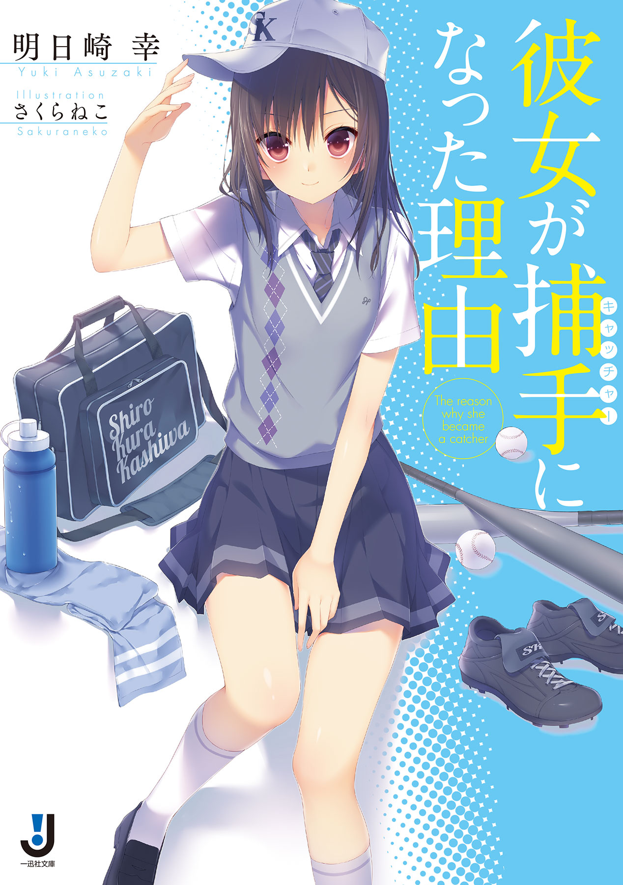
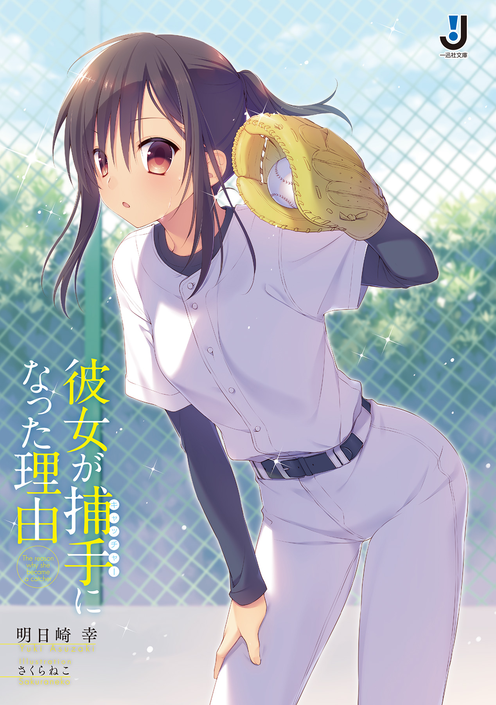
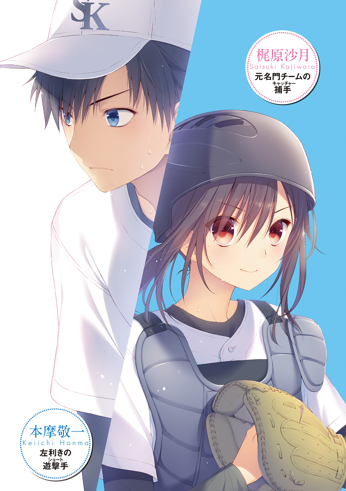
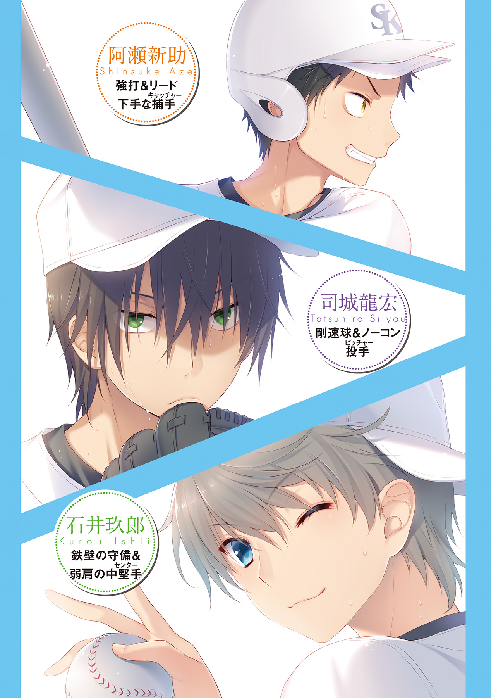
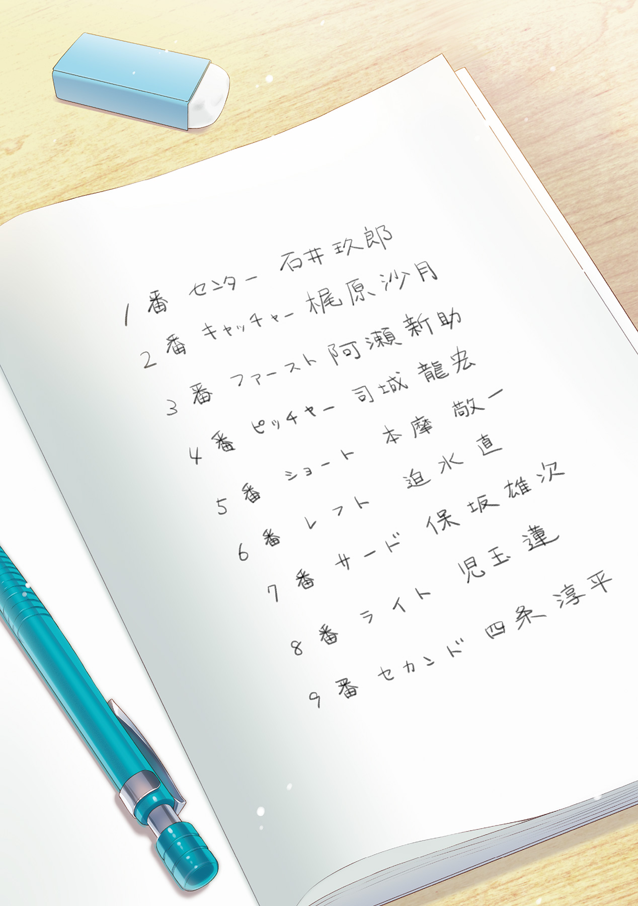
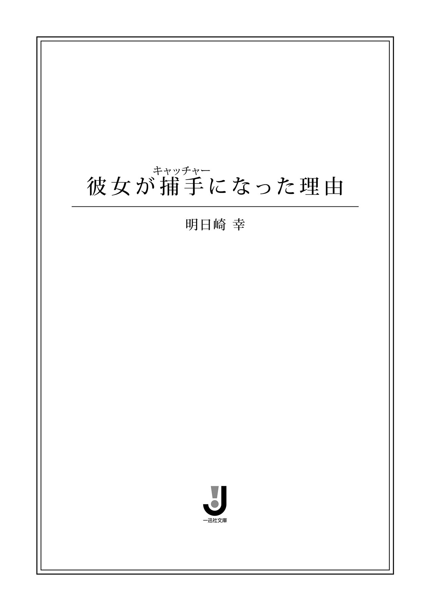
挿画：さくらねこ
デザイン：ナカムラナナフシ（ムシカゴグラフィクス）
公園の一角に作られた簡素なグラウンドに、絶好調の太陽は燦々とした日差しを提供していた。
うだるような暑さに、ショートの本摩敬一は思わず息をつく。投球の合間を見て帽子をとり、ぐいっと額の汗をユニフォームで拭う。すでにユニフォーム自体も汗でぐっしょりになっているから、あまり意味はないが気晴らしにはなる。
ピッチャーの司城龍宏が振りかぶったところで姿勢を落とし、守備体勢をとる。二塁からするするとリードを広げるランナーをちらりと見やりながら、来るかもしれない打球に備えた。
残念ながら、杞憂で終わってしまったわけだが。
パァン、と景気のいい音を鳴らしてキャッチャーのミットに吸い込まれていった白球に、しかし審判は大きく首を振るだけだった。再び、はぁ、と息がこぼれる。敬一だけでなく、グラウンドに散らばっているナイン全員のため息が一致したような気がした。
果たして何個目のフォアボールだろうか。二桁を越えたあたりから数えるのをやめたから、よく覚えていないが、少なくともこの回で三個目ということは間違いない。
バックネット裏にかけられたスコアボードに目を走らせる。滋ノ樹シニア対白倉柏シニアの練習試合。七回表、ワンアウト満塁、得点は７対６で白倉柏シニアがリード。このまま司城が抑えてくれれば、試合終了なのだが、どうもことはそう上手く運んでくれなさそうだ。
敬一はもう一度帽子をとって額の汗を気持ち拭ったあと、審判にタイムの合図を送って、ピッチャーへと歩み寄っていった。つられて、サードとセカンドが寄ってこようとしたが、手で制して止めた。ファーストは暑さでしなだれていて、何もせずとも寄ってこなかった。流石に入りたての中学一年生でフル出場はきつかったと見える。
対照的に、一番きつそうなピッチャーの司城は疲れを見せず、淡々と返されたボールを受け取っていた。敬一は軽く笑いを浮かべながら、口元をグローブで隠すこともなく話しかける。
「リュウ、もうど真ん中放っていけばいいよ。お前の球威なら抑えられる」
司城は、ぐるんぐるんと右肩をまわす。暑さなんて感じていないようなその元気なそぶりに、敬一はかるく呆れた。ひょろっとして背が高い司城は、線の細さからは想像できないほどにスタミナ抜群で球威も抜群。これでコントロールも抜群だったら、本当に全日本選抜に選ばれてもおかしくない逸材である。
小さく首をひねりながら、司城はホームベース上のストライクゾーンにぴたりとボールを差し向けて、そちらを凝視した。
「んー、おれとしてはそのつもりなんだけどさ。どーも、新のミットがあっちらこっちら行って、狙いがつきにくいんだよな」
新とはキャッチャーの阿瀬新助のことである。敬一はすこしうんざりしながら阿瀬を見た。
阿瀬はタイムがかかったと見るや、キャッチャーマスクを外して汗を拭っていた。もちろん、こちらには寄ってこようともしない。
腹をプロテクター越しにかるく叩き、けだるそうに首を鳴らしている。今にも、「あー、かったりぃ」と体に似合わぬ甲高い声が聞こえてきそうだった。
汗を拭う以前にやることがあるだろうに、と敬一は思わずにはいられなかった。腕を組み、司城へと向き直る。
「とにかく、打たせて取ろう。フォアボールだけはなるべく避けてくれ」
そう、ヒットはともかくフォアボールは野手のモチベーションが著しく下がるのだ。バッターと勝負した上でのヒットならば、野手としても投手としても諦めがつくのだが、フォアボールはいつ打球が来るのかと構えていた野手の気概を殺ぐだけでなく、投手のイライラも募らせる。もっとも、司城にイライラなどというものは無縁だが。
敬一の見立てのままに、司城はいらだった様子を微塵も見せずに頷いた。
「ん、わかった。ど真ん中に投げていこう」
「頼んだぞ、エースで四番」
敬一は、ぽんと司城の背番号、１番を叩いて、ショートの定位置へと戻っていく。タイムをとってもらった審判に礼をして、再び腰を落として構えた。
阿瀬がキャッチャーマスクをかぶり、球審が気合のこもった声でプレイの合図をかける。司城は満塁ということでゆったりと余裕を持って投球モーションを始める。それに合わせてランナーがするするとリードを広げていった。腕を動かし始めると同時に小さく左足を上げてためをつくり、腰の回転を以って、右手に握った硬球を力いっぱいに放り投げた。
びゅうっ、と球が風を切る音が聞こえ。
ぼぐっ、と鈍い音が風に乗って聞こえた。
「デッドボール！」
モロに体のど真ん中に硬球を食らい、悶絶するバッターを見て、敬一は思わずグローブで顔を覆った。確かに、フォアボールは避けてくれた。
「でも、デッドボールじゃ大差ない......」
ぽつりと呟き、三塁ランナーが同点のホームを踏むのをうらめしげに睨み付ける。
その視線の先、バックネットの裏に、見たことのない少女を見かけたのも、そのときだった。
つばつきの帽子を深くかぶり、Ｔシャツとスパッツを着込んで随分と活動的な格好をしている。少女と判断できたのはその体つきのおかげで、服装的には少年という感じだった。
少女は、まるで敬一とシンクロしたかのように、つまらなさそうに目を伏せて首を小さく左右に振っている。その様子たるや『情けない』という声がはっきりと聞こえてきそうなほどだった。
実際その通りだ、と敬一は思った。フォアボールだけでなく、ヒットなしですでにこの回３点も取られているのだから。
常々思っていたが、うちのチームは詰めが甘いのだ。最終回になるとエラーを頻発するナイン。エラーに乗っかるように、制球を乱す司城・阿瀬バッテリー。司城のスタミナや胆を考えると、阿瀬が勝負を急いでいると考えるのが妥当だろう。結果、きわどいところを狙いまくってボールを連発、この様に押し出しで同点、という情けないことが起きるわけである。
現状、情けなさが先立っているが、もちろん、悪いことばかりでもない。
キィン、と金属バットが硬球を芯で捉えた音が小気味よく鳴り響いた。考えながらも身構えていた敬一は、高々と勢いよく上がったボールの行方を追いかける。コントロールを重視して置きに行ったところを痛打されたのか、打球は右中間を破ろうかという勢いでぐんぐんと伸びていく。
「オーライオーライ！」
だが、そんな抜けそうな球を余裕の表情で追いかけていく小さな影がひとつ。センターの石井玖郎は、あらかじめそこに来るというのがわかっていたかのような始動の早さで、すでに打球の落下点に入っていた。敬一もそれがわかっているからこそ、中継点へ素早く移動し、ランナーのタッチアップに備える。
小柄な体を躍らせて、キャッチと同時に素早く返球を行なう石井。だが、そのボールに勢いはあまりない。ワンバウンドで返球を受け取ったころには、タッチアップしたランナーはすでにホームインしていた。
「無理無理、間に合わないよ」
石井は大きく肩をすくめ、いつものような笑顔のまま定位置へと小走りで戻っていく。
足の速さとあいまって、驚異的な守備範囲を誇る石井だが、実は、肩はそこまで強くないのだ。
これで７対８、まんまと逆転されてしまったということになる。流石にこれ以上の失点は許されない。
敬一は気を引き締めて、腰を深く落とし、打球を待つ。
ぎぃん、という鈍い金属音と共に敬一は動き出した。球威に押され、詰まり気味のショートゴロだ。かかっているスピンを見越し、ボールを鷲掴みにするようにグローブで包み込み、くるりと一回転。利き手である左手にボールを持ち替えて、セカンドへと放り、フォースアウト。
「グッジョブ、敬一！」
ねぎらうように司城がグローブをパンパンと叩いた。軽く手をあげて、それに応える。
内野において左利きというのは、大きなハンデだ。ましてやそれが、送球に迅速さを求められるショートなら。
それでも敬一は、中学レベルでは標準以上だと自負していた。していたからこそ、この程度のプレイは難なくこなさなければならない、とも。
ベンチへと戻っていく敬一の、目の端に映ったバックネットの裏では、少女が驚いたように目をぱちくりさせていた。それは、左利きの内野手に驚いていたのか。それとも、左利きとは思えぬ迅速な守備に驚いていたのか。そのときの敬一は、大して気にすることもなく、ベンチにひっかけておいたタオルを手に取り汗をぬぐった。
なにはともあれ、これでスリーアウト。ようやくチェンジである。七回表開始の時点では７対４でリードしていたのが、エラーやフォアボールが重なって、あれよあれよと言う間に逆転されてしまった。ふがいないと言ってしまえばそこまでだが、そんなこと言っている暇があるなら再逆転すればいいだけの話だ。
幸い、最終回の攻撃は二番からの好打順。ランナーさえ溜めれば逆転のチャンスはいくらでもある。
気合を入れて円陣を組み、送り出した二番は冷静にフォアボールを選んだ。続く三番は、キャッチャーの阿瀬だ。先ほどの回の失点を取り戻すために、相当に気合を入れて素振りを行い、ボックスへと向かう。ここでホームランが出れば逆転サヨナラ。もちろんそれを狙っているのだろう。
一球目、二球目のボール球を余裕をもって見送り、一度打席をはずして二、三度素振り、再びボックスへと入り、ピッチャーを睨みつけるように凝視する阿瀬。中学生とは思えぬ体格の良さと左バッターという特徴を生かした独特の威圧感が、相手ピッチャーを萎縮させる。腕が縮こまったまま放られた三球目は打ちごろのど真ん中。当然阿瀬が見逃すはずもない。
白球は軽快な金属音に乗せて、ライトスタンドのポールに直撃した。
項垂れながらマウンドを降りていく相手ピッチャーを尻目に、ホームベース上で祝福される阿瀬。祝福の輪からすこし離れたところでそれを見ながら、敬一は思った。
キャッチャーとしてはまだまだだが、バッターとしてはすでに超一流、それが阿瀬だ。他にキャッチャーをやれるような人もいないからこそ、阿瀬がキャッチャーをやっている、と言っても過言ではない。当人はキャッチャーというポジションにこだわりがあるみたいだが、その割に研究とかは苦手のようである。
剛速球でノーコンのピッチャー。内野手なのに左利きのショート。守備範囲は広いけど弱肩のセンター。強打だけどリードの下手なキャッチャー。なにかどこかで、ちぐはぐとしたこのチーム。
個々の能力は高い、けど活かしきれていない、白倉柏シニアの状況を表すなら、まさしくそれだった。
関東連盟予選まで、あと一週間。
何か、起爆剤になるような何かを。敬一だけでなく、チーム全体が求めていた。
起爆剤がやってきたのは、翌日の練習中。あいもかわらず太陽が全力でその力を発揮するころだった。
監督の号令で集められた敬一たちの前に、見知らぬ人物が、白倉柏シニアのユニフォームを着こんで立っていたのだ。
「この子は梶原沙月。大会前で急と言えば急だが、今日からうちのチームに入ることになった、みんな、よろしく頼む」
監督の言葉に合わせて、梶原沙月が帽子をとった。
集まっていたチームメイトが一斉にどよめく。口笛を鳴らす音も聞こえたが、おそらくは石井だろう。
だが、敬一は思いのほか冷静だった。
なぜなら、その少女の姿を見たことがあったから。
「梶原沙月。以前は黒岡早良シニアでキャッチャーをやっていました、よろしく」
仏頂面に負けないぐらいに、そっけない言葉。
帽子の中に隠されていたセミロングの髪を揺らしながら、梶原沙月は小さく頭を下げた。
そして再び帽子を深くかぶり、直立の姿勢に戻る。
表情のうかがえないその様子こそ、先日の試合中、バックネット裏に来ていた少女、そのものの姿だった。
「黒岡早良でキャッチャーやってたって、お前がか？」
沙月のポジションを聞いて、まず真っ先に阿瀬が噛み付いた。
「ええ」
沙月は一瞥もくれずに答える。それがさらに癇に障ったようで、阿瀬は詰め寄り、沙月を睨みつけた。
「黒岡早良っていったら、大会上位常連のクラブだろ。お前みたいな女がそこでレギュラーだったと言うのか？」
「......レギュラーとは、誰も言っていないわ」
「はん、控えか！」
「それでも、あなたよりは上手いとだけは言っておく」
「な......」
相変わらず阿瀬に向き直ることすらせずに、沙月はさらりととんでもないことを言ってのけた。侮辱のようなものを受けて、顔を紅潮させた阿瀬が文句を言おうとしたその瞬間、初めて沙月は、阿瀬の顔を射抜くような鋭い視線で見つめた。意志のこもった強い眼差しに、阿瀬は思わず黙りこくる。
「先日の試合、見せてもらったけどね」
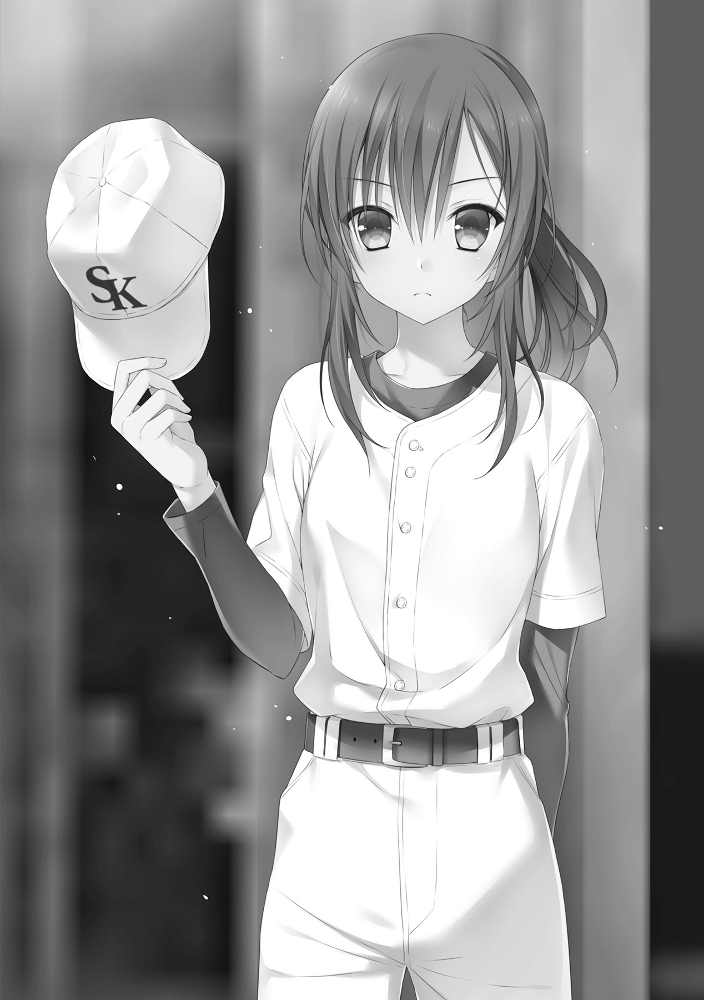
沙月は、自分より頭一つ以上大きい阿瀬につかつかと詰め寄る。勢いに押され、大柄な阿瀬がたじろいだ。
「キャッチャーはね、打ってればいいってわけじゃないのよ？ これ、昨日のスコアブックだけど、パスボール５個って何？ ８点も取られたくせにサヨナラホームラン打って浮かれて大騒ぎなんて、恥ずかしくないの？ 勝てばＯＫだなんて、そんな低い志でキャッチャーやろうなんて、百年は早いわよ」
阿瀬の感情を逆撫でするような辛辣な台詞をずけずけと言い放つ沙月。ある意味怖いもの知らずだが、なんとも否定できないなと敬一は思ってしまった。
「コントロールの悪さを棚上げしておいて、球威だけで押し切ろうとして、ストライクが入らなくて、フォアボール。腕が縮こまって、ボールを置きにいって打たれる。全部が全部キャッチャーのせいだとは言わないけど、キャッチャーだからこそその弱点に気付けて、共に矯正もできたはず。あなたはこの二年間、一体何を見てきたの？」
顔を紅潮させ、今にも飛び掛りそうな阿瀬は、しかし黙ってその言葉を聞いていた。本人にも頷かざるをえない指摘だからこそ、唇を噛み締めじっと話を聞いている。
やがて、辛辣な沙月の指摘が終わりを告げる。阿瀬は不気味に深呼吸をした後、つとめて冷静に口を開いた。紅潮していた顔はいまやすっかり治まっていた。
「......そこまで言うんなら、お前の実力、見せてもらおうじゃないか」
「よろしいですか、監督？」
売り言葉に買い言葉、というかたちで、阿瀬の言葉に対し監督に伺いを立てる沙月。こころなしか、嬉しそうに見えた。
監督がゆっくりと頷いたことによって、阿瀬と沙月の正捕手争いが勃発することとなった。
いきなり来た沙月が今までの阿瀬になり代わるかもしれない。そんな急転直下の出来事に、異を唱えるメンバーがいるんじゃないかと敬一は思っていたが、予想に反して一人もいなかった。なんだかんだで、阿瀬のリードや守備に疑問を持っていたのは、皆も同じだったのだろう。
かくして、皆が静かに見守る中、特守と称した正捕手争奪戦が始まった。
わけだが、正直、結果は火を見るより明らかだった。
しょうがないといえば、しょうがない。阿瀬はもともとバッティングを期待されているため、守備が疎かでもそこまで咎められることがなかったのだ。パスボールやリードのまずさは、バッティングで取り返してくれると、さして問題にされなかった。
そんな阿瀬の守備と、女性とはいえ仮にも全国クラスのチームで控えキャッチャーだったらしい沙月の守備とを比較するのは酷というものだろう。マスクや防具をつけたままの動きがいまだぎこちない阿瀬と比べると、沙月の動きはまさしく華麗。フライの落球なんて当然なく、ボールをこぼすにしても前方。ショートバウンドもなんなくキャッチするなど、技術の差をまざまざと見せつけて勝負の特守は終わった。
キャッチャーマスクを外し、一息ついた沙月は、項垂れる阿瀬に声をかける。
「野球は守備から。ホームランを打つより、０点に抑えるほうが楽なんだからね」
「......余計なお世話だ！」
吐き捨てるように呟く阿瀬から、沙月は視線を外さない。
「でも、あなたのバッティング。あれは本当に、全国に通じるクラスのものよ」
「なに？」
『全国』という言葉に反応し、ぴくりと眉を上げる阿瀬。沙月は、小さく笑みを浮かべて、またしてもとんでもないことを提案してきた。
「阿瀬くん、ファーストにコンバートしてみる気はない？」
「は？」
阿瀬だけではなく、敬一たちチームメイトの声も一斉にハモり、沙月に視線が集まった。だがそんな状況でも沙月は物怖じすることなく、言葉を継いでくる。
「それだけ体格が良くて、打撃力抜群。ファーストにうってつけだと思うんだけど、どうかな」
「ちょ......コンバートって、そんな簡単なものじゃねえだろ！ そもそも大会まであと一週間も無いんだぞ！」
「ええ、簡単じゃないわよ。死ぬ気で努力してもらうことになるけど、努力さえすればなんとかなるわ。世の中そういう風にできているはずだから」
「努力って......」
いたって本気な沙月の言葉に、阿瀬はますますたじろいだ。集まっていたチームメイトの中から、声があがる。
「え、じゃあ、僕は......？」
先日、ファーストスタメンで出場した一年生だ。名字は確か、近藤といっただろうか。とんとん拍子で進んでいく話に、不安が鎌首をもたげてきたのだろう。
「あ、えっと、今までのファーストスタメンの人にはごめんなさい。余計な差し金だったかもしれない。でも、これは必要なことだから」
その不安をある意味一刀両断するのも、これまた沙月の役目だった。
「そんな......」と項垂れる一年生を尻目に、敬一は聞き返した。
「必要なこと？」
「全国大会で優勝するために、必要なこと」
沙月は、当たり前でしょう、とさも当然そうな表情で、チームメイト全員を前にして高らかに宣言した。
「全国目指さないで、どうするの？ 私は、このチームならそれができる。そう思って、このチームに入ったのよ」
とんでもない起爆剤がやってきた。
きっと、敬一だけでなく、チームの誰もが思っただろう。
監督だけは、満足そうにしきりに頷いていたのが、忘れられない。
それからの練習は、今までとはまったく異なるものだった。時間帯的に言えば、そこまで変わったものではなかったが、密度が違った。
沙月は強引だったがバイタリティもあった。そしてその練習にも、経験に裏打ちされた合理性があった。だからこそ、コンバートに最後まで渋っていた阿瀬もやむなく受け入れ、ファーストの練習にせいを出しているのだ。
もちろん、急激に変わったチームの活動内容に皆が不満を抱かないはずがない。日に日に積もっていく沙月への不満。それと共に、たかだか数日のうちに実力も積み重なっていったのだから、皮肉な話だ。
そんな、大会を翌日に控えた練習日、ストレッチを終えた敬一に、沙月が声をかけてきた。
「本摩くん、少し話があるんだけど、いい？」
敬一はこのとき、とびきり嫌な予感を感じたが、無下に断るわけにもいかず、頷き、場所を変えようという沙月についていった。
誰もいないブルペン付近に場所を移し、沙月はいつもの調子で口を開いた。
「知ってると思うけど、内野手に左利きはありえないのよ」
そらきた、と敬一は思った。阿瀬がコンバートを推進されたときに、自分にも同じ話題が振られるんじゃないかと思っていたから、少なくとも覚悟はしていた。しかし、タイミングが悪い。せめてもう少し早く言ってもらえば、コンバートの練習ができたというものを。
どこにポジションを変えろと言われるのか、多少の不満を感じながら、敬一は沙月の言葉に耳を傾ける。
「でも、あなたはそのハンデを感じさせないほど、そつなくこなしてる」
「え？」
予想だにしなかった続きの句に、敬一は流石に驚きの声をあげた。その声に沙月は「どうしたの？」と聞いてくるが、あわてて取り消し手で続きを促した。
沙月は口元に手をあてて、うーんとうなりながら続ける。
「正直、迷ってる。あそこまでの守備ができるなら、左利きで内野手でもいいんじゃないか、って思うし......でも、あの対応力を他のポジションで生かしたらもっとすごいことになるかも、とも思うし......」
「要するに、どういうことだ？」
「要するに、本摩くんはどうしたい？」
口元の手は動かさず、質問に質問で返してくる沙月。今度は敬一が腕を組み、うんうんと唸りはじめる。二人して考え込む時間がたっぷり五分ほど、やがて敬一が顔をあげて、自分の意見を述べた。
「オレは、別にこのままでもいいんじゃないかと思う。確かに内野で左利きは普通ありえない。けどだからといって付け焼刃でいきなり変えて、上手くいくとも限らないだろ？」
「うん、確かにそれはその通りなんだけど......なんかこう、もったいないような気がするんだよね、私的には」
「もったいない？」
「ええ」
聞き返した敬一に、沙月ははっきりと頷いた。
「この前の練習試合のときの本摩くんを見てたけど、全てのプレイが正確なのよ。無駄がないって言うのが一番近いかな。これ、褒めてるから」
「あ、ああ、そりゃどうも」
思わず敬一は感謝の言葉を述べた。こうストレートに褒められることは久しぶりなので、裏の意味があるとわかっていても、嬉しい。
しかし案の定、沙月は、でもね、と言葉を継いできた。
「それなのに、左利きだから投球の際に無駄が生じてるわけで、なんかね、こう、方程式を遠回りに解いているような感じがする」
「遠回り、か」
内野手で左利きの場合、打球を処理し、ファーストへ送球する際に一旦、くるっと反対側を向かなければ送球ができない。スナップスローでなら問題はないが、いくらなんでも限界がある。だから、遠回りとはまさしく的を射た表現である。送球がワンテンポ遅れるのだ。
「いままで五日間」
「うん？」
「たった五日間だけど、このチームを見て思った。すごいわよ、このチームのメンバーは。正直、黒岡早良にひけをとらない。私が保証する。どうして今まで二回戦程度で埋もれていたんだろう、って思う」
沙月は目をきらきら輝かせながら、練習に励むチームメイトをみやった。その言葉に、裏はない。
「......まあ、ちぐはぐだったからね」
「だからこそ、そういうちぐはぐを消したいのよ。全てが上手く循環するようになったそのとき、このチームはきっと日本一になってるわ」
理想を語り熱くなる沙月。敬一は小さく肩をすくめた。
「そりゃ過剰評価しすぎだ」
「そのぐらい強く感じるものがあるってこと。......ああ、脱線した。とりあえず現状はショート維持でいこうと思ってるけど、ゆくゆくは外野とか移ってもらうかもしれないから、そのつもりでお願い」
「外野か......いっそのこと、左を活かしてピッチャーとかな」
「ピッチャー？ もしかして本摩くん、左利きなのに今までピッチャー経験なし？」
「え、あ、ああ」
敬一は曖昧に頷いた。薦められたことがあったような気もするが、守備の練習で必死だったから、よく覚えていない。
「......ふーん。ま、そういうことでよろしく」
意味深な沈黙を残して、沙月は自分の練習へと戻っていった。あれだけの技術を持ちながら、なお慢心することなく練習を重ねるその姿には感心せざるを得ない。
そして、今の話。
「本気で、本気なんだな」
熱く語る彼女の眼に、嘘はなかった。沙月の理想に付き合うのも、面白いんじゃなかろうか。敬一はふと、そんなことを考えた。
試合前の練習光景は、いつになく張り詰めていた。敬一の見た限りでは、いつも通りに振る舞っているのは女好きの石井と細かいことは気にしない司城だけ。その他のメンバーは、共通して戸惑ったような表情を作り、気を紛らわそうとばかりに練習を行なっている。阿瀬にいたっては練習にも参加せず、いまだに監督に噛み付いていた。
その話が全員に伝わったのは、ちょうど三十分ほど前だ。
「今日の試合の指示は、全部梶原に一任する」
最初は言葉の意味がわからず、ほとんどのメンバーが首をかしげていた。対象である沙月も少なからず驚いているようで、彼女にしてはめずらしく、ぽかんと口を開け広げていた。
いち早く意味を察した石井がヒュウと口笛を鳴らし、隣に立っている沙月に視線を向けた。
「これで正真正銘の姫だね」
楽しそうにそんなことを告げる石井。沙月ににらまれて、おっかないおっかないとそっぽを向いた。
敬一は、おそるおそるといったかたちで口を開く。
「それはつまり、選手交代などのタイミングは全て梶原に任せるってことですか？」
敬一の発言を受けて、皆が一気にざわつきはじめた。
監督が黙って頷いたことで、さらにざわめきは大きさを増す。
「どうしてですか!?」
納得いかないといった叫び声に、雑音はぴたりと止んだ。監督の前にずいと歩み出てきた阿瀬が、全身で怒りを表現していた。
「どうして、来たばっかりのこんなやつに、そんな大切なことを任せるんですか！」
「この五日間見て『任せられる』と、私が判断したからだ」
「こいつは黒岡早良にいたといっても、補欠ですよ？ レギュラーじゃないんですよ？ 試合に出てたわけじゃないんですよ？」
「だが、梶原の持っている技術はそれらを補って余りある。一番知っているのは、お前だろう、阿瀬」
「くっ......」
図星をつかれ、押し黙りながらも、阿瀬はまだ噛み付くのをやめようとはしなかった。当たり前だろう。今までキャッチャーで司令塔のつもりだった阿瀬だって、一度も任されたことのなかったことを、来たばかりの沙月に任せると言っているのだから。ただでさえキャッチャーのポジションを奪われたのだ、これ以上プライドを傷つけられたくないという気持ちは、敬一にだってわかる。
しばらく歯噛みしていた阿瀬は、決心したようにかぶりを振って、沙月を指差しながら、叫んだ。
「でも、納得いきません！ だって、だって、梶原は女なんですよ！」
その言葉に、沙月が鋭敏に反応した。
「性別は関係ないわよ！」
阿瀬に負けないぐらいに大きな声で反論し、まるで親の仇のように阿瀬を睨みつける。性別のことは本人も気にしていたのか、本気で怒っているようだった。
しばしにらみ合いを続ける阿瀬と沙月。気まずい沈黙が場に流れる。
「まー、いいんじゃないかな」
気楽そうな、間延びした声。
雰囲気にそぐわぬ穏やかな声で沈黙を破ったのは、司城だった。
自然と視線が集まるが、そんなことはまったく気にしていない様子で司城は続ける。
「梶原、野球うまいし」
この発言には、さすがに阿瀬も沙月も毒気を抜かれた。集まっていたメンバーからも、「まあ、上手いのは確かだよな」などといった声が漏れ、再び場がざわつき始める。
皆、沙月の技術と野球に対する心構えは認めているのだ。
敬一も、沙月の裏表ない野球に対する真摯な思いだけは理解していた。だからこそ、助け舟を出すように口を開く。
「オレもリュウに賛成だ」
「敬一！」
阿瀬が鬼のような形相で振り向く。彼としては、長年共に頑張ってきたメンバーに裏切られたような気持ちなのだろう。
「新、お前の気持ちもわかる。でも、お前ぐらい上手いやつなら、わかってるはずだろ」
阿瀬の言う通り、沙月は試合にこそ出ていないが、技術力は練習中にこれでもかというほど証明されていた。
シート打撃で打者の癖を読み、あらかじめ守備位置をずらしてヒットゾーンを狭める。連携練習でも、盗塁してきそうなタイミングでわざと外して、ランナーを刺す。まるでプロのそれを見ているんじゃないかと錯覚するくらいに、華麗な読みだった。
「お前こそわかってるのか敬一！ 俺らにとって、これは最後の大会なんだぞ！」
阿瀬は身振り手振りで訴えかけてくる。確かにこの大会は敬一たち三年生にとって最後の大会となる。負ければそこでおしまい。次期に備え、レギュラーの座を二年生に渡さなければならない。
「だけど、いつも通りだったら二回戦、三回戦で終わってしまう。新、オレはな、最後の大会だからこそ、いつもよりも上を目指したいんだ」
「敬一......」
いつにない敬一の熱弁に、阿瀬はあっけにとられていた。
沙月は、無表情でこちらを見つめている。
敬一はたじろぐことなく、その言葉を口にした。
「オレも、全国に行ってみたいんだ」
沙月は無表情ながら、静かに頷いた。
そのまま、なし崩し的にミーティングは終わった。
主力である司城龍宏・本摩敬一・石井玖郎が認めたことで、他のメンバーは戸惑いながらもしぶしぶ納得したようだったが、阿瀬だけは諦めがつかず、練習そっちのけでいまだに監督に抗議しているのである。
「どうしてですか、どうしてあいつが......っ！」
聞こえてきた怒号に、敬一はため息をつく。
ノッカーが遠慮気味に打ってきた平凡なゴロを難なくキャッチし、渦中の人物へと投げ返した。
沙月は、流れるような動作でボールをキャッチし、隣のノッカーに次の球を投げ渡していた。そして、声を張り上げる。
「次、センター、準備はいい！」
「いつでもいいよー、姫」
嬉しそうにひらひらとグローブを振るセンターの石井。いつの間にか定着されてしまった姫という呼ばれ方に沙月は顔をしかめたが、痛烈なライナーを難なくキャッチされてしまったので、文句も言わずに返球を受け取った。
その合間に再び敬一が、監督と阿瀬のほうを見やると、ぎゃあぎゃあと叫び続けていた阿瀬を、監督が手で制していた。
「これはすでに決まったことだ。変える気はない」
ぴしゃりと一喝。断言されたことで、阿瀬も押し黙り、監督に指示されるがまましぶしぶといったかたちで守備練習に参加し始めた。それでも、不満は微塵も隠そうともしない。
「一波乱、ありそうだな」
再び飛んできた痛烈なゴロを難なく捌き、正確に沙月へ返球しながら、敬一はぽつりと呟いた。
日本選手権に出れるのは、たったの32チーム。全国の連盟予選で選ばれたチームのみが日本一を争うことが出来る。その第一の関門である、関東連盟予選。関東は特に所属するクラブチームが多く、激戦区となっている。
今までの白倉柏シニアは、最高でも三回戦までしかコマをすすめたことはなかった。
だが、敬一は思う。
あるいは、もしかしたら。
全国を目指せるんじゃないか、と。
だが、沙月ならばきっと、こう思っているだろう。
必ず、絶対に。
全国へとコマを進めてみせる、と。
不敵とすら形容できる、その笑顔の裏で。
選手の数だけの思いを、それぞれが己が心にしまいこんだまま、保土ヶ谷スタジアム、午前11時、白倉柏シニア対空木シニアのプレイボールの合図は鳴り響いた。新生白倉柏シニアの、初陣だ。
試合前こそ、指揮権のことで揉めはしたが、レギュラー自体にそう代わり映えはなかった。キャッチャーに沙月が入り、ファーストに阿瀬が入った以外は練習試合となんら変わりない。先発は毎度お馴染み、ひょろっとした体にそぐわぬ剛球が武器の司城。俊足堅守のセンター石井、そして左利きのショートである敬一と、守備は変わっていないからこそ、キャッチャーが変わったことでどれだけチームに変貌が起こるのか、敬一は期待と不安を入り混じらせながら、司城・沙月バッテリーの第一球を見守った。
司城はいつもどおりのゆったりとしたフォームから、勢いよく腕を投げ下ろす。投げ放たれた白球は、真っ直ぐにキャッチャーに向かって突き進み。
軽い金属音と共に、弾き返された。
ジャストミートされた打球はワンバウンドしたのち、敬一の少し左側に勢いよく飛んでくる。
敬一はぎょっとした。初球からここまで強い打球が来るとは思っていなかったのだ。だが、慌てることはない。捕れない打球ではない。
難しいバウンドの打球を逆シングルで掴み取り、そのままランニングスローでファーストの阿瀬に投げる。
ランナーはまだファーストベースの三歩ほど手前のところでアウトを宣告され、天を仰いだ。心配された阿瀬の捕球も、正確に送球すれば問題ないようだ。
思わずふぅ、と安堵のため息がこぼれた。間をおかずに聞こえる「ワンダンワンダン！」という叫び声。そちらを向いてみれば、沙月がめいっぱい大きな挙動でワンアウトを取ったことを誇示していた。皆もつられて、全員で人差し指をあげる。
そうして二人目のバッターは三球目をセンターフライ、三人目はまた初球をショートゴロで三者凡退。一人のランナーも出すことなく、司城・沙月のコンビは順調な立ち上がりを見せた。
だが、敬一が一番驚いたのは、三者凡退に終わったことではなく、投じられた球が全球ストライクだったということだ。
ベンチへと帰る途中、敬一は沙月へと歩み寄り、小さな声で聞いてみた。
「リュウ、あんなにコントロール良かったか？」
沙月は小さく首を振る。キャッチャーマスクをメットごと外し、頭のてっぺんでまとめ、垂れ下がった髪をかきあげた。
「コントロールは掛け値なしに悪いわ。狙ったところに投げさせるのは、無理」
「......にしては、ストライクばんばん決まってたよな」
「いくらコントロール悪いといっても、ストライクとボールぐらいの投げ分けはできるのよ。ただ、今まではピンポイントで外角低めいっぱいとか狙っていたから意識しちゃって、よけいコントロールが悪く見えただけ。司城くんのようなピッチャーはね、どれだけストライクとかボールとかを意識させずに投げさせるかが勝負なのよ」
沙月はそのまま、防具を外すことなくベンチに腰掛けた。
それにならって敬一もベンチに腰を下ろしながら、なるほどと思った。精密なコントロールをもっていないからこそ、大雑把に内角だとか外角だとかそういう指示だけで、あとは荒れ球に任せたのだろう。その結果が、三者凡退だ。いつもならば、１回につき一度はフォアボールがあるものなのだが、ひとつのボールすらなかった。
「でもね」
打席に立っている一番の石井をじっと見つめながら、沙月は口を開く。
「どうした？」
敬一は小さく聞き返した。沙月はすこし逡巡した後、ためらいがちに言葉を紡ぐ。
「このリードはフォアボールは抑えられるけど、問題もある。相手が速球に目を慣らしたら、コントロールが大雑把なぶんだけ痛打される可能性が増える。さらに向こうは事前に司城くんの速球対策してたみたいだから、最初からけっこう食らいついてきてるでしょ？」
「ああ、それはオレも思った」
初球をあれだけ強く打ち返してくるということは、すでに速球に目を慣らしてきたと考えたほうがいいだろう。確かに一回表の投球では、ボールもなかったのだが、空振りもなかったのだ。
加えて、司城は変化球を投げられない。直球一本なのである。今まではフォアボールを連発するかわりに荒れ球だということで相手の腰が引けて、抑えてきたというのもある。だが、コントロールが大人しくなったということが看破されると、あれだけの球威をもってしても、どうなるかはわからない。
敬一が神妙そうな面持ちで考え込む隣で、沙月はほうとため息をついた。
「試合ではああいうピッチャー、はじめてリードするけど、やりにくいものね」
その呟きに重なるように、キィン、と軽快な音が響き、白球がセカンドの頭上を越えてライトの前に転々と転がる。
沙月はぱちぱちと拍手をし、先陣を切った先頭バッターをねぎらいながら、しかし表情に笑みなど見せずに言った。
「今日の試合、すんなりとはいかないわ」
二番バッターが綺麗に送りバントを決める、順調な攻め。
だが、沙月はまったくこれっぽっちも展開を楽観していなかった。
三番の阿瀬がタイムリーを放ち、幸先よく先制する。帰ってきた石井を沙月が祝福し、石井はおちゃらけたように沙月に敬礼する。そんなやりとりを見て、敬一は笑う。だが、心の中にある不安は去ろうとはしてくれなかった。
予想通りといえば、予想通りの展開になった。外れて欲しかった予想だが、予想通りになってしまった。
打者一巡したあたりから危なくなってくるのではと思っていたが、やはり四回表から空木シニアは司城の剛球を正確に打ち返してくるようになった。バットを短く持ち、ストライクゾーンの甘い球を正確に強く振りぬく。長打にこそならないが、積み重なっていくシングルヒット。三回まではパーフェクトだった司城だが、四回にヒット三本を固められ１失点、その後に続いた右中間を抜けそうな当たりを石井がダイビングキャッチ。犠牲フライで１点取られたとはいえ、何とか後続は断った。
しかし、五回ともなると、敵の対策は完全に徹底してきた。下位打線である八番からだったが、見せ球のボールは見られ、ストライクは痛打される悪い流れになっていた。
敵側の打撃に吸われるように、白倉柏ナインの打撃はしだいに元気をなくし、四回で毎回得点が途切れたかと思えば、三者凡退のおまけつき。点数的には６対２で白倉柏シニアがリードしているものの、勢いはもはや完全に空木シニアに傾いていた。
「ボール、ボール、ボールフォア！」
投げ込まれた位置から審判に気付かれないようにすこしミットをずらし、『ストライク、バッターアウト！』というかけ声を待っていた沙月は、審判のコールにがっくり頭を垂らした。
敬一も今日はじめてのフォアボールに肩を落とす。いらだちを隠せない阿瀬は、腕を組んだまま土を小さく蹴り上げた。
敵バッターはバットを自陣に放り投げ、拍手しながら一塁へと歩いていく。
これで満塁。しかもノーアウトでだ。点差は４点だから、一打逆転というわけではないが、楽観もしていられない。
沙月はボールを司城に返すことなくマスクをとり、審判にタイムを申告する。マウンドへと駆け寄り、内野陣にも集まるように指示をだしてきた。
全員が集まったところで、沙月が口にミットをあてて話し始めた。唇の動きを読まれないためだ。それだけ、重要な話をするということだろう。
「結構打たれはじめちゃったわね」
「まあ、向こうもリュウの対策をしてきてるみたいだからな」
沙月にならって、敬一も口元にグローブをあててフォローを入れる。皆が同調して頷くなか、阿瀬はにやにやと嫌な笑いを浮かべながら、口を開いた。
「ふん、リードが悪いんじゃないのか？」
「それは結果で判断して。今はそれより、この状況をどうやって抑えるか、でしょ」
ここぞとばかりに悪態をつく阿瀬。だが、沙月はとりあわない。
「司城くん、疲れ、ある？」
「んー、べつにそこまで疲れてる気はしないけども」
「梶原、司城のスタミナをなめるなよ。五回ぐらいで尽きるかっての」
司城の反論に乗って、さらに阿瀬がちょっかいをかけてくる。沙月はちらりと阿瀬のほうを見やり、言った。
「阿瀬くん、司城くんと握手してみてもらえる？」
「は？ なんだそりゃ、パワーでもわけてあげる、ってか？」
「いいから」
「へいへい、お姫さまの言うことには逆らえませんね」
「新！」
「......冗談だよ、敬一。そんな怒るなって」
阿瀬は肩をすくめながら、司城に歩み寄り、差し出された手を取る。ぎゅっと二、三度握り、沙月をかえりみた。
「これが、何だってんだ？」
「気付かないの？」
「だから、何にだよ」
阿瀬は司城の手を握ったまま、いぶかしむ。いらだちから力を込めてしまったのだろう、手を握られている司城が顔をしかめた。
「......新、痛いぞ」
「あ、ああ、わりぃ」
離された手をほぐすようにぶんぶんと振る司城。阿瀬は自分の手を握ったり開いたりしながら、不思議そうな表情を浮かべる。
「そんなに強く握ったか、俺？」
「逆。司城くんの握る力が弱かったの」
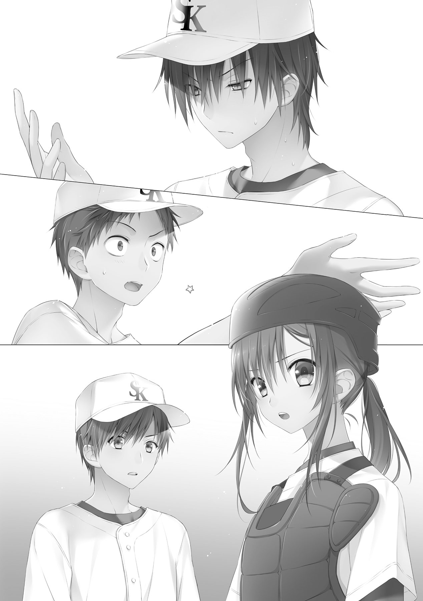
一連のやり取りを見ていた沙月はそういって「やっぱりか」とため息をついた。
「梶原、なにがやっぱりなんだ？」
沙月以外の理解していないメンバーを代表して、敬一が質問する。沙月は表情を変えずに司城のほうを向く。
「司城くん、握力、落ちてること、わかる？」
「あー、やっぱりそうだよな、これ」
言われ、司城は右手をまじまじと見つめはじめる。
沙月は、一様に首をかしげている敬一たちに向き直った。
「確かに司城君の体力的なスタミナは相当なものよ。でも、肩のスタミナはそこまでないみたいなの。肩のスタミナが切れると、握力が下がって制球が乱れ、球が上ずりはじめる。今までの試合のスコアブックとか見て、終盤に大きく崩れてるからもしかして、と思ってたけど、当たっちゃうとはね」
言われてみれば、今まで司城が先発完投した試合はすべて終盤に失点するケースだった。しかもフォアボールがらみでランナーを溜めて、痛打を食らうというお決まりのパターンで、だ。
体力的なスタミナは相当なものだから疲れは表に出ない。だが、体の奥からは確実に悲鳴があがっていたのだ。
終盤崩れる理由を詰めの甘さだ、と考え、諦めていたのは勘違い。何事にも、きちんとした理由があったのだ。
洞察力、判断力の差を痛感させられた阿瀬は、何も言えずにぐっと押し黙る。
沙月は腕を組み、なにやら考え始めていた。天を仰いだ体勢のまま、口元にミットをあてることもなく、口を開く。
「このなかで一番握力強いの、だれ？」
「え？」
質問の意図がよくわからず、敬一は思わず聞き返した。
「急いで、タイムの時間、もうすぐ切れる」
「オレだ」
敬一は迷うことなく自分を挙げた。
伊達に左で内野手をこなそうとしてきたわけじゃない。右投げに比べて不利な部分は、体を鍛えることでまかなってきたのだ。
それを聞いた沙月は、確認するように敬一を一度見たあと、頷いた。
「だよね。よし、決まり」
体勢を戻し、タイムの終わりを告げるため寄ってきた球審に、自ら歩み寄っていく。その途中でなにやら思いついたようで、くるりと振り向きセンターの石井を手招きして、マウンドに呼び寄せた。
「なになに、どうしたん？」
「俺が知るか。愛しの姫様に聞いてみろ」
小走りでマウンドにやってくるや否や、楽しそうに笑顔で話しかけてくる石井に、阿瀬は八つ当たりとばかりに悪態をつく。
「うっは、新ちゃん荒れてるね。あ、姫、ひめー！ この僕を呼ぶなんて、一体何事だい？」
球審との話を終えて戻ってきた沙月に、石井は馴れ馴れしく声をかける。沙月はとりあうこともなく、いつも通りの調子で淡々と言う。
「司城くん、センター。石井くん、ショートに回って」
「は？」
みんなの声が一斉にハモった。石井ですら、口をぽかんとあけて間の抜けた顔を披露していた。
敬一は、自分の名前が挙げられていないことに気付き、あわてて沙月に問いかける。
「石井がショートって、おい、梶原、オレは？」
「決まってるでしょ」
沙月はにっこりと笑った。露骨なまでに作り笑いだということが、はっきりとわかる。
笑顔を崩さずに指さされた場所は、足元。
「本摩くんは、ピッチャー」
「は？」
今度は、敬一ひとりの声だった。
「肩のスタミナが切れている司城くんを続投させるのは、チームにとっても司城くんにとってもよくないの。なまじ司城くんがタフだったから、控えのピッチャーもいないし。ぶっつけ本番っていう不安はもちろんあるけども、本摩くんの送球は正確だし左というメリットを考えれば、補って余りある。うん、大丈夫よ」
「ちょ、ちょっと、ちょっと待てって！ そんな簡単なものじゃないだろ、ピッチャーって！」
「そうだぜ姫。それに、どうして僕がショートに回るんだい？ ピッチャーを敬一にするんなら、リュウをショートに回せばいいだけの話だろ？」
「司城くんにいきなり守備機会の多いショートは厳しいわ。その点、石井くんならどこでもそつなくこなしてくれると思ったんだけど、見込み違い？」
沙月はそういって、いたずらっぽく笑った。石井は降参とばかりに肩をすくめる。
「は、うまいねぇ、姫。女の子の期待には応えたくなるのが男の性。任せてもらっちゃおうじゃないの」
「ちょっと、おいおい、石井！」
「敬一、諦めな、姫の言ってることは正しいよ」
石井は手をひらひらと振り、ショートの定位置へと歩いていった。セカンドランナーに大体の位置を聞きながら、早くも捕球から送球までの動作をシャドウで練習し始める始末だ。
「司城くん、ごめんね。完投できるようにリードしてあげたかったんだけど......」
「気にするな、梶原。他のポジションもやってみたかったからな」
いつも通り、のんびりした感じで司城もセンターへと歩いていった。
その背中からは、一種の余裕すら伺える。
きっと、なんだかんだでピッチャー同様、そつなくこなしてしまうんだろうな、と敬一は諦めにも似た感情を抱いた。
となると、頼りになるのは、皮肉だがこいつしかいない。
敬一は助けを求めるように阿瀬に視線を向ける。
だが、阿瀬はふくれっ面のまま何も言おうとはしなかった。
「阿瀬、お前もなんとか言ってやってくれ」
「......ふん。梶原の言ったことは、監督の言ったことだからな」
鼻を鳴らし、阿瀬もファーストへと戻っていく。
しつこい阿瀬のことだ、これで采配ミスをして、沙月が信頼を失えばいい、とでも思っているのだろう。裏でどう思っていようが、今反論しないということは、沙月を支持しているのと同義だと気付いているのだろうか。
気付いてないんだろうなぁ。
敬一はそんなことを思いながら帽子をとり、わしゃわしゃと頭をかいた。
「本摩くん」
「ん、あ、ああ」
沙月の声で我に返り、帽子をかぶりなおす。気付けばセカンドとサードも定位置に戻ってしまっていた。薄情なやつらめ。
こうなってしまった以上、もう八割方諦めはついたが、一応最終確認ということで、敬一は沙月に聞いてみた。
「本当に、オレがピッチャーやるのか？」
「キャッチャーやる？」
「......結構です」
余計な緊張をかけさせないためだろう。冗談を言い、おどけたように笑う沙月。
その笑顔に敬一は何も言い返せなくなり、ボールをグローブに手渡されるまでは、身動きすらとれなかった。
沙月はマスクをかぶりながら、マウンドを降りていく。途中で一度、顔だけ振り返らせて、声をかけてきた。
「本摩くん。いつも通り、投げてくれれば大丈夫」
「いつも通り？」
「そう、いつも通り。いつも、本摩くんが送球しているように投げてくれれば、大丈夫だから」
審判に促され、小走りで戻っていく沙月。敬一は、手にした硬球をじっと見つめ、うわごとのように「いつも通り」と繰り返していた。
その後、投球練習があったのだが、敬一はろくに覚えていない。沙月に指示された場所に、ただ、無我夢中に投げ込んでいただけだった。
「プレイ！」
長いタイムが終わり、球審のかけ声と共に、試合が再開される。ピッチャーのマウンドは思ったより高く、そしてキャッチャーまでの距離は思ったより遠く、胸から膝までのストライクゾーンは思ったよりずっと小さかった。バッターが立ったことで、先ほどまでの投球練習とはまったく雰囲気が変わっている。
「あんなちっさなところに、投げられるのか？」
思わず敬一は呟く。同時に、ずっとそんなところめがけて投げ続けていた司城に敬意を抱いた。
ランナーがいるということで、形ばかりのセットポジションをとってみる。プレートに左足を乗せ、一つ息をはく。顔をあげると、一塁の守備についている阿瀬と目が合った。思わず顔をそらし、キャッチャーのほうを向く。
沙月は、配球などクソくらえな感じで、ど真ん中を要求していた。なにはともあれ、バッター相手に投げてみないことにはわからないのだろう。
ランナーがいるのでクイックモーションの真似事をして、足を小さく持ち上げる。投球動作なんてものははたから見れば一瞬だが、その一瞬で体重移動のタイミングとか、地面に足をつけるタイミングとかが全てちぐはぐなのが、敬一には痛感できた。
まずい、と思ったときはすでに遅く、球は手からすっぽ抜けるように飛んでいった。
「しまっ......！」
投球動作を終えると同時に、敬一は叫ぶ。だが、それよりもはやく、沙月は動いていた。
腰を上げ、左バッターの後ろを通るような暴投を飛びついてキャッチ。すぐ体勢を整え、マスクを乱暴に外してランナーをけん制する。
ホームをうかがっていたサードランナーは、残念そうに塁へと戻っていった。
敬一は胸をなでおろし、ほう、と息を吐いた。初登板の初球が暴投なんて、トラウマになりかねない。
「こらっ！ 本摩敬一！」
「はっ、はい！」
予想だにしないタイミングでフルネームを叫ばれ、敬一はびくりと反応し、思わず返事をしてしまった。なぜだか頭も下げるおまけつきである。
恐る恐る頭をあげると、声の主である梶原沙月が周りの目も気にせずに、憤慨していた。
「いつも通り投げろっていったでしょ！ なんだそのパクリで塗り固められたピッチングフォームは！」
受け取った敬一の手が痺れるほどに力いっぱい球を投げ返し、それにあわせて言葉もぶつけてくる。
「いつも通りの本摩くんは、セットポジションなんてしてないでしょ！ いまやるべきなのは、投球じゃなくて送球よ！」
投げ捨てていたマスクをはたき、かぶりなおす。ジェスチャーでいつもの敬一の捕球から送球の真似をし、沙月は再びホームベースの後ろにしゃがみこんだ。
「送球をしろって言われても......」
確かに送球には自信がある。どんな体勢からでも正確な返球ができるように、妙にアクロバティックな練習をした記憶もある。でもそれは野手としての返球であって、投手としての投球ではない。
ホームのほうへ視線を向ける。打ち気満々のバッターがホームベースよりに構え、もともと小さなストライクゾーンをさらに狭く感じさせていた。その上、沙月が要求してきているコースは先ほどのど真ん中とは違い、内角低めギリギリいっぱい。
アホか。投げれるか。敬一は思わず心の中で悪態をついた。
いつものショートの守備における返球ならばともかく、こんなピッチャーマウンドからの投球で、そこまで正確なコントロールがあるわけもない。
ショートなら、ともかく。
返球ならば、ともかく。
そこで、ふと、体を電撃が通り抜けたように、浮かんできた。
いつも通りなら、できる。
いつも通りじゃないから、できない。
いつも通りじゃないとできないのなら、いっそのこといつも通り、返球するような気持ちで投げてみればいいじゃないか。
「いつも通り投げろ」
沙月の言っていたことは、つまり、そういうことか。
自暴自棄にも近いその発想。だが状況を看破するには十分な結論。
ふっきれたような表情を浮かべた敬一に、沙月はマスク越しにしっかと頷いた。パンとミットを叩き、内角低めギリギリいっぱいを要求してくる。
どうせ満塁なのだから、と、振りかぶるつもりで腰の重心を落とす。珍妙なフォームに、バッター、ランナーだけでなく、チームメイトまでも驚きを隠せない。だが、敬一と沙月だけは、それが正しいとわかっていた。
今、ちょうど自分の正面に打球が転がってきたイメージを思い浮かべる。
胸元のグローブを落とし、打球の勢いを殺すようにグローブを左側に引きながら持ち上げ、ボールを鷲掴みにする。肘をたたみ、手首のスナップをフル活用して――。
バックホーム！
白球がミットに吸い込まれる。
ぱぁん、と小気味いい音がした。
「ストライックッ！」
審判が、勢いよく腕を上げた。
凛と響く審判の声をその耳で聞き、たじろぐバッターをその目に捉えて、ようやく敬一は、自分がピッチャーだということを思い出した。
ああ、これがストライクか。この感覚が、ストライクを取るということなのか。
自然と左手が、握り拳を作っていた。
――リュウ、お前はいつも、こんな快感を味わっていたんだな。
こんな快感を、いつも味わっていたんだな。
敬一は、そのときばかりは司城に妬みを抱かずには、いられなかった。
「そうよ、それ、それよ！」
想像以上の手ごたえに、沙月は立ち上がり、軽く興奮しながら球を投げ返す。
敬一も、今の一球で完全にコツを掴んでいた。
こう投げればいいのか、と、己がフォームを完璧に理解していた。
次の要求は内角低めギリギリ。またしても難儀な場所を、と敬一は思ったが、無理と思うことはなかった。先ほどと同じく、流れるような野手の送球フォームから注文通りの内角低目へと球を走らせる。打者のバットがやや振り急ぎ気味に空を切り、キャッチャーミットへ白球は吸い込まれていった。
ストライク。気合いのこもった審判の声が聞える。なんと気持ちのいいものなんだろうか。
狙い通りが二球続いたことにより、敬一の中の自信が徐々に確信へと変わっていった。
そして沙月は、敬一以上の手ごたえを感じていた。
今のバッターの空振り。受けた球の感触、そしてこの目に映った光景。
（試してみる価値は、ある）
まだ４点勝っている、ここで点をとられてしまっても、このチームならば取り返せる。それよりも、この白倉柏シニアがさらに上のレベルに行くために、試してみなければならない。
意を決して、沙月は構えた。
「え？」
敬一は、沙月のその要求には流石に投球をためらった。思わず口からは驚きの声が漏れる。
だが、何度確認しても沙月はその要求を引っ込めようとはしない。
信じて投げ込んでこい。
マスク越しの目が、そう訴えかけてきているように感じた。
敬一はあきらめたように一度息を吐き、投球を開始する。沙月の意図はわからないが、何か必ず狙いがあり、勝算があるからこその要求なのだろう。
なら、信じて投げ込むだけだ。
並の投手のクイックモーションよりなお早い、クイックスローで投げ込まれた球は、まっすぐに、ど真ん中に吸い込まれていった。
ピッチャーがセンターに。
キャッチャーがファーストに。
センターがショートに。
そして、ショートがピッチャーに。
新しい白倉柏シニアの、本当のはじまりは、ここからだった。
「ありがとうございましたァ！」
最終回の守備を終え、勝利を告げられた白倉柏シニアのナインは、元気よく頭を下げて相手チーム、審判に挨拶をする。続いて、お互いのベンチに駆け寄り、互いの応援をねぎらい、頭を下げる。最後に自分たちのベンチへと戻り、応援してくれた人たちに感謝の意をこめて、頭を下げた。
恒例の挨拶を終え、敬一はスコアボードを見た。７対２。コールドとまではいかなかったが快勝である。しかも、自分が登板した五回、六回、七回はいわゆるパーフェクトピッチング。スコアボードに刻まれた０という文字を見るだけで、気分がよくなるというものだ。
「何やってるの、本摩くん。みんな行っちゃうわよ」
いままでにない感覚ににやつく敬一に、沙月がいぶかしみながら声をかける。
「なあ、梶原。あのゼロ三つは、一点も取られなかったってことだよな」
「当たり前じゃない。......本摩くん、大丈夫？ 熱でもあるの？」
「ああ、大丈夫、オレは普通だよ。なんかさ、嬉しくて」
スコアボードを見つめてにこにこする敬一。それにつられて、沙月も笑みをこぼした。
自分のピッチングで抑えたという感動。
自分のリードで勝てたという感動。
似ているようで違う感動を味わいながら、それでも二人は同じような笑顔を浮かべていた。ふと、我に返った沙月はこほんと咳払いをして口を開く。
「気持ちはわかるけど、浮かれず明日に備えないと。ほら、早くしないと置いていかれちゃうわ」
「そうだな、急ごう」
言うが早いか、敬一はバットケースを持ち上げ、駐車場へと走り出す。それを慌てて沙月が追いかけた。
「ちょっと、本摩くんずるい！ 私はプロテクターもあるんだから！ こらっ、待ちなさい！」
試合を終えた敬一たち白倉柏ナインはバスで地元のグラウンドへと戻り、二回戦は翌日ということで、後日の集合時間等の確認を行った後、解散した。
流石に試合後ということもあってみんなくたくたに疲れ果て、例外を除き、一様に帰路についていた。
本日４打点の阿瀬も、突発コンバート後の守備機会二回をこなした石井も、先発し80球以上投げ、ホームランまで打った司城も、例外ではなかった。
三人とも、家が同じ団地なので、帰路も自然と一緒になる。その道中の話題は、やはり自然と試合のことになった。
「いやー、五回は焦ったなー。色々な意味でよ」
「ふん、あの程度で慌ててタイムかけるなんて、今まででは考えられなかったぞ。信じられん」
「そりゃー、今まではずっと司城ワンマンショーだったからねぇ。新、そもそも試合中にお前がタイムかけたことなんてあったっけ？」
「......うるせえ」
痛いところを突かれて、阿瀬は押し黙る。くくく、と石井がからかうように笑い、阿瀬のひとにらみで降参とばかりに肩をすくめた。そして、沈黙が訪れる。
すでに日が落ち、白色の街灯に照らされた通学路を、泥と汗にまみれたユニフォームを着込んだ三人が、黙って歩みを進めていた。
「梶原の判断は、まちがってなかったな」
沈黙を破ったのは、やはり司城だった。解散する直前までアイシングの氷につつまれていた己の肩を見て、感慨深そうに呟く。
「そういやリュウ、いつごろから違和感があったんよ？」
石井に尋ねられ、司城はやおら天を仰いで考え始める。だがすぐに思考をやめて、きっぱりと言い放った。
「言われるまで気付かなかった。今日言われて気付いた」
「お前自分自身で気付いてなかったのかよ！ ......そりゃ僕らだって気付けねえっつーの」
大げさに頭を振る石井。司城ははにかむように苦笑を浮かべて、言葉を続ける。
「だけど、梶原は気付いた」
梶原という言葉に、沈黙を保っていた阿瀬がぴくりと反応した。
それに気付いてか気付かずか、石井がおちゃらけたような声で話題に乗っかってくる。
「おう、姫、姫な。姫はすげーな。僕はじめてショートやったけど、なんていうか、こう、『合ってる』感じだったね。うんうん、小回り利く僕にうってつけ」
石井は、沙月の話題によってますます不機嫌そうに顔を俯かせる阿瀬に、なれなれしく肩を回す。
「そうそうふてくされるなって新ちゃん。お前だって今日は珍しくエラーなしだったじゃん。なんだかんだで、ファーストが肌に合ってるんじゃねえの？」
「うるせえ！」
確信犯でからみついてくる石井を、阿瀬は乱暴に弾き飛ばした。ヒュウ、と口笛を鳴らして阿瀬から距離をとり、にやにやと余裕そうな笑みを浮かべる石井。それがなお、阿瀬のやりきれない怒りを助長させた。
「どいつもこいつも梶原梶原って、煩いんだよ！ 俺がいなければ、今日の試合だって僅差で危なかったってこと、わかってるのか！」
「だーから姫は最初からお前の打撃は認めてただろっつーの」
「くっ......」
癇癪を起こすも、再び図星をつかれて阿瀬は言葉を失い、石井を睨みつけるだけに留まった。ともすれば一触即発というかたちの二人の間に、司城が割って入る。
「今日の試合、新だけでもなく梶原だけでもない。みんな頑張ったから、勝てたんだ。誰か一人でもいなかったら、負けていた」
阿瀬をなだめるように、しかしはっきりとした口調で司城は続ける。
「梶原は新を認めたからこそ、コンバートをすすめたんだ。新なら、あのときからでも間に合うと思ったから、言ったんだ。新も、少しぐらいは認めてあげてもいいんじゃないか？」
阿瀬とて生粋の馬鹿というわけではない。沙月の持つ技術、熱意、そして努力の結晶とも呼べる実力。表では沙月に反目しながらも、心のうちでは徐々に認めてきているのは自分自身でもわかっていた。
だが、プライドという最後の壁が、納得を決して許そうとしなかった。
「わかっ、てるよ！」
それだけ吐き捨て、阿瀬はそそくさと先の交差点に姿を消した。その様子を見た石井は、軽く肩をすくめ、司城は小さくため息をついた。
「まー、反発したくなる気持ちもわかるけどな。不満がないっつったら嘘になる。姫はちーっと、ワンマンすぎるところがあるからよ。そこがまた、カワイイんだけど」
「......変わったな」
「ん、誰が？」
「おれたち、全員がだよ」
司城は、嬉しそうに笑った。
敬一は、試合の疲れを微塵も感じさせずに走り回っていた。もっというならば、沙月を探し回っていた。
「ここにもいない、か......」
フェンスで囲まれた第二練習場に人がいないのを確認して、敬一は一度大きく息を吐いた。呼吸を整え、再び走り出す。もう日は完全に落ちて、街灯のあるところ以外は真っ暗だ。のんびりと探していた挙句、入れ違いに帰られでもしてしまったら、くたびれ損である。
敬一にはどうしても、聞いておきたいことがあった。本当ならば解散直後にでも捕まえてしまえばよかったのだろうが、生憎別のメンバーに捕まり、話に花を咲かせている間に沙月の姿は消えていたのだ。
荷物はほとんどグラウンドに置きっぱなしになっていた。ということは、このグラウンドのある公園内にはいるのだろう。だから、今こうして走り回っているわけである。
一口に公園といっても、野球のグラウンドをすっぽり覆ってなおその数倍の広さを誇る自然公園である。全体を見て回るのでも一苦労。人一人を探すともなると、その比ではない。
沙月が行きそうな場所に当たりをつけて、走り回ってはみたが、いまだ痕跡すら見つからない。流石にもう探すのは無理か、と敬一が諦めかけたその時、風を切る音が小さく聞えてきた。
もしやと思い、茂みに隠れ近づいていってみると、案の定。公園の灯りの真下、ささやかな光が降り注いでいるその場所で、黙々とバットを振る沙月の姿があった。一度一度、フォームを丹念にチェックしながら、素振りを続けている。
皆が帰った後でも、自分だけは一人残って黙々と基本練習。こういうのを努力の虫、練習の虫というのだろうか。思わず敬一はしばらくの間、その練習風景に見入ってしまった。
「そうしてぼーっと見ている暇があるなら、打撃投手でもやってくれない？」
素振りを一段落させた沙月は、視線をぴくりとも動かさずに、まるで独白のように言った。
敬一は驚き、あやうく飛び出しそうになったが、気まずさから名乗り出れずそのまま黙って息を潜めた。
すると、沙月はため息をついて足元の硬球を拾ったかと思うと、今度は指向的にこちらを狙って、球を放り投げてきた。
茂みを飛び越すように山なりに投げられた球を慌てて受け取り、ばつが悪そうに立ち上がる敬一。
沙月はそんな敬一の姿に、とびきりのため息をついてみせた。
「はは、は、よく気付いたね」
「そりゃ、あれだけがさがさ動いていれば、誰だって気付くわ。隠れるにしたって、もう少しうまくやってね」
バットを肩に担いで、呆れたように息をつく沙月。照れ隠しの苦笑いを浮かべる敬一に、問い掛ける。
「それで、どうしたの本摩くん？ みんな、もうとっくに帰ったものだと思ってたけど」
「梶原こそ何やってたんだ、こんな人目につかないところで。秘密の特訓ってやつか？」
「そうよ」
すこし冗談めかした様子で敬一は聞いてみたのだが、沙月はさも当然そうに答えた。「それ以外の何に見えるの」と開き直る始末である。いや、これは開き直ってすらいない。
「私、打席中にもいろいろ考え込んでしまう癖があるから、バッティングだけはてんでダメなのよ。こうして素振りをすることでスイングスピードが上がれば、多少スイング始動までのタイムラグが生じても、それをまかなえるようになるんじゃないか、って思ってさ」
そこで沙月は言葉を切り、ふう、と諦めたようなため息をついた。
「とはいえ、今日もバント以外は見逃し三振。こればっかりは、なかなか治らないわね」
自嘲気味に笑い、呟く。だが、その表情の奥に秘められている感情は、きっと、『悔しさ』だろう。でなければ、疲れているはずの体に鞭打って、黙々と努力を重ねたりするものか。
努力に努力を重ね、なお努力を惜しまない。
けれど、その努力はなんのために。野球のためだけに、純粋に野球が上手くなりたいがためだけに、向けられているのだろうか。
何かもっと、大きな不安を隠し通すために、努力というメッキをつけていっているのではないかと、敬一には思えた。
なまじ自分自身が、左利きのハンデを克服しようと、努力を重ねたように。
『お前は失格だ』と宣告されないように、努力を積み重ねていたように。
「それで、本摩くん、結局どうしたの？ 私に用があったんじゃないの？」
「あ、ああ」
声をかけられ、敬一は我に返った。首をあからさまにぶんぶんと振り、余計な思考をシャットアウトする。
「えと、何て言ったらいいのかな。誤解をまねくかもしれないけど、そうだな......」
敬一は意を決したように、一度頷いた。
「どうして、オレは抑えられたんだ？」
その言葉に、沙月は驚いたように目を見開いた。少し、嬉しそうにも見えた。
「梶原のリードの大きさは十分承知している。でも、それだけじゃ納得いかないところもある。そう、三球目、オレが野手の投げ方に変えてからの三球目だ」
あのときの要求は、ど真ん中。コントロールがいいとはいえ球速は司城に及ばない敬一の球に、しっかりと球を呼び込み、振りぬかれたバットは。
かすりも、しなかったのだ。
試合が終わった直後は、抑えこんだという高揚感で気にもとめなかった。試合のことについて、他のメンバーと話しているうちに疑問が鎌首をもたげてきたのである。
敬一はわかっていた。コンバートなんてものはそんなに簡単なものじゃない。自分自身、左利きだからこそ、さまざまなポジションの練習をこなしてみて、結果ショートを続けることを選んだのだ。肌に合う合わない以前に、適正というものがある。ましてや、ピッチャーともなると他の比ではない。
球は速くない。変化球は投げられない。それなのになぜ、抑えることができたのか。気持ち悪さのようなものを感じた敬一は、だからこそ聞かずにはいられなかった。
「教えてくれ、梶原」
「ええ、喜んで」
沙月は今度こそ間違いなく、にやりと笑った。
「結局、理由は単純なのよ」
沙月は、手招きをして敬一を近くに呼び、硬球を受け取る。もてあそぶように二、三度手元で回転させた後に、ぎゅっと握ってそれを敬一に示して見せた。
「この握り、これが普通のピッチャーが投げるストレート」
赤い縫い目を横断するように、小さくピースの形を作った人差し指と中指を上から覆いかぶせて、折りたたんだ薬指と親指で挟み込んでいた。
「縫い目に合わせて握ればツーシームになる。......って本摩くん、どうしてそんな不思議そうな顔をしてるの？」
首をひねり、疑問符を浮かべている敬一に、思わず沙月は問いかける。
「もしかして、ストレートの投げ方を知らなかったとか、言わないわよね？」
「......えっと」
まるで責めているような、実際責めているだろう沙月の白い視線を浴びて、敬一は居心地わるそうに頬をかいた。
言い訳させてもらうならば、守備の練習で必死だったのだ。他のポジションにコンバートするとか、利き腕を矯正するとかの発想が出てこないほどに。そりゃあボールの握り方なんて、学ぶ暇などあるわけがない。
「はぁ、もういいわ。むしろそのほうが、どうしてあんな球が投げられたのか説明がしやすいし」
これ見よがしに大きなため息をついて、沙月はボールを敬一へと投げ渡す。
「握ってみて。それが答えよ」
「握ってみろって、こうか？」
言われるがまま、敬一はボールを鷲掴みにして沙月に示す。
沙月はその握りを四方八方からまじまじと見つめ、口を開いた。
「ふうん、握り的にはチェンジアップ、いやパームかな。それであんな球になるんだから、投げ方とか肘の使い方の関係かしら。なにはともあれ、ほとんど奇跡じゃない」
「......梶原、頼むからオレにわかるように説明してくれ」
沙月は「ああ、ごめん」とはにかむように笑って、小さく頷いた。そして、軽く呆れたような表情を作る。
「結論だけ言うと、本摩くんの投げている球はナックルボール。変化球のひとつ、いえ、もうあれは魔球ね」
「魔球？ いや、それは流石に言いすぎ......」
苦笑する敬一を、沙月はぴしゃりと切り捨てる。
「言い過ぎじゃないわ。本人以外、誰も投げられない球は魔球っていわれるのよ。そしてナックルを投げるピッチャーは、プロにだってひとりもいない。だったらこれは本摩くんの魔球よ」
「......ナックルって、そんなにすごい球だったか？」
「それにはまずナックルがどういうものかから説明したほうがよさそうね」
沙月はバットを小脇に抱えて、身振り手振りで説明を始める。
「えっとね、シュートとかスライダーとか、変化球っていうものはほとんど、回転をつけて変化させるものなの。ストレートだって、縦回転をかけて真っ直ぐ伸びていくようにしているのよ。左ピッチャーで言うなら、スライダーは左回転、シュートは右回転。回転をかけることによって、意図した方向に曲げようとしているの」
表情を一変、きりっと真摯な眼差しを敬一に向けた沙月は、なおも続ける。
「でも、ナックルはその回転をかけない。無回転の変化球。回転をかけないってことが、一体どういうことか、わかる？」
「......変化しない、んじゃないのか？」
沙月は首を振り、否定する。
「ぜんぜん逆。どう変化するか、わからないの」
その時、突風のようなものがびゅうっと吹き抜けていった。かぶっていた帽子を片手で押さえながら、沙月は茂みの葉を一枚ちぎり、敬一の目の前でぱっとそれを離した。風の残滓を受けた葉は、ひらひらと不可思議な軌跡を描いて地面へと落下していく。
「たとえば今の葉っぱ、動きとか予測できないでしょ？ ナックルも同じ。回転していないということは、もろに他の影響を受けるということになる。風とか、温度とか、湿度とか、そういうのがちょっと変わるだけで、右に曲がったり左に曲がったり曲がらなかったり、ときにはくねくねと動いたり、揺れたり......共通してるのは、速度がないから下に落ちる、ってことぐらいじゃないかしら」
沙月は敬一からボールを受け取り、縫い目に合わせて人差し指と中指、薬指を突きたて、ずいと敬一の目の前に突き出してきた。
「これが本当のナックルの握り。さっきも言ったけど、日本のプロに投げるピッチャーはいない、メジャーでも今はもういないんじゃないかしら。どうしてだか、わかる？」
沙月はその返事を聞くこともなく、手近な壁に向かってそのまま放り投げた。あらぬ方向へと飛んでいったボールは、壁をそれ、茂みを揺らして消える。「あちゃ」と、沙月は顔をしかめた。
「見た通り、今のは大失敗。というか、私には無理ね。投げ方を知っていても、回転を抑えることが容易じゃない上に、コントロールもつけにくい。さらにキャッチャーにもどう変化するかわからないから、捕球もしにくい。悪い点が三拍子そろってるからこそ、誰も習得しようとしない、いや、できない変化球。これを魔球と言わずして何と言うの？」
沙月は敬一に、複雑な表情を向ける。入り混じった期待と不安、信じられないものに向ける畏怖、そして一握りの、羨望。
「私が奇跡って言った意味、わかるでしょ？ 本摩くんは、そのナックルボールを自然に、しかも完璧にコントロールして投げているのよ。ナチュラルにシュート回転するピッチャーはよくいるけど、ナチュラルで無回転のピッチャーなんて聞いたことがない。ナチュラル・ナックルってところかしら」
きっと前代未聞よ、と沙月は言葉を締めくくった。敬一としては、いつも通り投げただけであって、そんな大それたことをしたつもりはない。
前代未聞、そんなことを言われても、これっぽっちも実感が湧いてこないのだ。
敬一がどうリアクションしていいのかわからずに佇んでいると、沙月は表情を崩し、指折りながら言葉を継いできた。
「とはいえ、セットポジションができない、投球フォームもボークすれすれな上に基本ムチャクチャ、課題は山積みよ。明日先発なんだから、せめてセットポジションはなんとかしないとね」
やれやれとばかりに肩をすくめ、首を振る沙月。敬一は一度首をひねったあと、全身で驚きを表現した。
「ちょ、ちょっと待て！ 明日もオレが投げるのか、しかも先発!?」
「当たり前でしょ、あ、あったあった」
絶句する敬一を尻目に、沙月は茂みの中からボールを探し出した。そして、ぽけっと突っ立っているだけの敬一に向かってそれを放ってくる。
「時間はあまりないけど、練習すればなんとかなるわ。努力は決して私たちを裏切らない」
「今から練習するのか？」
ボールを受け取り、うんざりとした表情を作る敬一。
「若いんだから、一日寝れば疲れなんて回復するわよ。フォアボール連発で敗戦もどうかと思うけど、ボーク連発で敗戦なんてもっと嫌だわ」
バットをかついでグラウンドへと歩き出していた沙月は、渋って動かない敬一に駆け寄り、顔を覗き込んできた。
「なに？ それとも全国に行きたいというあの言葉は嘘だったの？」
「......う、嘘なわけあるか！ ほら、さっさと行くぞ！ セットポジションぐらいすぐにマスターしてやる！」
「ふふ、そうこないと」
顔を赤らめ足早にグラウンドへと向かう敬一のあとを、いたずらっぽく笑った沙月が追いかける。
日はすでに完全に落ちていたが、グラウンドの明かりはいつまでたっても落ちることはなかった。
移動中のバスの中は静かだった。隣同士で話をするにしても、ひそひそ声。起こる笑いも、くぐもったもの。試合前の移動中ともなると、皆気分が高揚して騒ぎたくなるものだが、今日に限ってはそういうことがなかった。
もちろん、それには理由があるのだが。
「監督、今日も梶原に全権委任するつもりですか」
「ああ、そのつもりだ」
いつもよりも数段声の大きさを落とした阿瀬の質問に、監督は呟くように答えた。
阿瀬は小さく舌打ちをしたが、それ以上騒ぐことはなく、窓の外へと視線を走らせる。
「監督、おれは今日、どこですか？」
「お前は最初からセンターだ」
「やった」
いつも通りの静かで淡々とした口調で、司城が聞く。監督はまたも呟くように答え、司城は嬉しそうな顔で小さく拳を握った。
隣に座っていた石井が、意外そうな表情で司城に話しかける。
「なんだよ、リュウ。お前、センター気に入っちゃったのか？」
「ああ。外野から見る試合は、おもしろいな。全体が、よく見えるんだ」
「ちぇー、僕の戻る場所はなしかー」
「石井、うるさいぞ」
いつも通り、小柄な体にそぐった高い声で大げさに嘆く石井。場違いなその声を監督が注意する。
「へいへーい、すいませーん。監督、怒られついでに質問なんですけどー」
そういって、石井は席から乗り出し、これ見よがしに一番後ろの席をかえりみた。
「どうしてあの二人、あんなに仲良さそうなんすか？」
「......そりゃあ、バッテリーだからな」
「理由になってないっすよ、それ」
石井は呆れたように呟き、大げさに肩をすくめる。
皆が静かな理由。
一番後ろの席の、静かな寝息。
ピッチャーである敬一と、キャッチャーである沙月が、お互いの肩にもたれかかるように、眠っていた。
熟睡した二人の寝息が重なって、一つに聞こえている。
「はは、息のピッタシなことで、妬けるねぇ」
茶化すような石井の言葉。それに応えるように、敬一が一度体をよじらせた。
それは、試合前の守備練習の時間だった。敬一は、まだすこし寝ぼけの残っている頭をかきながら、グローブを取り出し定位置へと駆けていった。
バスの中での熟睡から目を覚まして、あまり時間が経っていない。ショートの定位置に石井が居座り、セカンドと連携の確認をしているのを見て、そういえばコンバートしたんだな、というのをそこでようやく思い出すぐらいには、寝ぼけていた。
ピッチャーマウンドに上がって、ノッカーと共にいる沙月を見てみると、こちらもまだ眠そうにあくびを噛み殺していた。
まあ、当然と言えば当然である。先日の秘密の練習、敬一も沙月も時計を持ってきていなかったのが最大の失敗だった。あまりにも帰りが遅いのを心配して、親が捜しにくるまで、疲れた体に鞭打ちながら、ずっとグラウンドで投げ込みをしていたのだ。家に帰るころには日付が変わろうかという時間帯で、当然のごとく疲労困憊。風呂の中で何度意識を失いかけたかわからない。その分ぐっすり寝て、疲労も十分回復したと思うのだけども、如何せん体がまだ運動の対価である睡眠を求めているようだった。
外野が小走りで散開し、最後に阿瀬がのろのろとファーストの守備位置についたところで、守備練習がはじまった。
「ピッチャー！」
「ああ」
練習となったら眠いなんていっているわけにはいかない。頬をパンと叩いて、腰を深く落とす。ショートよりの強いゴロを、ランニングキャッチしてそのまま一回転、ホームの沙月へと返球する。
狙い通り、ミットのど真ん中に球が吸い込まれていくのを確認して、敬一は少しだけ安心した。昨日、ピッチャーの練習ばかりしていたから、ともすれば勘が鈍っているんじゃないか、と思っていたのだ。長年反復で練習していたかいが、まさしく今出たのだろう。完全に体が覚えていた。
沙月ははっきりと頷いて、ノッカーにボールを渡し、続けて叫ぶ。
「ファースト、行くわよ！」
「............」
「ファースト！」
「......ちっ、叫ばなくても聞こえてる！ いいからさっさと打て！」
催促されたことにいらだった阿瀬が、けだるそうに肩を回して構えをとった。沙月はノッカーに小さく耳打ちをすると、ノッカーは頷き、一塁線に向かって強烈な打球を打ちはなった。
「なっ......！」
予想していなかった打球の勢いに思わずすくみあがった阿瀬の横を、硬球がバウンドとともに抜けていった。一塁線の内側に、打球の跳ねた跡だけが残る。
「ファースト、油断してるとそうなるのよ！」
「ちょっと待て、ふざけんな！ なんであんなに打球が早いんだよ！」
「ふざけてるのはどっち？ 打球は早いものなのよ、一瞬の油断が許されないほどにね！ 一塁線はね、抜かれると長打確定なんだから、集中を切っちゃダメ！」
「あーあー、うるせえうるせえ！ わかったよお姫さま、次から気をつけますー！」
ふてくされたように大声で叫び、全身で沙月に対する不満をあらわしながら、仰々しく頭を下げる阿瀬。沙月はその態度に流石に眉をひそめたが、別段何を言うこともなく、セカンドへとノックを再開した。
別に沙月は阿瀬だけに強烈な打球を打つよう指示したわけではなかった。阿瀬に打ったもの、いや、それよりも強い打球を各所に見舞うようにノッカーに指示していたのだ。野手が後逸するたびに、沙月に向かって「お前が捕ってみろ」とか「捕れるはずないだろう」とか、野次にも似た阿瀬の文句が飛んでいたが、それでも打球の強さを変えなかったということは、何か狙いがあってのことなのだろう。
結局、守備練習でのノックを満足に捕球できたのは、ピッチャーの敬一とショートの石井、そしてセンターの司城ぐらいだろうか。来るたびに強くなっていく打球には、敬一ですら冷や汗をかいたぐらいだ。
阿瀬にいたっては、満足に捕球できた球はなく、体で止めて前に落とすのがやっとだった。打球を体で受け止め、痛みに顔を歪めながら、そのたびにぎろりと沙月を睨みつける。だが、そんな敵意がありありとこもった視線に沙月はまったくとりあわず、無表情でノックを続けた。
守備練習を終えた後、石井が敬一に駆け寄り、声をかけてきた。
「なあ、姫になにがあったん？ 今日はずいぶんとヒステリックだぞ」
「どうしてオレに聞くんだよ」
「そりゃ、まあ、なぁ」
にやにやと笑う石井の後ろから、ひょこっと司城が姿を現す。
「新、荒れなければいいんだけど」
「おう、新ちゃんようやく姫を認め始めてた矢先にこれだもんなー、おっかなくて近寄れんよ」
石井は冗談めかして手をひらひらと振る。敬一は口元に手をあて、考え込み、ぽつりと呟くように口を開いた。
「......梶原のことだから、この練習にもきっと意味があるはずなんだ」
司城が、ゆっくりと頷く。石井は両手を頭の後ろに回して、いししと笑った。
「ああ、それはわかってる」
「姫が無意味にこんなことするとは思えないしね。ま、だからこそ新ちゃんは反発するんじゃねーの？ 何か意味があるんだろうけど、その意図をつかめない。そこが悔しいんだろうねー」
ちらりと阿瀬を見やると、守備練習が終わったにも関わらずまだファーストベース付近に佇んでいた。ライン際の打球の跡を見つけるたびに、いらだたしげにそれを蹴り上げている。遠目にもわかる堅く握られた拳が、悔しさを滲ませていた。
「おーおー、荒れてる荒れてる。八つ当たりされないよう、近づかないほうが懸命だなこりゃ」
「それがいい。石井が絡むとよけい話がこんがらがる」
「うわっ、ひでえ言いよう。じゃあリュウ、お前なんとかしてやれよ？」
「おれには無理。そうだな......」
思いを馳せるように中空に視線をそらす司城。そして、その視線を徐々に下げていき、曖昧に敬一を捉えたところで、動きを止めた。つられて、石井も敬一のほうに視線を向ける。
背筋にぞわりとした感覚を受けて、敬一は後ずさった。
「な、なんでオレを見るんだよ」
「いやー、リュウにつられて？」
「......なんとなく」
「その沈黙はなんとなく、じゃないだろ、明らかに」
敬一ははぁ、とため息をつく。これ以上絡まれるとやっかいだと思い、ベンチへと小走りに向かった。確かに阿瀬と沙月の確執も懸案ではあるが、敬一にとってはそれよりも考えなければならないことがあった。
五番・ピッチャー。
それが、今日の自分の役割なのだから。
二回戦の相手は、翠央北シニア。打撃力に定評があり、左と右のジグザグ打線で打ち勝ってきたチームだ。ただ、昨日の試合に限って見れば、完全封殺の五回コールド。守備力の向上もめざましく、二回戦の相手としては最悪の部類に近い。
「でも、それは向こうにとっても同じこと」
客観的な戦力分析の最後をそう締めくくって、沙月は持っていた手帳をパンと閉じた。
監督と沙月を中心に、円陣を組んでの試合直前ミーティング。昨日の試合のときは、監督の権利委譲のことで揉めたため、それだけで終わってしまったのだが、今日は滞りなく進んでいた。とはいえ、渦中の人である阿瀬は、輪の中に加わってはいるものの、終始憮然とした表情で佇んでいて、沙月の話も右から左という感じだ。
「急な守備力向上は疑問だったんだけど、向こうのスタメンを見て、氷解したわ。今日の試合は正直、大量得点は期待できない。となると、失点をできるかぎり抑えていかないとならないの。みんな、しっかりお願い」
そういって、沙月は全員をぐるりと見渡す。
それに応えるように、皆はゆっくりと頷いた。
ただ一人、阿瀬を除いて。
「どんなやつがいるかは知らないが、しょせんは俺らと同い年だろ？ そこまで警戒しなくても、俺が打ち砕いてやるよ」
肩をすくめ、これ見よがしな大声で言い放ちながら、阿瀬はずいと拳を前に突き出す。沙月が気分を害されたように視線を向けると、阿瀬は口元をつり上げて、鼻を鳴らした。
「取られたら取り返せばいい。打たれたら打ち返せばいい。０点に抑えて勝とうが、ホームラン打って勝とうが、変わりはないだろう？ 野球ってのは、最終的に多く点を取っていたほうが勝つんだからな」
「......自信を持つのは勝手だけどね」
沙月は大仰にため息をついて、強い視線で阿瀬を射抜いた。
「そう簡単に打てそうにないから、失点を抑えていこうって言ってるのよ。そりゃあ、私だってうちの攻撃力の高さは十分承知してるわ。それでも、翠央北シニアのピッチャー、佐々木くんを打ち崩すのは困難だと、そう言ってるの」
「なっ......」
「そんなにすごいのか、佐々木というのは？」
辛辣な沙月の言葉に、阿瀬が反論しようとした矢先、それをさえぎるように司城が質問を投げかける。
沙月は神妙な面持ちで一度頷き、答える。
「宮城の魔神、って誰か聞いたことない？」
質問に質問を返す沙月。司城は腕を組み、考え込んだ。石井は早々に肩をすくめて降参宣言。阿瀬はどうでもよさそうに考えてすらいないようだった。
「宮城の魔神......」
そんな中、いち早く思い当たったのは、敬一だった。思わず反芻してしまい、チームメイト全員の視線を浴びる。
やむなく、恐る恐るといったかたちで口を開いた。
「そんな呼び名を、ちょっと前に雑誌で見かけたことがあったような......確か、地方大会で奪三振の記録を塗り替えたやつ、だったか？」
その答えに、沙月は満足そうに頷いた。
「ええ。そのときの奪三振数、なんと二十一。つまり、全てのアウトを三振で取ったのよ。全国大会では膝の故障とかであまり振るわなかったみたいだけど、それにしたってすさまじいポテンシャル」
沙月は、円陣の隙間から敵チームのベンチをちらりと見やった。
「宮城からいなくなったとは聞いてたけど、まさか関東に来ているとはね」
円陣が一斉に解け、皆一様に敵ベンチへと視線を注ぐ。軽いキャッチボールで肩慣らしをしている、明らかに他の選手とスケールが違う大柄な少年に、皆の視線が集中する。
それに気付いた少年は、挑発的に帽子をかぶり直した後、キャッチボールの相手を座らせて、一度だけ力を込めて投球を行なってみせた。
ばぁん、と強烈な捕球音がこちらにまで響いてくる。
「宮城の魔神、佐々木和樹」
あっけにとられる皆に、ギリギリ聞こえるぐらいの小さな声で、沙月はぽつりと呟いた。
「持ち球はストレートとフォーク、他はなにもない、その二つだけで三振の山を築きあげた。正直、二回戦の相手としては最悪よ。決勝でこそ釣りあうレベルだと、素直に思うわ」
冷静に己の見解を述べる沙月。敬一は、思わずつばをごくりと飲み込んだ。
自分は今日、そんな相手と投げ合わなければならないのだ。
投げ合って、勝たなければならないのだ。
思わず体がぶるっと震えた。それが武者震いなのか、恐れからくる震えなのか、それはわからない。
だが、沙月は、敬一の感じている緊張や恐れなど、自分にはまったく無縁といわんばかりに、余裕のある表情を見せる。
「ま、つまり今日勝ってしまえばあとは余裕ってことなんだけどね」
集まる視線に、沙月は小さく肩をすくめ、笑ってみせた。
その笑顔に、皆の肩の力が一気に抜ける。敬一の震えも、すっと収まっていった。
しかし、ただ一人。阿瀬の憮然とした表情だけは、崩れることがなかった。
そうして、青葉緑東グラウンド、午前11時30分。白倉柏シニア対翠央北シニアの試合は、静かに開始の合図を迎えた。
敬一たち白倉柏シニアは先攻。相手ピッチャー、佐々木の投球練習にタイミングをあわせ、素振りを行なっていった石井に、沙月が駆け寄り、声をかけた。
「石井くん、追い込まれる前から積極的に打っていったほうがいいわ。ツーストライクまでが勝負よ」
石井は、わざとらしさ満々の芝居がかった挙動で、悲しそうに肩を落とした。
「姫、そんなに僕は頼りないかい？」
「そうじゃないんだけど......いくら石井くんでも、佐々木くんのフォークに初見で合わせるのは厳しいと思うわ」
フォローを入れつつも、はっきりと己の考えを述べる沙月。
忌憚ない沙月の態度に、石井は苦笑し、地面に置いていたヘルメットを手に取った。楽しそうにつりあげた口もとから、白い歯をのぞかせる。
「いやー、僕、ますますやる気が出てきちゃったよ。魔神のフォークを打ち砕くってのも、気持ちよさそうだ」
そう言って、石井は自分の頬をつんつんと突っつく。
「だから姫。先頭打者ホームラン打てたら、ここんところに祝福の熱ーいキッスをよろしく」
「......おもいっきり三振していいわよ」
「うわ、姫ひどい！ あっ、ちょっ、ちょいちょい！ 冗談だって！」
石井は慌てて取り繕うが、沙月は取り合わずに踵を返した。荒い足取りでそのままベンチへと戻り、どすんと敬一の横に腰を落とす。
「馬鹿は三振しなきゃ直らない！」
心配して損した、と沙月はむすっとした表情で呟く。からかわれたことがお気に召さないのだろう、珍しく尾を引いた怒り方をしている。
そんな簡単に石井の馬鹿が直ったら誰も苦労しない、と敬一は思ったが、口に出すと怒鳴られそうだったので飲み込んだ。むしろ目が合っただけで怒られそうだったので、触らぬ神に祟りなし、とばかりにバッターボックスの石井へと視線を戻す。
ちょうど一球目が投じられた直後で、審判の手がストライクというコールと共に勢いよく持ち上がっていた。
マウンド上の佐々木は、ボールを受け取るや否や、すぐに投球モーションに入った。膝と共に腕を持ち上げ、重心を落として足を踏み出す。同時に、遠心力を十分に受けた腕が遅れて出て、一気に振りぬかれた。
ギィン、と鈍い金属音があたりに響き、一塁線の外側に転々と勢いのない打球が転がっていった。ファウル、これでツーストライクだ。
バッターボックスでは、石井が痛そうに手をぶんぶんと振っていた。あれほど痺れがくるということは、よっぽど球質が重たいのだろう。
だが、捉えられないほど速いというわけでもないようだ。石井は、気合を込めて二、三度素振りを行ない、構える。その構えに、自信が感じられた。
「......来るわよ」
そのとき、沙月がぽつりと呟いた。
何が、と敬一が聞く間もなく、佐々木が投球を始める。先ほどとまったく同じ、重量感のあるフォームから放たれた球。
自信を持って振りぬかれた石井のバットは。
完全に、空を切った。
石井はその場でくるりと回転し、尻餅をつく。
「ストライク、バッタァーアウトッ！」
審判にアウトを宣告されたことでようやく状況を理解した石井は、恥ずかしそうにコンと頭をバットで軽く小突いて、すごすごと引き下がった。
途中、すれ違った二番バッターに二言三言助言をして、ベンチへと帰ってくる石井。ヘルメットを脱ぎ、大げさに手をひらひらと振る。
「いやー、ありゃ無理無理。姫の言う通りだね、追い込まれたら打てないわ」
石井は司城から帽子を受け取りつつ、珍しく憮然とした表情でピッチャーの佐々木を見た。
「速さはリュウのほうが上だけど、重さが洒落になってねえ。おまけに最後のアレだ、ほら、来るぞ」
言うが早いか、いつのまにか追い込まれていた二番バッターのバットがむなしく空を切った。その様子を石井は苦々しげに見つめ、沙月が静かに口を開く。
「あれが、佐々木くんを魔神と言わしめた伝家の宝刀、フォークよ」
「......にしたって落ちすぎだありゃ。どういう投げかたしてるんだ、あいつ」
「投げ方なんて関係ねえ。追い込んでフォークと決まってるなら、それを狙い打つだけだ」
一連の会話を聞いていた阿瀬が、ネクストバッターズサークルからゆっくりと立ち上がり、ベンチに向けて言い放った。
沙月は、そんな阿瀬の背中に向けて、つとめて冷淡に声をかける。
「阿瀬くん、あなたなら追い込まれる前のストレートはきっと打てるわ」
「............」
ストレートならば打てる。そうはっきりと言った沙月に対し、阿瀬は何も応えることなく、無言でバッターボックスへと向かっていった。
ストレートならば打てる。そう、沙月は言った。
それはつまり、フォークは打てない。そう暗に言ってきているも同然だった。
ふざけるな。
阿瀬は心の中で叫んだ。
勝手に決め付けるな。俺を誰だと思っている。
沸々と、次々と文句が浮かび上がってくる。
ふざけるな、ああ、ふざけるな。
バッティングを認めたのは、お前だろう。
認めたものを信じないとは、どういう了見だ。
グリップを握る手に、力がこもる。
力んだ構えに、無理が生まれる。
大好きな外角低目への直球にも、失投とも思える真ん中高目への直球にも、阿瀬はぴくりとも動かなかった。
狙いは次。追い込んだ後に来る、伝家の宝刀。それを打ち砕いてこそ、意味がある。
マウンド上の佐々木は、にやりと笑って、投球を開始する。機敏に持ち上げられた佐々木の脚が地につくまで、その数瞬が阿瀬にはずいぶんと長く感じられた。タイミングを合わせて右脚を踏み込み、フォークが落ちてくる場所を予測して、力強くバットを振りぬく。
ぶおん、と、うんざりするほど痛快に、空気を砕く音だけが聞こえた。
投じられたのは、フォークではなくストレート。しかも、嘲笑うかのようにど真ん中への打ちごろの棒球だ。
「くそっ！ てめえ、どうして投げやがらねえ！」
阿瀬は悔しそうにバットを地面に叩きつけた。マウンド上の佐々木を睨み付け、激昂する。
佐々木は何を言われているのかわからず一瞬きょとんとしていたが、すぐに理解したようで、ふてぶてしい表情を作り、コンコンと自分の頭を指差す。
「さぁて、何でだろうねぇ」
口元をゆがめ、マウンドを降りていく佐々木。それを阿瀬は憎々しげに見つめていた。今一度、バットを地面に叩きつける。金属が石とこすれた耳障りな音が、小さく響いた。
「畜生、舐めやがって！ 俺を抑えるのに、フォークは必要ないとでも言うのか......！」
「逆よ」
凛とした声に阿瀬が振り向くと、いつのまにかプロテクターをつけた沙月が厳しい表情で佇んでいた。
「フォークを投げたら打たれる。そう思ったから、慌ててストレートに変えたのよ。だから、あんなはたから見てもわかるぐらいの棒球になってしまった。舐められたわけじゃない、むしろ恐れられたからこその配球よ」
「......梶原」
阿瀬は驚いたような表情を浮かべ、沙月を凝視した。まさかこの朴念仁から、思いやりのある台詞を聞けると思っていなかったのだ。
ぽかんとした様子で見つめてくる阿瀬に沙月は気恥ずかしくなったか、乱暴にキャッチャーマスクをかぶりながら、口早に言った。
「とはいえ、あれだけ露骨にフォークを狙ってたら、誰だってストレート投げるわよね。狙うにしたって、もう少し上手くやりなさい」
「うるせえ」
少し見直したと思ったら、すぐこれだ。
阿瀬はうんざりしながら悪態をつき、バットを一度片手で振りぬき担ぐようにしてベンチへと歩いていった。
阿瀬と沙月が言葉を交わしていたとき、敬一は、マウンドの土を踏みならしながら、高ぶる鼓動と不安を必死に抑えようとしていた。
足元の土をスパイクで掘ったり埋めたり、無駄にロジンバッグを触ってみたり、いろいろやってはみたが、いかんせん落ち着かない。いまだ慣れないポジションに、敬一は決まり悪く空を見上げる。真っ青な空を見つめていると、ようやくすこしだけ落ち着けたような気がした。
「本摩くん」
初めての先発ということで、ただでさえ緊張している。その上、味方の攻撃は、敬一の目の前で三者連続三振という最悪のスタート。大量得点は期待できないということがわかってしまった以上、おのずとプレッシャーをかけてしまうのは仕方のないことだろう。マウンドを任されたからには、なるべく点を取られないようなピッチングをしなければならない。
「本摩くん？」
責任は、重大だ。
敬一はつばをごくりと飲み込んだ。からからの喉が、己の緊張をより如実に感じさせる。
ぎゅっと、強く手を握ったところで、自分がすこし震えていることに気がついた。
心の中には確かな懸念があった。なまじっか相手のピッチングを見てしまったからだろう。あれと同じぐらいの、いや、それ以上の投球をしなければならないという強迫観念のようなものを、感じていた。ピッチャーを、先発を任された以上、そうでなければならない、と。
この感覚には覚えがあった。ショートのレギュラーを言い渡された、あのときだ。レギュラーたりうる技術を持っていなければならない、右利きにも負けないレベルでなければならない。そのために、敬一は努力と研鑽を重ねたのだ。
ほう、と小さく息を吐く。
向こうは向こう、自分は自分。比べて考える必要は、ない。
頭ではわかっていた。だが、どうしても切り離して考えることができない。
敬一は瞑目し、言い聞かせるように呟く。
「大丈夫、大丈夫だ」
「とてもそうは見えないんだけど......」
呆れたような声に敬一が目を開けると、眼前にまさしく呆れ顔の沙月がいた。
「か、梶原ッ!? うわっ、とっ、たぁっ！」
突然現れた沙月の姿に敬一は驚き、身を仰け反らせる。運悪く、後ずさった足がちょうどマウンドのわだちに引っかかり、なす術もなく地面に尻餅をついてしまった。
「......本当になにやってるの」
怪訝そうな表情でまじまじと敬一を見つめてくる沙月。敬一は立ち上がり、決まり悪そうに服をはたいて、こほんと咳払いをした。恥ずかしさからか、顔が紅潮しているのが自分でもよくわかる。
敬一は取り繕うように口を開いた。
「お、オレのことはいいんだよ。それよりどうしたんだ、梶原。投球練習もする前から」
「ん、私は確認のようなものをしにきただけ。......いい、本摩くん、昨日抑えたとはいえ、あなたはまだ急造のピッチャーだということを忘れないで」
『急造』という言葉に、敬一は眉をひそめ、口を尖らせた。
「言われなくてもわかってるよ。というか、このタイミングで言うことじゃないだろ、それは」
「話は最後まで聞きなさい。全部しょいこまないでね、って言いたいのよ、私は」
沙月はたしなめるようにくすりと笑った。
「本摩くんのことだから、どうせ『佐々木と同じぐらいのピッチングをしなきゃならない』とでも考えていたんでしょ？」
「う......」
図星をつかれ、思わず黙り込む敬一。沙月は得意げな笑顔でなおも言葉を続ける。
「新しいポジションにやる気出して、責任感を持ってくれるのはいいことだけど、野球は全員でやるものよ。ワンマンにならないように、気をつけて」
「それをお前が言うか」
「あら、私はいつだってチームのことを考えてるわよ？」
「みんな、そうは思ってなさそうだぞ？」
「ま、そうかもね。でも、理由を説明しないとわかってもらえないんじゃ、リーダーとして失格だと思わない？」
「はっきり口で言わなきゃわからないことだって、あると思うけどな」
そういって敬一はちらりとファーストのほうを見やった。黙々と守備練習をこなしている阿瀬を目の端に捉えながら、沙月と顔を見合わせる。
「わかってくれると、信じてるからね」
「まあ、そういうことにしておくよ」
そこでようやく敬一の顔に笑みがこぼれた。自然と弛緩していた拳からは、いつのまにか震えが消えている。
「話が長くなっちゃったわね。なにはともあれ、気楽に、自然体で。楽しく野球、やりましょう」
沙月はぽんと敬一の胸を叩いて、定位置へと戻っていった。
結局は、最後の言葉が言いたかったのだろう。それまでの話は嘘ではないにしろ、全てオマケ。結論をなかなか口に出さず、もったいぶるように序論中論を述べるのが沙月の悪い癖だ。一週間程度の短い付き合いだが、その短い付き合いでも、よくわかった。
だが、その悪い癖も、緊張をほぐすのには思いのほか役に立つようだ。
上手い具合に肩の力が抜けた敬一は、ゆっくりと息を吐き、思考を切り替える。
ひとりでしょいこむ必要はない。
打たれても、後ろには皆がいるし。
迷っても、前には沙月がいるのだ。
敬一は、真っ直ぐに前を見つめる。
ピッチャーらしからぬ相変わらずのフォームで、前にいる沙月に向かって、球を投げ込んだ。白球は、微動だにせぬミットの中へと吸い込まれていき、軽快な音を立てた。
初回、翠央北ピッチャー・佐々木和樹、白倉柏ピッチャー・本摩敬一、ともに三者連続三振の見事な立ち上がり。展開は、早くも投手戦の様相を示していた。
初回だけを、見るならば。
両チームを通じて、はじめてランナーが出た、その時から、試合の展開は急速に揺らぎ始めた。
二回裏、翠央北の攻撃。四番の佐々木がバッターボックス内で豪快に素振りを行なっていた。
直前のピッチングで、三者三振とはいかなかったものの、三者凡退で仕留めてみせたその後の打席だ、さぞ気分をよくしてバッターボックスに入っていることだろう。
逆に、敬一としては、直前の打席で打ち取られたということもあり、お返しとばかりに抑えてやろう、という気持ちが少なからず、あった。
その力みが、球の変化を鈍らせた。
敬一が違和を感じたときには、すでに遅かった。
佐々木は、外角低めに投げ込まれた球を逆らうことなく流し打つ。変化が甘かったこともあいまってジャストミートされた打球は、痛烈なゴロとなりファーストの阿瀬に襲い掛かった。
思いもよらぬ強烈な打球に阿瀬の腰が逃げる。浮き上がった腰が足の動きを阻害し、打球はやすやすとグラブの下、股の間を抜けていった。
「ライト！ シングルでとめて！」
まるであらかじめ抜かれるのがわかっていたかのように、沙月はすばやくマスクを脱ぎ、バックアップへと向かう。グラウンドの芝が深かったのも幸いして、打球の勢いは殺され、回り込んだライトの正面へと転がっていった。
バッターランナーの佐々木は一塁を回ったところで捕球を確認し、小さく舌打ちしながら一塁へと戻っていく。
「ま、出塁できただけもうけもんか」
左肘につけていたプロテクターをベースコーチャーに手渡しながら、佐々木はぽつりと呟いた。
阿瀬は唇をかみ、俯いた。
言い訳のしようのない、完全な自分のミスだった。打球の勢いがあったとはいえ、真正面のゴロだ。捕れなくとも、体で止めて前に落とすことはできたはずだ。だが、いざとなると体がついてこなかった。キャッチャーの時には味わったことのない、強烈な打球に腰が引けてしまった。
守備練習のときに、あれだけ見せられていたはずなのに。
そこで阿瀬ははっとし、顔を上げた。
守備練習で見せられた強いゴロ。実際に試合で来た強いゴロ。阿瀬の記憶の中で、二つの打球の残像が、似通ったかたちで重なっていく。
まさか。
ちょうどタイムがかけられ、内野陣とキャッチャーがマウンドへと近づき、輪を形成する。阿瀬は思考をいったんストップし、小走りで輪に加わっていった。
「本摩くん、力みすぎ」
開口一番、沙月はぴしゃりと敬一を切り捨てた。敬一は居心地悪そうに頬をかく。
矛先が自分に向くと思っていた阿瀬は、軽く肩透かしを食らったように、ほうと息を吐いた。
沙月はなおも不満げな表情で、続ける。
「コースはほぼ完璧だったけど、変化が甘くなってたわ。対抗心燃やすのはいいけど、意識しすぎないでね、相手の思うつぼよ」
「......悪い。自分では意識してないつもりだったんだけど、やっぱり、こう、抑えきれないものがあった」
「気持ちはわかるから、注意はここまでね。佐々木くんを甘く見ていた私にも落ち度があるし。今ので多少彼のデータは入ったから、次から抑えましょう」
そういって、沙月はぐるりと円陣を組んだ内野陣を見渡す。一瞬阿瀬とも視線がからんだが、別に何をいうでもなく、正面に向き直った。キャッチャーミットで口もとを隠して、喋り始める。
「今日の本摩くんの球、変化が甘いみたいだから、今のような強烈な打球が多くなると思う。なるべく正面に打たせるようにリードするけど、抜かれてしまっても気にせずにシングルで止めるように尽力して。再開後はランナー一塁だから、フォースアウト狙いのシフトでね」
「あー、姫。すげえ話の腰折っちゃいそうだけど、いいかい」
「......なに？」
「さっき敬一の球がうんぬん、って言ってたけど、敬一は何投げてるんだ？ ショートから見てる限りだと、いつも通り送球してるようにしかみえねーんだよ。んで抑えちゃってるからなおさら不思議。姫の言う通り、翠央北シニアが強打なら、コントロールのよさだけで抑えられるほど甘くねーでしょ？」
石井の主観と客観を混ぜた鋭い指摘に、沙月は驚いたような顔を浮かべ、へぇ、と感嘆の言葉を漏らした。
「石井くん、口調とは裏腹に結構考えてるのね」
「姫、いったい僕を何だと思ってるんだい？」
明らかに落胆する石井。沙月はにやりと口元を歪ませる。
「聞きたい？」
「ヘコみそうだからいいです」
「賢明な判断ね。で、先の質問の答えだけど、結論を言うと本摩くんの投げてるのはナックルボールよ」
「ナックルボール？」
しれっと言い放った沙月の言葉を、敬一と阿瀬のぞいた全員が、グローブで口を覆うのも忘れて反芻する。ハモった声はそれなりの大きさで響き渡り、審判やバッターランナーの佐々木の視線まで集まってしまった。
沙月は顔に手をあて、はあとため息をつく。
「......まあ、バレても問題ない変化球だけど、試合中ってこと忘れないでよね。というかみんな、本当に変化球とか全然知らないのね。ああ、でも、司城くんが変化球投げないんだから、しょうがないのかな」
「姫こそ、そんな大きな声で、司城が変化球投げれないって言っちゃっていいのかよ」
「あ」
うかつとばかりに口を抑えて、はにかむように沙月は笑う。つられて皆にも笑顔がこぼれた。ただ一人を除いて。
「どうしてだ......」
ぽつりと呟くような声。静まり、一点に視線が集まる。
俯いたままの阿瀬が、固く拳を握りしめる。
「どうして俺を責めない！ エラーしたのは俺だ！ 悪いのは俺だろう!? どうして怒らない、どうしてなじらない！」
豹変したように叫ぶ阿瀬の声に、内野陣だけでなく外野にいるメンバーも驚いているようだった。石井は、阿瀬をいさめるように両手をひらひらと動かしながら、軽薄に口を開く。
「おいおい新ちゃん、急にマゾっ気カミングアウトは勘弁してくれよ。流石の僕も、そっちの話にはあわせられないぜ？」
「黙れ石井！」
「石井くん、黙ってて」
石井としては場の雰囲気を和ますために、冗談でも言ったつもりだったのだろうが、阿瀬と沙月にぴしゃりと叱責され、しゅんとしてしまった。敬一は努力をねぎらうように石井の肩をぽんぽんと叩く。
顔を上げた阿瀬と沙月が視線を交錯させる。やがて、口を開いたのは沙月だった。意志のこもった強い視線にそぐわない、淡々とした口調で告げる。
「本摩くんの力みは本人の意志によるものが大きかったから注意した。この辺は指摘すればすぐに直るから。けど、あなたのエラーってのは、指摘して直るもの？」
「......注意する価値すらない、って言いたいのか」
「そういう穿った捉え方しないでよ。......わかった、そんなに怒ってほしいんなら、怒ってあげる」
そういうと、沙月は右手に持っていたキャッチャーマスクを小脇に抱えて、つかつかと阿瀬に歩み寄っていった。
勢いよく腕を持ち上げ、阿瀬が反応する間もなく、その頬めがけて平手を振りぬく。
ぱぁん、と乾いた音が鳴り響く。
平手を振りぬいた体勢で止まっている沙月と、頬を張られた反動で俯き加減の阿瀬。それをおっかなびっくり取り巻くように見つめる敬一たち。マウンド上の空気が一変、異様な雰囲気に包まれた。
「しゃんとしなさい」
きっと見開いた瞳に力をこめて、沙月は一喝した。
「たかだかエラー一個でくよくよするなんて、ついこの前までパスボール連発していた人の態度とは思えないわね」
阿瀬は激昂することもなく、ただじっと話を聞いていた。頬を叩かれたことすら、忘れているかのように、じっと耳を傾けていた。
「ひとりで勝手に責任をしょいこまないで。阿瀬くんのエラーが重なりまくって、大量失点とかならまだしも、ランナーが出ただけで、失点すらしてないのよ？ 責める理由がないじゃない」
敬一はあっけにとられた表情で、二人を交互に見やる。沙月は腕を組んでじっと阿瀬を真正面から見据え、阿瀬は無言でじっと沙月を真正面から見据えていた。
そこでふと、思った。
初めてではないだろうか。
この二人が、これだけ真正面に向き合うことは。
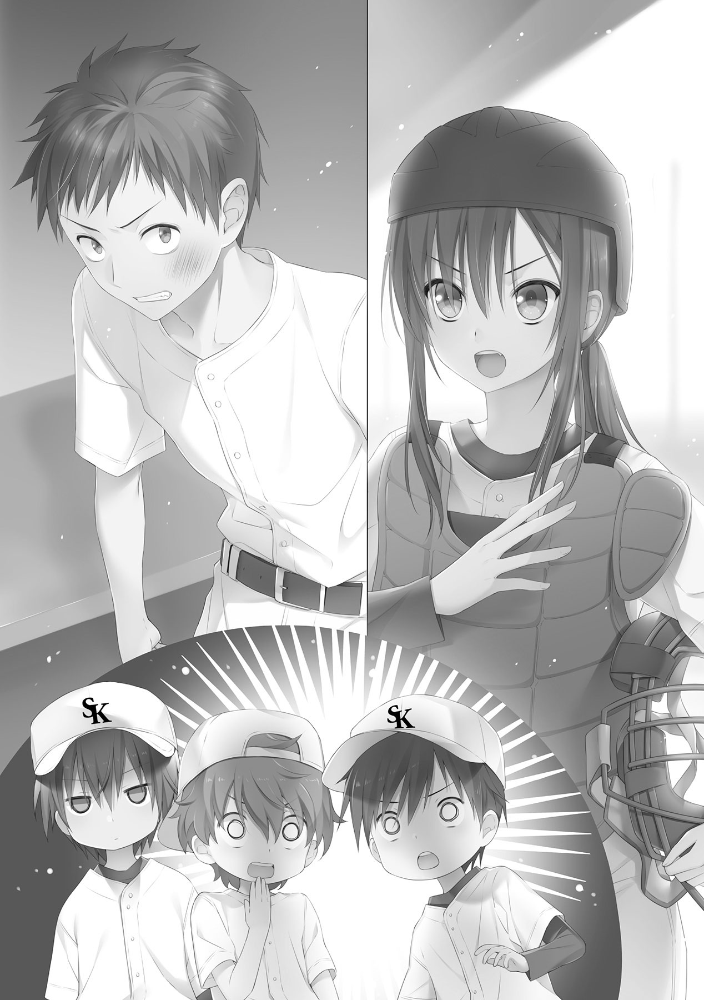
穿った見方をすることなく、真正面に会話を繰り広げているのは。
そんな場違いなことを考えながら、敬一はただ静かに、二人のやりとりを見守っていた。
「何をそんなに焦ってるの？ 自慢のバッティングで結果を出せなかったのが、そんなに不安なの？」
次第に的を射てきた沙月の指摘に、阿瀬はたまらずに声を張り上げる。
「......っ！ ああ、不安だよ！ 悪いか！ 俺からバッティングを取り上げたら、何にも残らない！ それは梶原、お前が一番知ってるだろ！」
吐き捨てるような阿瀬の発言。
とたん、沙月はぽかんと間の抜けた表情を作り、目をぱちくりさせながら、言う。
「知らないわよそんなこと。そうだったの？」
「そうだったの......って」
阿瀬は予想外の返答に唖然としていた。
「阿瀬くん。野球って、バッティングだけのスポーツ？」
「......そんなわけねえだろ」
「ええ、そんなわけねえわよ」
沙月は、不敵に笑いながらしっかと頷く。
「バッティングだけが野球じゃない。打ちたいだけならバッティングセンターに行ってきなさいって話よ。阿瀬くん、あなた、バッティングが好きだから野球をやってるってわけじゃないでしょ？ 野球が好きでその中でバッティングが得意ってだけでしょ？」
「当たり前だ！」
「だったら、野球、やればいいじゃない。チームプレイこそ野球の身上なのよ？ チームメイトの調子が悪かったら、それを補うように自分たちが頑張って、逆のときはチームメイトを頼って、チーム一丸となって勝利を目指す。いい、阿瀬くん、一度しか言わないからよっく聞いておきなさい」
沙月は言葉を区切り、すうと息を吸い込んで、ゆっくりと吐く。
きっ、と真正面から阿瀬を見据えて、そして言った。
「もっと、私たちを頼れ」
阿瀬は、何も言わなかった。ただ、ぎゅっと強く拳を握り締めただけだった。それが了解の意なのか、否定の意なのか、敬一にはわからない。
だが、沙月にはそれがわかっているようだった。
これ以上の問答はない、とばかりに、パンパンとキャッチャーミットを叩く。
「さ、タイムおしまい。定位置に戻った戻った。ああ、ファースト、セカンド、さっきも言ったように、守備、気をつけてね」
セカンドは軽く手をあげて応えたが、ファーストの阿瀬は聞いているんだか聞いていないんだかわからないまま、ゆっくりと定位置へ戻っていく。
「いい傾向ね」
「どこがだよ」
口元に笑みを浮かべて呟いた沙月に、敬一は思わず突っ込んだ。敬一には、新たな確執が生まれたようにしか見えない。
「阿瀬くんが、自分のプレイに責任感を持つようになってきてる。このままじゃダメだと、自覚し始めてるのよ」
沙月は、小声ながら嬉しそうに言った。
突っ込んだとはいえ、これには敬一も頷かざるをえなかった。沙月の言う通り、先日までの阿瀬は、責任など微塵も感じてなく、結果だけを見ていた。特に、自分の打撃の、だ。
試合中や終了後の振る舞いを見ていればよくわかる。パスボールやエラーをしても知らんぷり、好きなバッティングを堪能し、ついでに勝てればもうけもの、みたいなスタンスだ。だからこそ、相手チームの研究やバッターの癖などを覚えようとせず、適当にリードしてるだけ。自分のやりたいことばかりをやってきたと言っても過言ではないのかもしれない。
そんな阿瀬が、壁にぶち当たったのだ。一つが梶原沙月であり、もう一つは佐々木和樹。ピッチャーの投げたボールを受け取るだけだと思っていたポジションから追い出され、来た球に対応して打っているだけだったバッティングは、むなしく空を切った。そして、とどめとばかりのエラー。今まで目をそらしていた己の不甲斐なさを痛感させられ、なりふり構っていられなくなったのだ。このままでは置いていかれてしまう、と。そう思ったからこその、激昂。
エラーをしたその時、阿瀬が感じた居心地の悪さ、抱いた焦燥こそ、今まで阿瀬が持ちえていなかった『責任感』なのだろう。
「これ、全部お前の計算通りだったりするのか？」
敬一は恐る恐るといったかたちで沙月に聞いてみた。
案の定、沙月はにぱっと笑って。
「私はただのキャッチャー、神様じゃないわ」
どう思っていようが、適当に否定してくるのだ。
そして敬一は、その笑顔に追及を忘れてしまうのだ。
「セットポジション、大丈夫よね」
「......そりゃあ、昨日あんだけ練習したからな」
「よし、んじゃ力まず打たせて取っていきましょう」
沙月は乱暴にキャッチャーマスクをかぶり、ホームベースへと戻っていった。
守備位置へと戻るその短い間にも、阿瀬は沙月に言われたことを心の中で反芻していた。反芻するたびに、拳を握る力が増し、めり、と音を立てた。
まったく、言い返せなかった。
それはつまり、沙月の言葉に納得してしまったからだろう。
感じたことのない不安だった。今まではパスボールなどをして点を取られても笑っていられたのに、とてもそんな気にはなれなかった。
こみあがってくるのは、えもしれぬ喪失感。
なんだ、この感覚は。
この感覚は、なんだ。
「ヘイ、ファースト君」
ファーストへと戻ってきた阿瀬に、ランナーの佐々木が気さくに話しかけた。
阿瀬は少しだけ顔をあげてそちらを見たが、特に応答することもなく、再び俯く。
「なんだよ、つれねぇなぁ。まだフォーク投げなかったことを根に持ってるのか？」
挑発的に佐々木は笑うが、阿瀬はぴくりとも反応しない。反論を期待していた佐々木は、小さく落胆し、肩をすくめた。
「だんまりか。つまんねぇなぁ。......ああ、そうそう、ずいぶんと強くひっぱたかれてたみたいだけど、大丈夫かい？」
にやにやといやな笑みを浮かべ、佐々木は続ける。
「すっげえ鳴り響いてたぜ。ぱぁん、ってな。あー、やだやだ、エラー一つでひっぱたかれるチームなんて、俺は嫌だね」
同情したようなその声。阿瀬は何故だか、いらだった。
「ナックルなんて難儀な球投げるピッチャーがいるんなら、誰がキャッチャーやっても大差ないだろ。俺のフォーク同様、捕れりゃいいんだよ、捕れりゃあ」
佐々木は、小馬鹿にしたような口調で、言った。
佐々木の言葉を聞けば聞くほど湧いてくる、このいらだちは、なんだろうか。
「そもそも、なんでキャッチャーが女なんだよ」
その言葉に、阿瀬がぴくりと反応した。
「性別は関係ねえよ」
「なに？」
ちょうどプレイがかかり、腰を落とす阿瀬。佐々木に目を向けずに、口だけ動かす。
「お前、何もわかってねえな。キャッチャーは打ってればいいってわけじゃない。野球は守備から、だ」
どこかで聞いたような台詞が、自然にすらすらっと出ていた。
それきり、ランナーの佐々木には目もくれずに、投球の行方を集中して見守る。
敬一がセットポジションから投球に入ったのを目の端に捉え、さらに深く腰を落とす。
このままでいられるか。
次は捕る。捕ってみせる。
その覚悟に応えるように、キィン、と痛烈な金属音が聞こえてきた。
（甘い！）
沙月がそう思ったときには、すでに打者のバットが球を捉えていた。
決して力んでいたわけじゃない。練習したとはいえ、慣れないセットポジションからの投球がたたったのだ。甘い変化を、翠央北の五番は逃さなかった。強く振りぬかれたバットは外角に沈む球を捉え、強引に引っ張っていく。
痛烈な打球が、一塁線にそって飛んでいく。フェアグラウンドで一度バウンドし、線上を這うように球が突き進む。
沙月はマスクを乱暴に弾きとばして、叫ぶ。
「ライト！ 回りこんで！」
「俺が止める！」
その叫びをかき消すような、さらに大きな声。秒を待たずに肉薄する打球に向かって、阿瀬が飛び込んでいった。痛烈に迫る打球に物怖じせずに、横っ飛びで掴みかかる。
どぐっ、という嫌な音が、沙月にまで届いた。阿瀬の腹に当たり威力を失った白球は、その場にてんてんと転がる。
阿瀬は顔を痛みに歪ませながらも、転がる球を掴みとる。
「ピッチ、カバー！」
沙月は叫びながら、自分もファーストのカバーへと向かう。敬一は慌てて一塁へと走りだした。
痛みを感じさせない俊敏な動作で立ち上がった阿瀬が、セカンドに向けて送球する。
「石井ッ！」
「あいよっ！」
あらかじめセカンドに入っていた石井が、軽快な動作で送球を受け取った。スライディングを避けるように、ジャンピングスローでファーストへと投げ返す。
無人のファーストへと放られた球を、駆け込んできた敬一が掴みとり、ベースを駆け抜けた。一瞬遅れて、交差するようにバッターランナーが駆け抜けていった。
「アウト！」
審判の手が上がったのを確認して、阿瀬はガッツポーズを作った。
３―６―１のゲッツー。タイミング的にはギリギリだった。上手く全員の呼吸があったからこそのプレイだ。
阿瀬はほっとしたような表情を浮かべ、そのまま腹を抑えてうずくまった。安心したことによって、痛みを思い出したのだろう。
「新、大丈夫か？」
敬一が心配して近づいていく。阿瀬は軽く手をあげてそれに応えた。
「あー、痛ってえ......デッドボールの比じゃねえな、くそ」
ぐちぐち文句を言いながらも、すぐに阿瀬は立ち上がった。痛そうに腹をさすっているものの、大事はないようだ。
ファーストのカバーに来ていた沙月は、そのまま阿瀬に近づく。
沙月の接近に気付いた阿瀬が、くるりと振り返り視線を上げる。
不敵な笑みと、不遜な笑みが交錯する。
先に口を開いたのは、阿瀬だった。
「何か文句でも？」
「強いて言うなら、キャッチしてくれたほうが安心できるわね。あと、かけ声はポジションで」
「......へいへい、姫の要求は高いですね、っと」
むくれたように小さく肩をすくめ、沙月に背を向ける阿瀬。その肩を、沙月はぽんと叩いた。
「ナイスファースト」
不遜な笑みが、ふいに崩れた。阿瀬は目を見開き、不敵に笑う沙月を凝視する。
沙月はそれ以上は何も言わず、くるりと踵を返す。右手を掲げ、人差し指と小指を突き出し「ツーダンツーダン！」と鼓舞しながら守備位置へと戻っていった。
阿瀬もまた、気付かないうちに手を振り上げていた。声のあらん限りで同じように叫ぶ。
「ツーダンツーダン！ あと１つ！」
阿瀬はぐるりとグラウンドを見渡すように回転する。内野も外野も、同じように手を上げ声を出していた。それがまた、気持ちいい。
バッティングが大好きなのは、変わらない。
でも、まあ、守備もなかなか面白いじゃないか。
癪と思いつつも、素直に自分の心に生まれてきた喜びに、身をゆだねた。
「しまっていくぞ！」
気合を入れて、守備につく。腹に残っている痛みは、すでに頭の中から吹っ飛んでいた。
状況は確実に変化していた。スコアだけを見るならば、翠央北シニアが押しているというのは自明だった。三回までパーフェクトに抑えられている白倉柏シニアに対し、翠央北は三回にも単打二本を固め打ち、チャンスを作っていた。センター司城の好守などもあり、得点には結びつかなかったが、はたからみれば翠央北シニアの一方的な試合。そう判断されてもしょうがない展開だった。
だが、試合を行なっている選手。特に白倉柏シニアのメンバーから見た場合は、そうではなかった。
「もうそろそろ、ストレートが打ちごろになるわ」
四回表、白倉柏シニア、一番の石井からの好打順。ひるがえっていえば、ここで打ち崩すきっかけをつかまないと、なし崩し的にパーフェクトされかねない。直前の守備でファインプレイを連発し、攻撃への流れを作り出しただけになんとかしたい。
そう、皆が思っているところに、沙月の分析がうまく重なった。渡りに船とばかりに、皆の意識が沙月の言葉に集中する。
守備を終えたばかりの沙月は、まだプロテクターをつけたまま円陣に加わっていた。額の汗を熱そうに拭いながら、続ける。
「投球練習のときのキャッチ音、どんどん軽くなっていってるの。それはつまり、佐々木くんの球に威力がなくなってきてる証拠」
そのとき、タイミングを合わせるように、ぱぁんという投球音が皆の耳に届いた。敬一がちらりとマウンドのほうを見ると、佐々木はふうと息を吐きながら帽子を取り、汗を拭っていた。キャッチャーと会話をかわし、ときに笑顔を浮かべるその姿から、まだ余力があることがわかる。
「体力的にはまだ余裕そうなんだが」
敬一は円陣に頭をうずめ、耳打ちするように小さな声で言った。
「体力的には、ね」
沙月は頷き、意味深に呟く。
「......リュウと同じか」
その意図をいち早く察したのは阿瀬だった。円陣中もぼうっとしている司城を見やって、そして続ける。
「肩のスタミナがないから、握力が落ち球がうわずる。ついでに威力も落ちてくるってことだろ？」
「そういうこと。付け加えるなら、フォーク投げてるからそれだけ握力落ちるのも早い。初回は唸りを上げる剛球だったのが、さっきの回には私でも引っ張れるほどの威力になってた。ああ見えて、病み上がりでけっこう無理してるみたいね」
「......で、どうすればいい？」
「え？」
マウンドの佐々木のほうに視線を送っていた沙月は、阿瀬の思わぬ言葉に素っ頓狂な声を上げた。あわてて視線を戻し、阿瀬を真正面に捉える。
阿瀬は気恥ずかしそうに帽子を取り、頭をぼりぼりとかきながら言った。
「今日の守備練習だって、あらかじめ強いゴロを打たれると予想してたから、ああいう風にしたんだろう？ 悔しいが、お前の判断力はホンモノだ。だから聞いてるんだよ。あいつを打ち砕くには、どうしたらいい？」
これには、敬一や沙月だけでなく、円陣を組んでいたチームメイト全員が驚いているようだった。
沙月は平静を装うように、こほんと咳払いをして口を開いた。
「みんな、フォークってどうやって投げるか知ってる？」
「姫、流石にそれは失礼っしょ。ナックルはわからなくても、フォークの投げ方ぐらいは誰だって知ってるぜ？」
そういって石井は、どこからともなく取り出した硬球を、人差し指と中指の間に挟みこむ。
へえ、フォークってこうやって握るのか、と敬一はその握りをまじまじと見つめる。そんな、目を輝かせる敬一をいぶかしんだ石井が、声をかけてきた。
「おい、敬一。お前まさか知らなかったとか言わねーよな？」
「......悪いか？」
「......お前、マジでピッチャーなのかよ？」
「二日前まではバリバリのショートだよ」
呆れかえる石井に、敬一は睨みをきかせた。
もし、ストレートの握りを知らなかったことが石井にバレたら、烈火のごとく馬鹿にされるだろう。考えるだけでぞっとしないので、アイコンタクトで沙月を封じにかかる。
「しょうがないわよ、ストレートも知らなかったんだから」
だが、振り向いたその瞬間にバラされた。
思わず絶句する石井。もし試合中でなければ、次の瞬間には笑い声が聞こえてきそうだった。
敬一は恨めしげに沙月を睨みつけるが、沙月はそんなの素知らぬ顔で話を続ける。
「話を戻すけど、フォークは今石井くんが示してくれたように、指で挟むボール。そうやって回転数を少なくすると、空気抵抗が大きくなって、落ちるようになるのよ。ただ、このボールにも弱点がふたつある」
沙月はぴっと人差し指をあげる。
「ひとつ、コントロールがつきにくい」
続いて、中指。ちょうどピースの形を作り上げ、続ける。
「ふたつ、すっぽぬけやすい。握力が落ちてくる終盤なんかは、特にね。すっぽぬけたフォークって、打ちごろの棒球なのよ」
沙月はそう言うと、ぎゅっと手を握り、皆の目の前でぶんと振った。
「佐々木くんのフォークは、落差もある分スピード差もある。遅いくせに落ちない球が来たら、それがすっぽぬけよ。ストレートに食らいついていけば、空振りをとるためにフォークを多投してくるわ。多く投げるってことは、それだけすっぽぬけの可能性も上がるってこと」
敬一は頷いて、相槌をうつ。
「つまり狙いは、すっぽぬけたフォーク、か」
「長打を狙うならね。基本はストレートを単打狙いで、追い込まれる前に打っていきましょう。間違っても落差のあるフォークを狙わないように。流石にあれは厳しいわ」
皆が頷いたのを確認して、沙月は拳を円陣の中心に置いた。敬一がその上に手を乗せたのを皮切りに、皆が続き、最後に阿瀬がぽんと気恥ずかしそうに手を乗せたところで、沙月が声を張り上げる。
「みんな、この回で決めるつもりでいくわよ！」
「おう！」
声と共に円陣はばらけ、先頭打者の石井が意気揚々と打席に向かう。
沙月はそこでようやく一仕事終えたように大きく息をはき、付けっぱなしだったプロテクターを外し始めた。
敬一は静かに歩み寄り、声をかける。
「何か手伝うか？」
「ん、ああ、大丈夫よ。多分私に打席は回ってこないだろうから、レガースはつけっぱなしでいいし。それより本摩くん、水分補給ちゃんとしておいてよ。ピッチャーって相当汗かくんだからね」
言われ、敬一は思い出したように帽子を取り、ユニフォームの袖で額を拭ってみた。べっとりと服がひっつくほどの汗に、思わず驚きの声が漏れる。ショートを守っていたときとは、明らかに質の違う汗のかき方だった。
沙月はよっこいしょとプロテクターを脱いで、もう一度ふうと息を吐いた。
「水分がなくなるとスタミナも一気に切れるから、補給はこまめにね。あと、汗もしっかり拭いておかないと、けっこう体力奪われるわよ。アンダーシャツを着替えたりとか、考えたほうがいいかもね」
「そういうことは最初に言ってくれ......。替えなんか持ってきてるわけないじゃんか」
妙にアンダーシャツが体にひっつくなと思ったら、すでに汗でぐっしょりだった。言われて気付いてしまったその肌触りの気持ち悪さに、敬一は身をよじる。
「じゃあ我慢我慢。ナックルボーラーは普通のピッチャーに比べて疲労は少ないんだし、大丈夫よ。本摩くんの場合は、ナックルボーラーって言っていいのか微妙だけど」
「まあ、確かにあんまり疲れてはいないけどな」
敬一はぐっぐっと二、三度手を握ったり開いたりしてみる。司城のように握力が下がった感じはまったくない。続いて肩をぐるぐると回してみたが、こちらにも違和感はない。汗の量には驚いたが、体はいたって正常だ。
「強打の翠央北をみんなの好守備があったとはいえ、三回までゼロに抑えたんだから、自信持っていいわよ。この分なら、抑えるのはそう難しい話じゃないわ。そうなると、あとは......」
キィン、と軽い音が響いた。敬一と沙月がグラウンドに目をうつすと、石井が打ち上げて天を仰いでいた。やぶれかぶれに一塁へと走っていくが、打球はレフトに余裕をもって処理されてしまった。
「打つほうよね。さっきはああ言ったけど、正直そう簡単な話でもないと思うの。佐々木くんだって、握力の低下を承知の上でフォークを持ち球にしてるはずだし」
「宮城の魔神は伊達じゃない、ってことか」
「ほんと、本調子じゃないのが救いよ。石井くんが出塁できなかった以上、失投にあたりをつけて、阿瀬くんや司城くんの大きいのを期待するしかない、かな」
言ってる矢先に、二番が初球をひっかけてサードゴロ。円陣で気合を入れたはいいものの、もうツーアウトになってしまった。
敬一は、ネクストバッターズサークルで入念に素振りをしていた阿瀬に視線を移す。
阿瀬は今までにないほど真剣な面持ちで、バッターボックスへと歩いていった。
「なんでキャッチャーが女なんだよ」
その言葉に、いらだったのは何故だろう。自分も言ったことのある、当たり前の意見だというのに。
阿瀬はバッターボックスに向かう、その短い間に考え、答えを出していた。
チームメイトを、沙月をけなされたからだ。沙月がけなされるということは、自分がけなされることも同義。だからこそ、いらだち、思わず言葉が出たのだろう。
癪な話だ。あれだけ嫌っているのに、あれだけいなくなればいいと思っていたのに、自分の気付かぬ心のうちでは、すでに認めきっているのだから。
「ナイスファースト」
その言葉が、嬉しかったのは何故だろう。守備なんかに興味のなかった自分が、楽しいと思えたのは、何故だろう。
バッターボックスで、一球目のストレートを見逃しながら、阿瀬は答えを出した。
はじめて沙月に認められたような気がしたからだろう。
簡単な話だ。心のうちで認めていた沙月に認められた瞬間、はじめて沙月と共に、皆と共に野球をやっている気持ちになれたから、それがたまらなく嬉しかったのだ。
守備は一人でやるものではない。打撃は一人でやるものではない。
野球は、一人でやるものではない。
ストライク、という審判のコールが聞こえる。これでツーストライク。追い込まれた。
だが、阿瀬にはこれっぽっちも、打ち取られる予感なんてなかった。
先の打席のように、結果を求めてイライラするようなこともない。
自分が打てなくても、チームの誰かが打ってくれる。そう考えると、今までにないぐらいに気が楽になる。
ベンチから声がかかる。応援の声が、耳に届く。
今まではさっぱり聞こえていなかった。いや、耳を傾けてすらいなかった。
今は、耳に届く。低い声に混じって、場違いな高い声も、聞こえる。
「三振してもいいから、振っていきなさい！」
阿瀬は思わず、バッターボックスの中で苦笑した。
誰に向かっていっているのだろうか、あいつは。今この場でバッターボックスに立っているのが、誰だと思っているのだろうか。
「当たればホームランよ！」
ああ、その通りだ。
相手が誰だろうと関係はない。
その背にかかる期待に、応えるまでだ。
肩の力を抜き、自然体で構える。投球動作に入ったピッチャーの動きにあわせて、重心を移動させる。
今度こそ、フォークが来る。阿瀬の中に直感じみた予感があった。
ステップをするように、前に踏み込む。マウンド上の佐々木が、目を見開いたような気がした。だが、投球動作は止められない。
投じられた球が、一直線にホームベースへと向かってくる。回転の抑えられた球が、バットを避けようとお辞儀をするかのように落ちていく。
抜けていない、完璧なフォーク。その落差は到底捉えきれるものではなく、わかっていても打てないとまで言わしめた、魔神のフォーク。
だが、落ちる前はただの棒球だ。
阿瀬は迷いのない踏み込みから、落ちていこうとしているボールをすくい上げる。完全に捉えたという確信のもと、迷い恐れその他全てをともに、力いっぱい振り切った。
バットの真芯に吸い込まれていった白球は、重力を忘れたかのように上空に弾き返され。
放物線の軌跡と、軽快な金属音を残して。
ライトスタンドへと消えていった。
しん、とグラウンドが静まり返る。
投球動作の余韻で、佐々木の帽子がぱさりと地面に落ち。
阿瀬が豪快に放り投げたバットが、地をこする。
それでもグラウンドに音はなく。
沈黙を突き破るように、阿瀬は、ぐっと拳を天に突き上げた。
それを合図にして、地が割れんばかりの歓声が湧く。マウンド上の佐々木はがっくりとうなだれ、一塁塁審が腕をぐるんぐるんと回した。
阿瀬は歓声を背に受け、ゆっくりとダイヤモンドを一周する。ホームベースを踏み、ベンチに視線をやったところで、ちょうど沙月と顔があった。
沙月はまるで自分が打ったかのような、喜びを全面に押し出した笑みで、ハイタッチを求めてくる。
阿瀬は無言で、そのハイタッチに応えた。
ぱぁん、と手と手が触れあった音が、余韻の残るグラウンドに響き渡る。
一人で打ったときとは違う、皆で打った、皆に打たせてもらったという、感覚。
早くも阿瀬は、その感覚に病みつきになっていた。
白倉柏ベンチは、一気に沸きあがった。点数上はまだ１対０だけども、勢い的にはその比ではなかった。阿瀬が皆から手厚い祝福を受けているさなか、司城が静かにバッターボックスへと向かう。
敬一は興奮冷めやらぬといった表情で、司城に話しかける。
「リュウ、続けよ！ オレも続くから！」
「ん、任せろ」
至っていつも通りの司城の口調。続いて、沙月も声をかけてきた。
「司城くん、今がチャンスよ。落ちるフォーク以外は積極的に狙っていきましょう」
「ん、わかった」
またしてもいつも通りの様子で、淡々とバッターボックスに入っていく司城。沙月は首をかしげて、敬一に話を振った。
「司城くん、阿瀬くんばっか祝福されてて怒ってる？」
見当違いな沙月の見解に、敬一は小さく吹き出した。
「確かに、無愛想だからそう見えるよな。でも、あれはリュウが燃えている証拠だ」
さらに首をひねる沙月に、敬一は続ける。
「オレらの話もほとんど聞いてない。今、あいつ、すごく集中してるぞ。オレも準備しておかないとな」
敬一はそそくさとヘルメットを取りにいく。いまだホームランの余韻が冷めやらぬグラウンドでは、マウンド上の佐々木が何事もなかったように一球目を投じた。
審判の手が上がる、ストライク。
「あー、ど真ん中、もったいない！ 結構ショック受けてるから、今畳み掛けるときなのに！」
ヘルメットを手に戻ってきた敬一に、沙月が毒づいた。マウンド上の佐々木は平静を装って、帽子をとり額の汗を服でぬぐい、二球目を投じる。
司城はぴくりとも動かず、審判の腕が再び勢いよく上がる。
沙月は、今度は毒づくこともなく、静かに告げる。
「......キャッチャーが勝負を焦ってるわね」
「焦ってる？」
「佐々木くんの動揺を感じてるのよ。だから、傷が浅いうちに終わらせようと、焦ってる。三球勝負で決めに来るわ」
「しかも決め球は、フォーク」
敬一の相槌に、沙月は頷いた。唇を噛み締め、小さく呟く。
「司城くん、次の球は振っちゃダメよ。ボールからボールになるフォークで三振を狙ってくるはず......」
佐々木が三球目の投球動作に入る。ゆったりと足をあげて、同時に振り上げた腕を垂直に投げ下ろす。あわせて、司城もスイング動作に入った。
「だめ」
沙月が、思わず声を漏らす。
だが、司城は止まらない。迫るボールにタイミングを合わせて、バットを繰り出す。
遠目に見てもわかるぐらい、はっきりとした落差のフォーク。ホームベースの前ですとんとその軌道を落とし。
キィーンという軽快な金属音を、残した。
マウンド上の佐々木は、信じられないという表情で球の行方を凝視していた。
ベンチの皆は、沸き立ちながらボールの行方を追いかける。
敬一は間の抜けた顔でぽかんと口を開いたまま、レフトスタンドのほうを見やり。
沙月は驚きを微塵も隠さずに、スタンドへと消えていった白球の軌跡を目でたどった。
バッターボックスの司城は、バットをゆっくりと地面に置いて、一塁へと駆け出す。それで気付いたように、審判が腕をぐるぐると回し始めた。
今一度、歓声に沸く白倉柏ベンチ。もはやお祭りのような騒ぎっぷりだった。
ベンチへと帰ってきた司城に、沙月は慌てて声をかけた。
「し、司城くん、どうやって打ったの!? 今の、フォークよ！ しかも完全に変化していた完璧な！」
司城は、首をかしげながら、いつもと変わらぬぼけっとした様子でそれに答える。
「フォークだったのか？」
「え？」
意外そうな司城の表情に、沙月がさらに意外そうな表情を作る。
しかし司城は、さらにとんでもないことをさらっと言ってのけた。
「いや、ストレートだと思った」
「............」
沙月は我が耳を疑い、絶句し、呆然とした。
司城はそれだけ言うと、ベンチへと戻っていく。手荒い歓迎を受けている司城を見ながら、敬一はため息をついた。
いまだ唖然としている沙月は、呆れたようにぽつりと呟く。
「......司城くんには、なにも言わないようにする」
「そのほうがいい」
敬一は、苦笑を浮かべながら頷く。
もみくちゃにされる阿瀬と司城を見ながら、沙月は静かにレガースを外し始めた。九番の自分まで回ってくる、そんな予感があった。
佐々木和樹は、人生初の体験に、混乱していた。
ホームランを打たれたことはある。別にその程度で驚いたりはしない。フォークのすっぽぬけを痛打されることは何度も味わってきた。曲がりっぱなを叩かれたのには驚いたが、そういうこともあるのだと割り切れる。
だが、今のは何だ。
完璧に、完全に、最高のタイミングで投げられた、最強のフォークだったはずだ。
何であれに当てられるんだ？
何であれを打てるんだ？
何であれを、ホームランにされるんだ？
佐々木の頭の中は、混乱に支配されていた。配球が間違っていたのか、コースが間違っていたのか、勝負を焦りすぎたのか、相手の力がすごいのか、その判断すらつかないほどに、混乱していた。
なかば夢見心地で、次のバッターに相対する。だが、頭は己のフォークのことで一杯だった。
俺のフォークが、打たれるはずがない。
崩れかけのプライドを必死に支える意地。その意地が、裏目に出た。
動揺した心は繊細なコントロールを奪い、握力を失わせた。指と指の間からすっと抜けていく感覚。仮にも五番の敬一が、その失投を見逃すはずもない。
まずい、と佐々木が思った次の瞬間には、白球は再び、ライトスタンドへと消えていった。
四回表、三番阿瀬新助、四番司城龍宏、五番本摩敬一、三者連続ホームラン。自慢のフォークを打ち砕かれ、完全に意気消沈した佐々木がベンチに下がったことで、大勢は決した。
弱々しく打ちあがったファウルフライを、阿瀬がぎこちないながらも丁寧にキャッチする。審判が最後のアウトを告げて、試合終了。
白倉柏シニア対翠央北シニアの試合は、佐々木擁する翠央北シニア優勢の下馬評を完全にひっくり返し、７対０の五回コールド、白倉柏シニアの完全勝利で幕を閉じた。
そして、もう一つの勝負も、終わりを告げようとしていた。
「梶原！」
試合後、荷物を片付けている沙月に向かって、阿瀬が駆け寄り、声をかけてきた。
沙月は荷物の整理を中断して立ち上がり、阿瀬に向き直る。
「なに？」
「あ、えっと、だな......」
阿瀬は帽子をとりがしがしと頭をかいて、しばらく目を泳がせて逡巡していたが、やがて決意したように「あー」と間延びした声をあげて、真正面から沙月を見据えた。
照れくさそうに頬をかきながら、言う。
「今日は、その、いろいろと迷惑をかけて、すまなかった......あと、礼を言いたく......ってな」
大柄な体に似合わぬ消え入りそうな声で阿瀬は喋る。
「え、何？」
よく聞き取れなかった沙月は、阿瀬の気持ちなど知る由もなく、聞き返す。
「だから、ありがとうって......」
「だから、聞こえないって。今更遠慮せずにはっきり言ってよ」
いらだたしげに足踏みする沙月。阿瀬はかっとなったように顔を紅潮させ、なかば叫び気味に、言った。
「だから、ありがとうって言ってるんだよ！」
言って刹那、皆に聞こえるほどの大声で叫んでしまったことに気付いた阿瀬は、顔を真っ赤にして俯く。
「そんだけだっ！」
きょとんとしている沙月に、阿瀬はぎこちない動作で背を向けて、右手と右脚を同時に前に出す。沙月はくすりと笑って、その背に声をかけた。
「こちらこそ、よ。ナイスバッティングだったわ、阿瀬くん」
「......ふん」
阿瀬は立ち止まり、ちらりと覗き見るように沙月の様子を伺う。
沙月はそんな阿瀬の様子に吹き出しそうになりながらも、つとめて冷静を装った。腕を組み、いつものように不敵な笑みを浮かべる。
「でも、守備はまだまだね。見てて怖いもの。感謝してくれてるなら、明日からはもっとしっかり守備練習やってよ」
「......うるせえ！」
阿瀬はぷいと沙月から視線を外して、荒い足取りでどっしどっしと去っていった。笑いを堪えきれなくなった沙月は、くくくとくぐもった笑い声を漏らす。
だが、それも一瞬。すぐに表情をきりっとしたものに戻し、再び荷物の片づけを始めた。
ふいに、ユニフォームのポケットからぽろりと手帳が落ちた。沙月はそれを優しく拾い上げて、ついた砂をはたきおとす。落下した拍子で自然と開かれたページに目を落とし、ぽつりと呟いた。
「これで本摩くんは数えで完封。阿瀬くんと司城くんは期待以上の打撃力。守備力も石井くんを筆頭に問題なし。このチームなら、きっと......」
沙月は、眼差しに決意を秘め、『黒岡早良・データ』と書かれた手帳のページを、ぱたんと閉じた。
打ち取った当たりがふらふらとライトの前に落下するのを見て、敬一は小さく肩を落とした。ツーアウトというアウトカウントが災いし、ファーストランナーは打球の行方を気にせず走っていたので、中継が帰ってきたときには、すでに三塁に到達していた。
中継をしたセカンドから労いの言葉をかけられつつ、ボールを受け取る。帽子を取り、額をぬぐうと、毎度お馴染みとばかりにべっとりと汗がユニフォームに付着した。
全身から吹き出るような汗は、ぬぐってもぬぐっても治まることはなく、首筋からぽたぽたと滴り落ちる。何度体験しても、これには慣れない。
帽子をかぶりなおし、ほうとため息をつく。夏独特の湿った熱風が吹きぬけたが、火照った体にはそれすら涼しかった。
「流石に、準決勝ともなると簡単にはいかないな......」
敬一は、風に乗せてぽつりと呟いた。
沙月の予想通り、二回戦の翠央北を打ち破ってからは、とんとん拍子で進んでいった。三回戦の戸越塚も、四回戦の紫追沢も、敬一・司城の左右両ピッチャーと沙月のリードの前には無力に等しかった。佐々木を打ち砕いた自信から、打撃のほうも調子づき、快進撃とも呼べる白倉柏シニアの勢いは止まらなかった。
今の状況だって、以前の白倉柏シニアでは考えられないものだ。舞台は準決勝、相手は代永青藍シニア、得点は３対１、敬一たち白倉柏シニアの２点リード。七回表ツーアウト一、三塁、いわゆるひとつの「あとひとり」である。これに勝てば決勝戦。もちろんそんな大舞台に行くのは、初めてだ。
四回に司城からマウンドを引き継いだ敬一は、剛球派の後の軟球派に戸惑っている相手の上に乗っかって、ここまで０点に抑えていた。不運なヒットを二つ重ねられて、ピンチを迎えてはいるが、敬一の頭の中には、これっぽっちも負けるなんて考えはない。
いつものように、ぎゅっとボールを鷲掴みにし、沙月のサインを覗き見る。といっても、敬一が投げられるのはナチュラルのナックルだけなので球種のサインはない、沙月の構えたところに投げ込むだけである。
だからこそ、敬一は我が目を疑った。沙月が、サインを出していたのだ。人差し指を真下に突き出している。何度かまばたきをしてみたが、こちらが頷くまで、引っ込める様子はない。
思わず、慣れないけん制の真似をして、間合いを外す。違和を感じ取ったか、沙月が審判にタイムを申告して、ピッチャーマウンドへと歩み寄ってきた。すこし足取りが荒いような気がする。
沙月は乱暴にキャッチャーマスクを取って、敬一に厳しい視線を向ける。
「今のけん制、ボークすれすれよ！ 何やってるの」
予想はしていたが、いきなり怒られた。予想通りの怒号に、敬一はうんざりしたような表情を作り、天を仰ぐ。
ここ最近、とくに怒られることが多くなったのは、気のせいではあるまい。辛辣な言葉も容赦なく飛んでくるようになった。それだけ沙月がこちらに心を許している、と考えると嬉しくもあるが、やはり怒られるのは嫌なものだ。
猛る沙月をどうどうと両手でなだめる敬一。沙月はまだ言い足りなそうな顔を作ったが、とりあえずは落ち着いてくれた。
「それで、ボークすれすれな真似をしてまで、どうしたの？」
「それはどっちかというとオレの台詞なんだけどね」
敬一は口元にグローブをあてて話し始める。これも怒られて身につけた技能だ。
「あのサイン、なんだよ。オレがナックルしか投げられないの、お前が一番知ってるだろ？」
沙月はミット越しにもわかるほど、おおげさにため息をついた。
「せめてストレートぐらいは投げれるようになりたい、って投げ方を教わりに来たのは誰？」
「......た、確かに教わりはしたけど、あれまだ未完成もいいところだぞ。コントロールだっていまいちだし、実戦で投げるレベルじゃないって言ったのはお前だろ」
「投げなくても、速球もあるってことを知らしめておきたいの。......阿瀬くんのちょい後ろあたり、こっそり見てみなさい」
言われ、敬一は盗み見るようにちらりと阿瀬のほうを見やった。腕を組んであくびを噛み殺している阿瀬が見えた。
「もっと奥」
まるで心を読んでいるかのように、沙月が呟く。敬一がよくよく目をこらすと、見たことのないユニフォームを着た少年が、けだるそうに頭の後ろで手を組んで、じっと試合を見つめていた。隣には同じユニフォームを着た大人の男が立っている。
どこぞの選手と監督だろうか。距離的に遠いので、ユニフォームに刻まれたチーム名までは読み取れなかった。視線を戻すと、沙月は厳しい表情で呟く。
「......あのユニフォームは黒岡早良シニア。順当に決勝まで勝ち進んできたみたいね。偵察ってやつよ」
敬一はありありと驚きの表情を浮かべた。黒岡早良という名前にもだが、その選手がこの場にいるということが、一番の驚きだった。
「早く終わったって......ここ剣山だぞ？ 向こうの試合場から来るとなると、車でも30分ぐらいかかる」
「それだけ早く決着したってことでしょう。準決勝コールドとは、お高く留まってくれるわ」
黒岡早良の力を考えれば、おかしいことじゃない、と沙月は続ける。
それにしたって早い。敬一たちだって、そうのんびり試合をしていたわけではない。むしろビッグイニングがない分展開は早いほうだ。それなのに、試合終了前に偵察に来れるということは、どれだけ早く終わらせてしまったのだろうか。
それだけ、黒岡早良の力が圧倒的ということなのだろうか。
考え込む敬一の頭を、沙月がミットで軽く叩く。
「向こうは向こう、こっちはこっち。まずは目の前の試合よ」
「あ、ああ。でも、だからこそストレートって選択肢はまずくないか」
「打たれてもいいし外れてもいいの、『ストレートもある』ってことを知らしめれば。万一、同点にされたとしても、次の回は一番からなんだし、勝ちは揺るがないわ」
「そりゃそうだろうけど......」
なおも難色を示す敬一に、沙月はそれ以上は何も言わず、ただ不敵に笑いかけた。
敬一は居心地悪そうに視線をそらし、やがて諦めたように呟く。
「わかったよ、投げてみる。そのかわり、どんな暴投になっても怒るんじゃないぞ」
沙月は不敵な笑みは崩さずに、瞳を輝かせる。
「大丈夫よ、信じてるから」
かるくウィンクして、沙月はキャッチャーミットをかぶり、戻っていった。
しばし呆けていた敬一は、審判の「プレイ！」という声で我に返る。
「プレッシャーのかけかたが上手いことで......」
自嘲気味に呟き、サインを覗きみる。垂直に地面に向けられた人差し指に、敬一は頷く。
セットポジションをとり、息を一つ吐く。グローブの中で再度球を握りなおし、ランナーの動きをけん制するように目を一塁側に向ける。
慣れたとはいえ、まだ少しぎこちなく珍妙なフォームから、沙月の構えたど真ん中に向けて直球を放つ。振りぬかれた腕から放たれたボールは、空気を切り裂くように突き進む。
今までと違う球筋に驚いた打者は、慌ててバットを振り、要求よりも高めに浮いた球を下からこすって打ち上げた。したたかに地面にバットを投げつけるバッターを尻目に、ショートの石井が大きく手を振って、小飛球をキャッチする。
アウトと共に、一塁側からは歓声が、三塁側からは悲鳴が上がった。
勝利に沸き立つナインが、マウンドに駆け寄ってくる。皆に労われ、もみくちゃにされた敬一の目の端に、ふと、先ほどの黒岡早良の選手がうつった。
その選手は、敬一の気のせいでなければ、笑っていたような気がした。
どこかで見たような、不敵な笑みを、浮かべていたような気がした。
「梶原さーん、梶原沙月さーん！」
試合後、ベンチで荷物の整理をしていた沙月に、声がかかった。敬一が声に振り向くと、先ほどの黒岡早良の選手が大きく手を振っていた。
敬一の視線に気付いたか、選手は帽子を取って深く一礼してくる。敬一も慌てて会釈を返し、隣の沙月に話しかけた。
「梶原、呼んでるぞ」
沙月はひどく不機嫌そうに、ぽつりと呟く。
「わかってる。意図的に無視してる。気にしないで」
沙月はそれだけ告げて、再び黙々と荷物の整理を再開した。黒岡早良の選手は、なおも手をふり声をかけ続けてくる。
つとめて無視を決め込んでいた沙月だが、その声のしつこさについには根負けしたか、いらだたしそうに首を振り、勢いよく振り返った。
すぐさま目が合い、黒岡早良の選手はにこやかに笑って沙月を手招きする。対照的に沙月は厳しい面持ちで、ゆっくりとそちらへ歩み寄っていった。
沙月が向こうにたどり着き、なにやら会話を始めるまで、敬一はその背中をじっと見つめていた。じっと沙月の行方を目で追う敬一に、からかうように石井が話しかけてくる。
「けーいいっちくーん、彼方を見つめちゃって、どうしたのかなー？」
「......ちょ、石井、抱きつくな！ 暑苦しい！」
石井はにやにやと笑みを浮かべたまま、肩に手を回してきた。敬一は軽く拒否を示すが、沙月が気になってどうにも力が入らない。石井もそれがわかっているようで、絡むのを止めようとはしなかった。
「ひどいねぇ、これでも傷心を癒してあげようと体張ってあげたのに」
「誰が傷心だ、誰が」
「いしし、つよがんなくてもいいよ。んー、黒岡早良ってことは、明日の決勝、あいつら相手だよね。僕らも挨拶したほうがいいのかな？」
「......必要ないだろう。明日、嫌でも会う」
司城がぬっと、その体の大きさにそぐわない地味な挙動で敬一の隣に寄ってきた。石井はすこし驚いたように身をのけぞらせる。
「リュウ、登場はもっと派手にやってくれない？ 心臓によくねーから」
「驚かせてるつもりはないんだがな......」
小さく肩をすくめる司城。そこに、集団に目をひかれた阿瀬もふらふらと寄ってきた。
「お前等、何の話をしてるんだ？」
「おー、新ちゃん、あれ見てみ」
石井は敬一と肩を組んだまま、ひらひらと手を沙月のほうへ差し向ける。阿瀬はそちらを一度凝視し、小さく首をかしげた。
「おい、敬一、なんで梶原と黒岡早良の選手が話をしているんだ？」
「何でオレに聞くんだよ」
敬一が毒づくと、阿瀬は珍しくにやっと笑った。表情はうかがえないが、抱きついてきている石井もにやけているような気がする。敬一は視線で阿瀬を黙殺し、助けを求めるように司城を見やった。
助け舟というわけではなさそうだが、変わらぬぼけっとした表情で司城はきっぱりと言った。
「かつてのチームメイト、だからだろう」
司城の言葉を聞いて、阿瀬は「あぁ」と納得したような表情を浮かべる。
よもや、沙月がもともとは黒岡早良シニアにいたということを素で忘れていたとは言うまい。
――いや、でも、阿瀬ならありうる。
悲しい結論に敬一は大きくため息をついた。露骨な態度に阿瀬が顔をしかめたが、無視して沙月のほうに視線を向ける。
こちらに背を向けているので沙月の表情はうかがえない。だが、黒岡早良の選手の挙動などから、談笑しているのではないかと思う。
そんなことを考えた敬一の体は無意識のうちに少し強張った。
その微妙な変化を、石井は敏感に感じ取った。敬一の頭をぺしぺしと軽く叩き、まるで時代劇の悪代官のように意地悪く笑う。
「敬一くん、そんなに妬かなくてもいいではないか。姫はきちんと君のもとに帰ってくるんだからよ」
「だ、誰が妬くか！ ったく、石井、いい加減離れろっての！」
「そういや、いつの間にかストレートを覚えてたな？」
「新！」
からかってくる阿瀬を一喝し、身をよじって石井を振り払い、敬一は立ち上がった。再び、沙月のほうに視線をやって、気持ちを落ち着かせるように一つ息を吐く。
「......どうして、梶原は黒岡早良を出たんだろうな」
ぽつりと呟いた敬一の言葉に、その場にいた皆の視線が沙月に向いた。
黒岡早良の選手と話す沙月の表情はうかがえないが、敬一からは談笑しているように見えるのだ。そこに、ひどくギャップがあった。
「そりゃ、姫はレギュラーになりたかったからじゃないの？」
石井は「よっ」というかけ声とともに立ち上がり、頭をわしゃわしゃとかきむしりながら言う。
確かにそれもあるかもしれない。あれだけの技術力を持ちながら、実戦経験がないというのは、要するに自分の技術を試す機会が与えられなかったということだ。よっぽど歯がゆい思いをしたことだろう。
だが、それだけではないような気がする。敬一には確信じみた予感があった。
先ほど、黒岡早良の選手に声をかけられ、振り向いたときの沙月の表情。それだけの理由で、沙月があれだけ嫌悪感をあらわにした表情を見せるはずがない。
何か、他に理由があるんじゃないか。明確な理由が。
沙月が、黒岡早良を離れたくなるような、理由が。
「『出た』じゃなくて、『追い出された』のかもな」
ぽつりと、司城は言った。突拍子のないその意見に、皆の視線が集まるが、司城はまったく気にせずいつも通りのぬぼっとした様子で、続ける。
「梶原の性格上、レギュラーじゃなければ、レギュラーを奪い取ろうとする、と思う」
的確な司城の分析に、思わず敬一は唸った。石井も「なるほど」としきりに頷き、阿瀬は入ってきたばかりの沙月を思い出したか、不機嫌そうに顔を背けた。
女性というハンデをものともせず、圧倒的な努力で技術を身につけてきた沙月のことだ。たとえレギュラーをもらえずとも、その座を奪い取るために虎視眈々と努力を重ねることだろう。全国レベルのチームである黒岡早良シニアともなると、その負けず嫌いがもっと顕著に出て、レギュラーを取るまで意地でも続けそうな感がある。
「敬一、姫から何か聞いてないん？ いや、これはふざけじゃなくマジ話で」
考え込む敬一の後ろから、石井が声をかけてきた。声はいつになく通っていて、真面目さをうかがわせている。
敬一は振り返ることなく、答えた。
「何も。昔の話なんて、聞いたことも言われたこともない」
「そっか。とはいえ今から聞くと、まるで意識させてるようで姫にわりーしなぁ」
「......女だから、とかか」
阿瀬が、静かな口調で口を開く。とたん、敬一だけでなく皆が一気に押し黙った。
誰もが考え、そして引っ込める当たり前の思考だ。
元来、野球は男がやるものと思われていて、高校野球にいたっては正式な試合に女性が出場することはできない。大学などで女性のピッチャーなどが目立っていたりもしたが、それにしたって認知度は低く、『野球は男がするものだ』という固定観念を抱いている人は少なくないのだ。むしろ圧倒的多数だろう。
敬一たちは、監督から常々「そういう狭窄な考え方は野球をよりいっそう狭くしていくだけだ」と聞かされていたし、実際に沙月の力を認めたからこそ、違和を感じるが、世間一般で女性の野球選手に対する風当たりはあまりよくないのも事実。
だからこそ『女だから追い出された』という意見は、あまりにも的確で、反論のしようがなかった。まさか、と思いたいが、それを否定する材料もない。もちろん肯定する材料もないのだが、浮かんできた思考は決して沈もうとはしなかった。
敬一は黙りこくったまま、沙月を見やる。
いつもよりも、より一層小さく見えるその背中に、ひどく不安を覚えた。
「ひどいなぁ、あんなあからさまに無視しなくたっていいじゃないか、梶原沙月サン」
「......何の用、新田敦耶クン？」
沙月が近づくや否や、黒岡早良の選手――新田敦耶は声をひそめて愉しそうに呟いた。沙月は嫌悪感をあらわにした表情を変えずに、吐き捨てるように問いかける。
「そう邪険にしなくても何もしないよ、もう別のチームなんだし。それにね、こんな人目のある場所で僕はどうこうしたりしない」
大げさに両手をひろげる新田。眼鏡ごしの瞳が、周囲の人々に向けられる。
にこやかなその顔に、握り締めた拳を叩き込んでやりたいと思わずにはいられなかった。
新田敦耶。黒岡早良シニア、背番号２。
強打・堅守・俊足の三拍子そろった、沙月の知る限り、最高のキャッチャーだ。沙月自身、目標にしているときすらあったほどに。
――だが。
だが、人間としては、最悪だ。
沙月は、こみあがってくる怒りを必死に抑えながら、つとめて冷静に問うた。
「......何の用って聞いてるんだけど」
「とくに用があるわけじゃないよ。ただ、うちの監督がきみのところの監督に話があるらしくて行っちゃったから、昔のよしみで暇つぶしに付き合ってくれないかな」
「嫌だ、と言ったら？」
「あ、そう、と言うね。どうせ嫌でも明日会うことになるんだし」
新田は眼鏡の奥の瞳を細める。獲物に狙いを定めているようなその目が、沙月は特に嫌いだった。
「それにしても、まさか決勝で当たる相手が、君が移ったチームだとはね。因縁というか、腐れ縁というか、驚きだよ。おめでとう、と言ったほうがいいのかな？」
「心にもない言葉はいらないわ」
「こいつは手厳しい」
辛辣な沙月の言葉に、新田はやれやれと肩をすくめる。中指で眼鏡をぐいと押し上げ、沙月の背中越しに白倉柏シニアのメンバーにざっと視線を走らせる。
「二回戦の翠央北で負けると思っていたから、データが少なくて焦ったよ。いやはや、今日直に見ることができてよかった」
「直に見たと言っても、最終回だけでしょう？ 果たしてそれだけで満足なデータが集まったのかしらね」
「うちのチームの力を考えれば、十分さ」
そこでふと気付いたように、新田は大仰な動作で驚きを表現し、口元を小さくつり上げる。
「おいおいまさか、勝つつもりなのかい？ うちのチームの力は、君だってよく知っているだろう？」
「何が起こるがわからないのが野球よ」
「何が起こっても強い者が勝つのが野球だよ」
毅然とした沙月の態度にも、新田は笑顔を崩さずに告げる。
「野球だけじゃない、何でもそうだ。君は弱く、僕が強いからこそ、君は黒岡早良を去り、僕が残った」
「よく言う！」
沙月は思わず激昂した。だが、それでも新田は笑顔を崩さない。
ぎり、と歯噛みし、拳を強く握り締める。だが、ここで新田を殴ったところで何も変わらない、むしろそれを連盟に報告されれば自分が出場停止になりかねない。それがわかっているからこそ、新田は沙月の眼前でにやにやと笑っているのだ。
それこそが、沙月の知る新田敦耶。沙月が、黒岡早良を出なければならなくなった、理由そのもの。
一見、人当たりのよさそうな穏やかな笑顔で。
その裏に、どす黒い闇をちらつかせながら。
沙月は、怒りをなんとか諌めて、そっぽを向き、吐き捨てた。
「虫唾が走るわ、その笑顔」
「そうかい？ 自分では気に入ってるんだけどね。『笑う門には福来る』。実際、ウケもいいし、やめるつもりはないよ」
「......相変わらず、いい子のフリだけは得意なのね」
「その方が便利だろう。審判だって、贔屓してくれるしね」
新田がにこやかな笑顔を浮かべているからこそ、そうは見えないが、会話だけを聞けば一触即発の状況だ。沙月は瞑目し、落ち着きを取り戻そうと息を吐く。だが、なかなか心の昂りは収まろうとはしない。
そんな空気を打ち破るように、かつて聞きなれた訛声が新田を呼んだ。
沙月がちらりと声のしたほうを覗き見れば、黒岡早良の監督が遠くで新田を手招きしていた。新田は小さく手をあげてそれに応える。
帽子を取り、沙月に向かって丁寧に挨拶をする新田。沙月は挨拶を返すこともなく、それを憮然とした表情で見つめる。
まったく反応をみせない沙月に、新田は苦笑いを浮かべた。だがそれだけで何も言わず、背を向けゆっくりと歩き出す。
沙月がその背中に向けて何か雑言でもぶつけてやろうかと考えていると、新田は突然くるりと振り返り、先ほどまでとは色の違う笑みを浮かべて、告げた。
「梶原、勝負をしないとわからないんだったら、明日思う存分思い知らせてやるよ。お前は僕には勝てない、ってね」
冷たく、感情を凍りつかせたような声。告げたというよりも、突きつけたという形容こそ正しいとも思える、一方的な忠告。思わず沙月はたじろぎ、射抜くような新田の視線が外れるまで、微動だにできなかった。
新田はすぐに視線を外し、再び背を向け歩き出したが、沙月にとってはその『すぐ』すら悠久に感じられた。小さくなっていく背に向けて、吐き捨てるように呟く。
「......勝負すら、しなかったくせに」
袂を分かつように、沙月もくるりと背を向けた。歩きながら、ポケットの手帳を取り出し、黒岡早良のデータがびっしりと記載されたページに目を走らせる。
負ける訳にはいかない。
明日だけは、黒岡早良にだけは。
新田敦耶にだけは。
すっかり日が落ち、月のぼうっとした光が降り注ぐグラウンドに、ぱぁん、とミットを鳴らす音が一定のペースで鳴り響く。
いつの間にか試合後恒例となってしまった、沙月と敬一の特訓。グラウンド近くの街灯下、ほのかな明かりを頼りに、二人は黙々と投げ込みを行なっていた。
いつもならば、捕球のたびに声をかけてくる沙月だが、今日に限ってはそれはなかった。敬一がどれだけ気合を込めて投げ込んでも、何も言わずにボールを投げ返してくるだけだ。まるで、すべて上の空のように、淡々と。
敬一はグラブの中で球を鷲掴みにする。今はストレートの練習中だから、ナックルを投げればいつもの沙月ならばきっと憤慨してくるだろう。
だが、その期待は裏切られる。敬一が投げ込んだ球は、一段と軽い捕球音を響かせた後、何事もなく手元へと投げ返されてきた。
敬一は仕方なさそうに息を吐いて投球をやめ、ゆっくりと沙月に歩み寄る。沙月は、敬一が投球をやめたことに気付かず、しばしミットを構えたままで座り込んでいた。なかなか来ない球にようやく意識をそちらに向けて、そして敬一の接近に気付く。
明らかに驚いているのがマスク越しにもわかった。つまりそれだけ、こちらに意識を払っていなかったのだろう。敬一は、沙月の近くまで歩み寄ると、そのまま座り込む。
沙月は、マスクを外して憮然とした表情を敬一に向けた。
「本摩くん、休憩はまだ早いわよ。もっとちゃんとストレートをコントロールできるようにならないと......」
「球を受けるほうがそれだけ上の空じゃ、コントロールできてるのかどうかもわからないよ」
思わぬ指摘にカチンときたか、沙月は眉をつり上げて反論する。
「上の空って、失礼よ。どんな球でも私はちゃんと捕球したじゃない」
「ああ、最後のがナックルってのには気付かなかったみたいだけどな」
敬一の言葉に、沙月は目を見開いた。敬一は沙月を真正面に見据えて、口を開く。
「梶原、今日のお前、おかしいぞ。いや、あの黒岡早良の選手と話してから、だな。声をかけても反応は鈍いし、なにより表情に余裕がない」
そもそも、試合中に沙月が未完成のストレートを要求してきた時点で、敬一の中に違和感があった。石橋を叩いて渡るような丁寧なリードで相手を手玉に取る沙月が、わざわざ同点、あるいは逆転というリスクを負ってまでストレートを投げさせる理由がない。
次の試合のためへの布石と言っていたが、そもそもそれが沙月らしくないのだ。
データを完璧に頭に叩き込み、状況の変化を敏感に察知し、不測の事態にも冷静に対応する。目の前の試合に一切の手抜かりなく取り組むのが、沙月のスタイルなのだから。
それに。
「それに、お前があの選手に寄っていくときに見せた顔......」
あれは、元のチームメイトに向けるような顔じゃない。不倶戴天の敵に向けるような、敵意のこもった表情だ。
「新田敦耶よ」
「え？」
「『あの選手』の名前。しかし本摩くん、目ざとくなってきたわねぇ」
「そりゃ、誰かさんに鍛えられたからな」
「まったく、迷惑な誰かさんね」
沙月は苦笑し、敬一に向き直った。そのまま地面に腰を落し、ゆっくりと足を伸ばす。敬一が黙って続きを待っていると、やがて沙月は諦めたように口を開いた。
「あんまり面白い話じゃないわよ」
そう言って、沙月は街灯の明りをまぶしそうに見上げる。
「新田敦耶。黒岡早良のキャッチャー。つまり彼は私のライバルだったのよ。とはいえ、向こうはとんとそんなこと思ってなかったみたいだけどね」
軽く肩をすくめて、呟く。こころなしか、そのころは寂しそうな色をはらんでいた。
「私が野球をはじめたのは、小学一年生のころから。そのころは女だからってことを意識することもあまりなかった。ただ、好きだったから続けてた。意識し始めたのは、高学年になってから。いえ、私じゃなくて周りが意識し始めたのね、きっと。『女が野球をやるな』とか言われたことは数知れず。あのころはよく、女に生まれたことを後悔したりもしたなあ」
当時を思い出したか、くすくすと自嘲気味に沙月は笑った。「あ、ごめん」と一人思い出にひたってしまったことを謝り、話を続ける。
「......で、中学に入ると、なおその風潮が強くなったわ。まず、学校の野球部には入部を断られた。『変に皆が意識するから』って」
沙月は、指折り数えながら、さまざまなエピソードを語っていく。敬一は黙ってそれを聞いていた。聞きながら、心の底からふつふつと何かがこみあがってくるのを感じていた。
「マネージャーならいいって言われたけど、それのほうがより意識させてしまうとは考えないのかしらね？ ま、そういうことで学外のチームを探して、黒岡早良シニアもそこで候補にあがったわけ」
「あれ？ そういえば黒岡早良って、まんま静岡だよな。梶原、お前今どこに住んでるんだ？」
「言ってなかったっけ？ お父さんが転勤で、こっちに来ることになったの。夏休み明けたら、たぶん学校も同じになるね」
それだけ言うと、沙月は「続けていい？」と伺いを立ててきた。敬一は一も二もなく頷く。過去の話を、思いのほかすらすらと喋ってくるその様子に、敬一は少なからず驚いていた。苦々しい体験がそこに潜んでいるのならば、もう少し逡巡するものだろう。だが、沙月は喋り始めたが最後、少しもためらうことなく、己の過去を敬一に話していた。
あるいは、誰かに聞いて欲しかったのかもしれない。不安を心の中にしまいこんでおくのは、存外につらいことなのだ。敬一は己の左手をちらりと見、そして再び黙って沙月の話に耳を傾けた。
「私がチームに入ったのが八月ぐらいで、その時にはもう、新田敦耶はチームにいた。いただけじゃなく、一年生の時点でレギュラーを取っていたの。はじめは驚きもしたし、憧れもしたわ。彼を目標に、努力を重ねていた時期もあった」
今となってはばかばかしい話だけどね、と沙月は寂しそうに呟く。
「生まれつきの足りない力は、技術と頭で補えばいい。それを教えてくれたのは、癪なことに新田敦耶だったわ。彼はね、阿瀬くんや司城くん、いいえ、本摩くんよりも小柄なのよ。それなのに黒岡早良の四番を打ってる」
「それだけ努力をしていた、ってことか？」
「実力は本当にあるんだから、きっとそうでしょうね。でも、私だって負けじと彼以上の努力を重ねた。それでも、どれだけ努力してもレギュラーの座には程遠く、二年の終わりまで、ベンチにすら入れなかった。でも私ってこういう性分だからさ、壁が高いほど燃えてきちゃって、それでも腐ることなく努力してたのよ。その結果、今に生きてるわけだから、ほんと努力って無駄にならないわよね」
そこで一度沙月は息を吐いた。ほう、と流れるため息が、今はやけに近くに感じる。
敬一がゆっくりと沙月に視線を向けると、それに合わせるように沙月は「だけど」と言葉を継いだ。
「三年生の春。新田敦耶が怪我をしたの。その途端、私はベンチを飛び越してレギュラーになった。大会前、突然名前を呼ばれて20番の背番号を手渡されたときの感動は、今でも忘れられない」
沙月はゆっくりと自分の背中に手を伸ばし、ユニフォームに縫いつけられた背番号を触る。今の番号は12。その２の部分だけ愛でるように触りながら、続ける。
「ただ、レギュラーの条件として、新田敦耶と試合前にミーティングすること、と監督直々に言われたの。そのときの私は嬉しさが先行して、一も二もなく頷いてたわ。それがどういうことか、まったく考えもせずに......」
沙月は言葉を切る。りーりー、と虫の鳴く音が、そこかしこから聞こえてきていた。手元に時計がないからわからないが、結構な時間になっているのには違いないだろう。
「そこから急速に歯車は狂っていったわ。毎試合毎試合、私は新田敦耶の指示通りのリードをさせられた。独断でそれを変更すれば、たとえ抑えたとしても監督に怒られる。『なぜ新田の言うとおりに投げさせない！』ってね」
呆れたように肩をすくめる沙月。敬一はその言葉に、愕然として、呟く。
「な、なんだよ、それ......」
「ようするに、私は新田敦耶の傀儡だったのよ。彼の考えたリードを実行し、結果がそぐえば彼の功績、そぐわなければ私の責任。そういうなすりつけは、あいつ上手かったから。それに私も、レギュラーになれたって嬉しさで、その不満を相殺させてた」
「だからって！」
勢いよく立ち上がり、激昂する敬一を、沙月は手で制した。穏やかな笑みを浮かべて、口を開く。
「話はまだ続くの、聞いて」
その静かな言葉に、敬一はやむなく押し黙った。
沙月はしばらく黙り、そして真っ黒な空を見上げて、ゆっくりと喋りはじめる。
「......春大会の決勝戦を直前にして、私はレギュラーを外された。ベンチ入りすら、叶わなかった。突然の処遇に驚いて、私は監督に理由を聞きに行ったわ。最初はこちらを気遣って、いろいろ優しい言葉も言っていたけど、私がしつこかったからでしょうね、最終的には本音を言ってくれたわ。そう、あれは、忘れもしない......」
「どうしてですか、野浦監督！ どうして私が、レギュラーを外されなくっちゃいけないんですか！」
食いかかってくる沙月を、黒岡早良シニアの監督――野浦は鬱陶しそうに諌めた。出っ張った腹をけだるそうにさすりながら、面倒くさそうに口を開く。
「いい加減しつこいぞ、梶原。もう決まったことに食いかかってくるんじゃない」
「でも......！ でも、納得いきません！ 決勝戦直前で、ようやくピッチャーとの呼吸も合ってきたっていうのに、どうして急に！」
「決まってるだろう。新田の怪我が治ったからだ」
「な......！」
絶句する沙月を尻目に、野浦は続けた。
「お前は新田の代用だ。でなければ、どうして女をレギュラーで使わなければならない？」
ぴしり、と、心の中で何かが砕けたような気がした。沙月はよろめきながらも、問いかける。
「新田くんの、代用......？」
野浦は何も言わずに、ただけだるそうに頷いた。
気付けば、沙月は走り出していた。
気付けば、沙月は逃げ出していた。
気付けば、沙月は新田に掴みかかっていた。
新田は、胸倉を掴まれていることを感じさせない人当たりのよさそうな笑顔を崩さずに、にこやかに話しかけてくる。
「痛いよ、梶原さん」
「どういうこと......！ 私が代用って、どういうこと！」
グラウンド内に響き渡るほどの大声で、沙月は叫んだ。試合前の守備練習を行なっていたチームメイトの視線が、一斉に集まる。
新田は小さく舌打ちをして、沙月の口をそっと手で抑える。
「試合前のみんなを動揺させたくない。場所を変えよう」
そう言って、胸倉を掴んでいた手をゆっくりと解き、エスコートするようにベンチ裏へと新田は歩いていった。沙月は、厳しい表情は崩さずに、ゆっくりとその後を追う。
「この辺なら、大丈夫かな」
ベンチ裏のさらに奥、シャワー室付近まで歩き、きょろきょろと周りを探って誰もいないことを確認する新田。途端、表情を笑顔から鋭く厳しいものに変え、苛烈な視線を沙月に向ける。
「どうもこうもない、君は僕の代用品にすぎないってことだ。ったく、監督も言ってしまうなんて、口が軽いな」
見たことのない新田の変貌に、沙月はすくみあがった。新田は荒々しく帽子を取り、髪の毛をわしゃわしゃとかき乱しながら、いらだたしそうに言葉を続ける。
「......全く、大人しく引き下がればベンチぐらいには入れてやるよう進言してやったのに、馬鹿なやつだな、君は」
ぱきん、ぱきんと、心の中で何かが砕け散っていく。
のどがからからに渇いていく。心臓がどくどくと脈を打つ。
何コレ、これは、夢？ 夢じゃないの？
沙月は震える唇で小さく呟くのが精一杯だった。
「なに、それ......」
新田は、醜く口の端をつり上げ、邪悪な笑みを浮かべる。いつも人前で浮かべているにこやかな笑顔とは違う、嘲笑うための笑顔。沙月は本能的に、そちらが新田の本性なのだと直感した。
新田は、周りに人がいないのをいいことに、けたたましく笑う。
「ははははっ、本当に馬鹿だな君は！ 二年の最後までベンチにすら入れなかったことを、不思議には思わなかったのか？ あれだけ努力を重ねて、僕レベルの技術を得てもなお、ベンチにすら入れない状況に疑問をいだかなかったのか？ おめでたくて馬鹿だね、はははははっ！」
新田は肩をすくめ、大きく首を振る。
「ああ、でも役に立ってくれたんだから感謝しないとね。僕のデータ実践協力どうもありがとう。君のおかげで、怪我治してる間も十分に研究ができたよ」
何コレ、何、コレ。
私の憧れていた、新田敦耶は、どこに行ったの？
「二年間、君を試合から遠ざけておいた僕に感謝してくれよ。嬉しさの反動で、操り人形に不満を感じることなく、レギュラーポジションを全うできただろう？ ギスギスしたのは嫌いだからね、僕」
がくがくと、体全体が震えている。立っていられないほどの震えに、沙月はそばの壁に力なく寄りかかった。
新田は自分の胸を親指で指し示し、嘲笑する。
「ご苦労様、梶原沙月。君の出番はもうないよ」
気付いたときには、手が出ていた。
ぱぁんという、乾いた音が、シャワー室だけでなく、無人の廊下に響き渡る。
涙を目に溜め、息を荒げて平手を打ち抜いた沙月。新田はそれをじっと、いつものようなにこやかな笑顔で見下ろす。
赤くはれた頬をそっと手で押さえて、笑顔にそぐわぬ冷たさで言い放った。
「これで我慢できたなら、まだチームにもいさせてあげたんだけどね。僕、女の子はおしとやかなほうが好きなんだ」
沙月は、精一杯の抵抗とばかりに新田を睨みつける。
「あんたなんか、あんたなんか......こっちから願い下げよ！」
「そりゃ結構」
そういって、新田は踵を返し、つかつかともときた道を戻っていった。
沙月は息を荒げたまま、その背中を睨みつけ。
その背中が廊下の果てに消えた後、シャワーのノブを思い切りひねって。
「う......ううう......ああああ......ぁぁああああぁぁぁっ!!」
声のあらんかぎりで、泣いた。
ざあざあというシャワーの降り注ぐ音に負けないぐらいに激しく。
足元を流れる水に、大粒の涙を滴らせ。
心の奥で砕けた信頼を、刃に変え、己が心に刻み込み。
沙月は、はじめて挫折に泣いたのだ。
必ず見返す、その日を想い。
沙月は、はじめて野球で泣いたのだ。
「で、その後暴力行為でチーム内処分が下り、私は放逐された。ちょうどお父さんの転勤も決まって、それからしばらくは、野球をやめようかってぐらい落ち込んでた。でも、毎日のジョギングとかは結局やっちゃうのよ。ああ、やっぱり野球はやめられないなぁって思ってたところに、噂で聞いたのか、今の監督から声がかかって、このとおり」
沙月は視線を落とし、敬一に向き直る。
だが、敬一は沙月と視線を合わせないように、ぷいっと顔を背けた。
その不自然な態度をいぶかしんだ沙月は、からかうように体を回りこませて敬一の顔を覗き込んだ。
「......本摩くん、泣いてるの？」
「ばっ、馬鹿言うな！」
敬一は慌ててユニフォームの袖でごしごしと目尻をぬぐう。だが、潤んだことによって赤みを帯びた瞳は隠しようがなかった。
慌てる敬一を尻目に、沙月はくすくすと笑う。
「わ、笑うことないだろ！ オレはもともと涙もろいんだ！」
「はいはい、そういうことにしておいてあげる。皆にも内緒にしておいてあげる」
「ったく！ ......って、おい、お前も泣いてるじゃないかよ！」
「え？」
言われ、沙月が自分の頬を撫でてみると、確かに涙の流れた痕があった。
沙月は驚きを押し隠して、ぴっ、と目尻を指で弾く。そして穏やかな表情を見せた。
「本当だね。いや、まさか、私のことで泣いてくれる男の子がいるとは思わなくて......さ」
「梶原......」
「ついつい、笑いが止まらなくて」
「理由そっちかよ！」
照れ隠しが見え見えの、大袈裟な身振り手振りで沙月に文句をぶつける敬一。その言葉に裏はなく、その行動にも裏なんてものはない。
それこそまさに、沙月が求めていたものだった。
しばし暴れた敬一は、突然ぴたりと動きを止めた。いぶかしむ沙月の目の前に、すっと手を差し出してくる。
「梶原、明日勝つぞ」
真摯な眼差しには、その言葉を信じさせるに足る力がこもっていた。
「絶対、勝つぞ。そのふざけた新田ってヤツと、お前の実力を見出せなかったクソ監督を見返してやるんだ」
「......ええ」
沙月は、ためらうことなくその手を握り返した。
敬一は気恥ずかしそうに笑う。沙月はいつものように不敵に笑う。
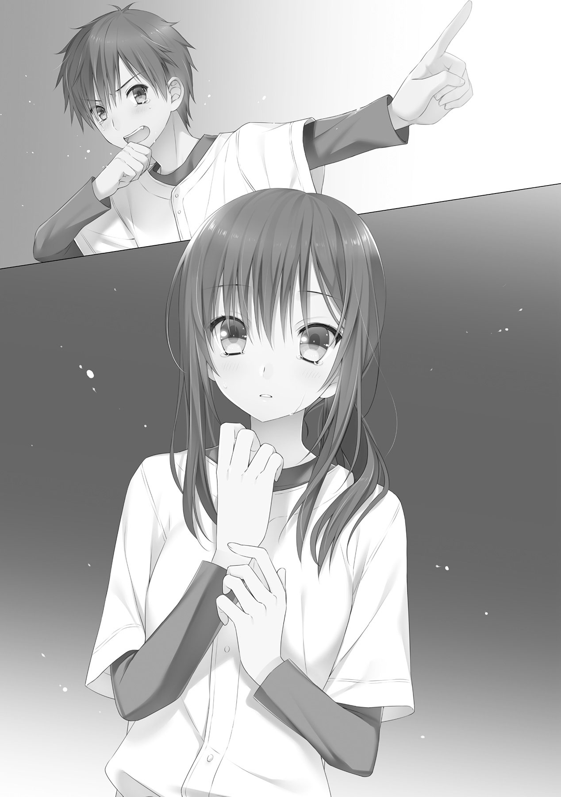
その笑顔に、裏はない。
その日は、雨の降る気配なんてこれっぽっちもないほどの快晴だった。
少しぐらい雲がかかってくれていたほうがやりやすいのだけれども、まあ、雨よりはましだろう。前もって先発を言い渡されている敬一は、守備練習を終えて一息つき、水分を補給しながら帽子の下の汗をぬぐった。
学校の部でないシニアチームとはいえ、地区大会の決勝戦ともなると、グラウンドにはそれなりの応援が詰め掛けてきた。それぞれの選手の父母や縁の人など、観客席を埋め尽くすほどではないが、準決勝までとは明らかに数が違う。それぐらいは、初めての決勝戦となる敬一たちにもわかった。かかる声援の大きさが、さらにその事実を後押しする。
「新助ー！ 頑張るんだよー！ 足引っ張るんじゃないよー！」
ひときわ大きく、自分だけに向けてかけられた声に、阿瀬は憮然として無視を決め込んだ。完全に背を向けて、聞こえない振りをする。
黙々とバットに触り続ける阿瀬に、石井はさぞ楽しそうに組みかかった。
「新ちゃん、呼んでるよー？ 返事してあげないのー？」
「うるせえだまれ、殺すぞ」
「そんなつれないことを言わない言わない。野球選手たるもの、声援にはきちんと応えてあげないとねー」
そう言って、石井は阿瀬の手を取り無理矢理声のほうに手を振らせる。阿瀬は慌てて、絡みつく石井を力づくに振りほどいた。その拍子に観客席の母親と目があったか、顔を真っ赤にし、俯く阿瀬。そのまま背を向け、再び黙々とバットをいじくりはじめた。
石井は頭の後ろで手を組んでけだるそうに言う。
「ちぇ、つまんねーの」
「石井」
「ん？ リュウ、なんか面白いことでもあったか？」
「あそこを」
ぬっと姿を現した司城が、指で内野側の観客席を指し示す。石井は視線でその指先を追い、「げっ」と穏やかならぬ声を漏らした。
二人の視線に気付いた観客は、控えめに手を振ってくる。司城はそれに応えて手を振り返すが、石井は対照的に頭を抱えてうずくまった。
「なんでオフクロ来てるんだよ......」
「ん、うちの母さんが誘ったらしい」
「と・め・ろ・よ！」
「無理いうな」
石井はうずくまって顔を隠したまま文句をぶつけるが、司城は取り合わない。石井は大袈裟にため息をつき、司城は変わらず手を振ってくる親に向かって会釈を返す。阿瀬は発条人形のように、いまだ同じ動作を繰り返していた。
そんな、いつもと違う三者三様の様子に、敬一は苦笑する。司城はどうかはわからないが、少なくとも石井と阿瀬は緊張しているのは見てとれた。なにぶん、初めての決勝戦なのだから、その独特の雰囲気に戸惑っているのだろう。だからこそ、じっとしていられない。いろいろやってみて、緊張をほぐす手段を模索しているのだ。
そして敬一自身も、試合開始が近づくにつれて、気分が高揚していくのを感じていた。今までにない数の観客に加え、伝え聞いた話だと、テレビ中継もされるとのことだ。緊張するなというほうが無理だろう。
敬一としては、特に緊張もせずに冷静なつもりだったが、皆の様子を見ているうちに、その手のひらは汗で湿り、喉は渇き始めていた。
ぎゅっと手を握り、気分を紛らわすようにグラウンドを見やる。
今、そこでは黒岡早良シニアが守備練習を行なっていた。流石に全国常連だけあって、見ていても十分にわかる統率の取れた守備だ。強豪ということで大舞台にも慣れているからだろうか、大して緊張は見られない。
敬一はじっとホームベースのほうに視線を向けた。その黒岡早良の中心にいる、キャッチャーの新田敦耶。人当たりのいい笑顔を浮かべながら、ノッカーにボールを渡している。その動作は、まさに沙月そっくりだった。いや、沙月が新田にそっくりと言うのが正しいのだろうか。
味方が好守を見せるたび、我が喜びの様にねぎらうその姿。チームを信頼し、皆のことを思いやる最高のリーダーの姿とも思える。
だが、敬一にはそれが胡散臭い芝居にしか見えなかった。
昨日、話を聞いたからによる偏見なのかもしれないが、なんというか、声に気持ちが入っていないのだ。労う声も、叱責する声も、沙月のような『変えたい』という熱い気持ちではなく『やむをえず』という諦観にも似た感情がこもっているような、そんな気がする。
全員に気を配っていると見せかけて、その実自分のことだけしか考えていない、そんな気がするのだ。
なまじ沙月が、ワンマンと見せかけて、その実チームのことを第一に考えているのを知っているからこそ、そういう対比が浮かんでくる。
新田敦耶と梶原沙月。まさしく、真逆という構図。
「大したものよね」
ふいに、声がかかる。気付けば、沙月がいつのまにか隣にやってきていた。
沙月は驚く敬一には目もくれずに、じっとグラウンド上を見つめている。いや、睨みつけている。
「皆、新田敦耶を信頼し、その指示に全幅の信頼を置いている。彼に従っていれば勝てると、そう思い込んでいる。思い込ませている」
パンパンとミットを叩いて好守を労う新田。沙月は、視線をそらさない。
「でも、新田敦耶は誰も信頼していない。誰も信用していない。だからこそ、自分が一番前に立って、先導しなければならないと自惚れてる。相互の信頼関係が成り立っていない、ちぐはぐな状況。確かに黒岡早良は強いわ、強いけど、でも......」
そこで沙月は目を切り、敬一に向き直る。緊張を感じさせない微笑を浮かべ、口を開く。
「そんなのは野球じゃないって、思い知らせてやらないとね」
「......もちろんだ」
敬一はぎこちなく頷く。その様子を見た沙月は、小さく鼻で笑った。
「これからが大変なんだから、緊張してる暇なんてないわよ。先発のあなたがそんなにガチガチだと、みんなに波及するわ。もっと肩の力を抜いて」
言うが早いか、沙月は敬一の肩をつかんでぐにぐにと揉んできた。突然のことに敬一は思わず身をよじり、素っ頓狂な声をあげる。
「なっ、なっ、何するんだっ！」
「何って、緊張をほぐすために肩を揉んだんだけど、そんなに嫌だった？」
荒々しく腕をはじかれた沙月は、心外そうな表情を作り、むすっとする。
敬一がどう答えていいのかわからずにうろたえていると、背後から石井がからかうような笑みを浮かべて、じりじりと近づいてきた。追いかけるように、司城もついてきている。
気配に気付き、敬一は振り向く。
石井は楽しそうに口を開いた。
「おーおー、試合前だというのにアツアツですねえ？」
「......うざいのが来た」
「敬一くーん、ポツリとひでえこと言わないでくれ」
「言われてもしょうがない」
「リュウもさりげにひでえこと言うな。ただでさえいろいろあってヘコんでるのに、さらにヘコんで試合出れなくなりそう......だから、姫！ 僕に元気をちょうだい！」
「どうやって？」
「たとえばほら、ここんところに......」
はなから呆れ顔の沙月に、石井は自分の頬を指し示してみせた。沙月はにやりと笑って、腕を振り上げる。
「平手が欲しいのね？」
「......確かに気合は入りそうだけど、痛そうなので遠慮しておきます」
石井は降参とばかりに両手を上げて、すごすごと下がる。沙月は腰に手をあて、「まったく」とため息をついた。
「試合前なんだから、緊張をほぐすにしてももう少し自然にやりなさい」
図星を言い当てられ、石井は決まりわるそうに笑った。その様子を見る限り、なんだかんだで緊張はほぐれてきたようである。沙月はそのまま、阿瀬にも声をかける。
「おーい、阿瀬くん。そろそろ試合前ミーティングやるから、ベンチに集まって！」
バットとにらめっこを始めていた阿瀬ははっとして沙月を見返し、こくこくと頷く。どうやら、あちらはまだ緊張がとけていないようだ。
その緊張を沙月も感じ取ったようで、小さく肩をすくめてみせた。
「阿瀬くん、あんなガチガチで大丈夫なのかしらね」
「まあ、大丈夫だろ」
敬一は、軽く苦笑しながら答える。
「どうせ試合になったら、バッティングに夢中だ」
その言に、石井がすぐさま同調した。
「言えてる。なにせ、新ちゃんだしな」
石井の発言にタイミングを合わせたかのように、阿瀬が大きくくしゃみをし、敬一たちはいっせいに吹き出した。顔を紅潮させた阿瀬が、駆け寄ってきて文句を喚きちらす。それを聞き流しながら、ベンチへと戻っていく敬一たち。
まあ、結局は、どれだけ緊張していたとしても、いつものようなやりとりを繰り広げてしまうのである。そうすれば、緊張なんてどこかに吹っ飛んでいくのだ。
ベンチに戻るころには、いつもと変わらず談笑を繰り広げている皆を見て、敬一は己の緊張もおさまっていくのを感じていた。
「それじゃ、レギュラーを発表するわね」
監督の隣、いつもの定位置に収まった沙月が、こほんと咳払いをして打順とポジションを発表していく。
一番、センター、石井玖郎。
二番、キャッチャー、梶原沙月。
三番、ファースト、阿瀬新助。
四番、ピッチャー、司城龍宏。
五番、ショート、本摩敬一。
前の試合と同じく、敬一はショートからのスタート。別に不満はない、これは作戦なのだ。先の試合で、剛球派のあとの軟球派には、相手も少なからず面食らうと言うことが証明されたのだから。
司城の誇る荒れ球の剛速球を見せつけ、腰を引かせた後に綿密なコントロールと魔球ナックルで飄々と打ち取る敬一へとスイッチする。
地力では劣る相手を撃ち破るには、徹底的にかきまわして向こうに全力を発揮させないこと。沙月はそういって、にやりと笑う。自分たちの勝利を疑っていない、真っ直ぐな笑みだった。
それは沙月だけじゃない。黒岡早良という圧倒的な相手に当たるというのに、敬一たちは、緊張こそすれ不安を感じることはなかった。
審判から号令がかかり、皆が元気よくベンチを飛び出していく。わあっと観客席から歓声が上がり、ホームベースを境に黒岡早良シニアと白倉柏シニアが向き合って整列する。
「よろしくお願いします！」
整然とした礼が、グラウンドにこだました。
いっそう沸き立つ声援をその背に受けて、敬一は身震いした。恐れからではなく、楽しみから、だ。
相手がどれだけ強かろうが関係ない。全力でぶつかり、全力でプレイする。
そして、そして。
敬一は頭を下げた体勢のまま、ちらりと沙月を見やった。沙月は厳しい表情を崩さずに、俊敏な動作で頭を上げる。向かい側で常時にこにこしている新田とは、まさしく対照的である。
沙月の、無念を晴らしたい。ぎゅっと、握る手に力がこもった。
黒岡早良シニアがグラウンド内に散らばり、白倉柏シニアがベンチへと戻っていく。休む間もなく、沙月の号令で先頭打者の石井以外が集められた。
二番の沙月も、すぐ打席に向かえるように準備をしていた。ヘルメットを片手に喋り始める。
「黒岡早良の先発は、斎くん。持ち球はスライダーとストレート。他にもこまごまと変化球を持ってるけど、大して曲がらないから使ってこないわ。球の勢いがある反面、球質は軽い。コントロールはいいんだけど、スライダーは真ん中への失投が多いから、見逃さないように」
かつてバッテリーを組んでいたからだろう、クセ、狙い球などを次々挙げていく沙月。だが、珍しく最後に、こんなことを付け加えてきた。
「と、いろいろ挙げたけど、これはあくまでデータの話。生で見てみないと、どうなるかはわからないわ」
いつにない発言に、ざわつくメンバー。沙月はそれを手で制して、いつものような不敵な笑みを浮かべた。
「だからみんな、決して自分一人で決めようとか思わないように。レギュラーだけじゃない、チーム全員で野球やっているってことを忘れないように。皆への信頼、それさえ忘れなければ、勝つのは私たちよ！」
不敵に、声高らかにそう宣言する沙月。
あっけにとられる皆を尻目に、阿瀬はふんと鼻を鳴らした。
「いまさら言われなくても、だ」
視線を振られた敬一は、皆に見えるよう、大きく頷く。
それにつられて、皆も次々と頷きはじめる。気合が入り、沸き立つベンチに満足したように、沙月はネクストバッターズサークルへと向かう。
そして、まるでそれを待っていたかのように、プレイボールの号令がかかった。
『一番、センター、石井君』
声援がちょいうるさいのと、アナウンスが流れること以外は、いつもと同じだな。
石井はバッターボックスで屈伸をしながら、そう思った。試合前にあった緊張も、今は恐ろしいほどに感じない。
「ま、姫のおかげかな」
石井はちらりとネクストバッターズサークルを振り返り、すぐ視線を戻して、構える。ピッチャーのほうにバットのヘッドを向け、挑発的にゆらゆらと動かす。
審判のプレイの合図と共に、敵の投手――斎と言っただろうか――が振りかぶる。
まず一球目は様子を見る。それが先頭バッターの定石であり、基本だった。多く球を投げさせ、その日の相手ピッチャーの調子を判断し、その後に繋げることこそが一番打者の役目だ。
だが。
「初球は打ってこないと思ってる。そこが、狙いよ」
試合前に沙月に言われたこと。全てを鵜呑みにするわけじゃないが、参考にするだけの価値はある。
球が投じられたその一瞬の軌跡で球種を判断する。ストレートにしては山なり、つまりスライダーだ。刹那で打つ意志を固め、思い切り良く踏み込む。
インコースからぐぐっと外角へ逃げるように鋭く曲がる白球を、しかし石井は一度たりともその視界から逃すことなく、捉える。無理に引っ張ろうとせずに、変化にバットを合わせる。そのまま逆らわずに押し出しさえすれば。
キィンと、軽快な音と共に、白球は一二塁間に飛んでいった。勢いよく飛来する打球に向かってセカンドが飛びつくが、その一瞬先に球はライトへと抜けていった。
当たり前だ、そうなるように打ったのだから。石井は、一塁へと駆けながらにやりと口元に笑みを浮かべた。ファーストを少し回ったところで、ボールが内野へと戻ってくる。
いきなりのクリーンヒットに、ベンチだけでなく観客席までいっせいに沸きあがった。石井が気分よさそうにそちらを見やると、ちょうど、自分の母親が嬉しそうに手を振っているのが目に入った。それだけでは飽き足らず、隣にいる司城の母親に抱きついたりしている。
喜ぶにしたって、喜びすぎだ。
石井は小さくため息をついた。
だが、不思議と試合前のような恥ずかしさは生まれてこない。むしろ、清々しかった。
寄ってきた一塁コーチャーと拳をあわせ、ベンチに向かい手を掲げる。それに応えるように、「ナイバッチー！」と声がかかり、石井の気分はより一層昂った。
するするとリードを取りながら、ふと目の端で捉えた母親に、心の中で呟く。
「まだ、喜ぶのははえぇよ」
にやりと笑い、石井は迷いなく駆け出した。
初球をヒット、そして初球でスチール。
正直、ここまで綺麗に決めてくるとは思ってもいなかった。
「張りきっちゃってるじゃない」
バッターボックスに入った沙月は、セカンドベース上で服をはたいている石井を見る。嬉しそうにガッツポーズをとるその姿を見ていると、こちらまで嬉しくなってくるというものだ。
「なかなかいい一番バッターだね」
そんな気分を邪魔するように、キャッチャーの新田から声がかかった。沙月はとたん、厳しい視線で振り返る。マスク越しでその表情は良く見えないが、きっと上辺だけの笑みを浮かべていることだろう。
沙月は、不機嫌さを滲ませた口調で言う。
「それはどうも。そちらは、初球から不用意に入りすぎたわね」
「とんでもない。あれは斎のコントロールミスだよ。僕は初球から打ってくるんじゃないかって思ってた」
「......ふん、口だけではなんとでも言えるわよ」
「口だけだと思うのかい？ ちゃんと理由はあるよ」
言いながら、新田はサインを出していたようで、斎が投球モーションに入る。慌てて沙月はバントの構えをとった。
セットポジションから投じられた直球を、サード方向へと転がす。前もってスタートしていた石井は難なく三塁へと達し、沙月は小さく頷いた。これでワンアウト三塁、いきなり先制のチャンスだ。
投げ出したバットを拾い、沙月はベンチへと戻っていく。
その背中に、小さな呟きが聞こえてきた。
「君がいるからね」
沙月は、はっとして振り向く。内野陣の守備位置を指示していた新田は、沙月が振り向いたのに気付き、笑いかけてきた。人当たりのいい上辺の笑顔に吐き気を覚え、沙月は顔を背ける。だが、新田が発した言葉は、ぐるぐると頭の中で廻り、離れない。
まさか、ここまではすべて、新田敦耶の計算通りなのか。
いや、そんなはずはない。強がりだ。惑わすための、作戦だ。
鎌首をもたげてきた不安の虫、恐れを打ち払うように、沙月はぶんぶんと首を振る。
すべて万事理想の展開で進んでいる。それは間違いないのだ。
それは間違いないのに、沙月の頭から不安は消えようとしなかった。
三番の阿瀬がタイムリーを放とうと、四番の司城がそれに続こうと。
不安はけして、消えてはくれなかった。
ワンアウトランナー一，二塁。１点を先制して、なおチャンス。相手ピッチャーは出鼻をくじかれ、浮き足立っている。うわずった球を痛打されてるのがその証拠だ。
この勢いに乗らない手は、ない。
敬一は、よし、と気合を入れて打席へと向かった。
「君は、昨日のピッチャーくんだね。今日は投げないみたいだけど、何かあったのかい？」
バッターボックスの足場をならしているとき、ふいに声がかかった。最初は誰に話しかけられているのかわからなかったが、審判がそんな気さくに話しかけてくるはずもないので、答えはおのずと一つだった。
敬一は振り向き、ゆっくりと視線を落とす。警戒心ありありの厳しい眼差しでキャッチャーの新田を見据えた。
辛辣な視線を感じ取ったか、新田は、はは、と乾いた笑いを漏らす。
「そう敵視しないで欲しいな。なにも食ってかかろうってわけじゃない、話してみたいと思ったから、さ」
敬一は警戒を解かずに、つっけんどんに返す。
「集中してるんだ、邪魔をしないでくれ」
「まあまあ、そう言わずに」
マスク越しにも、新田が笑っているのが、わかった。何故このピンチで、そんなにこやかな笑顔でいられるのか、敬一にはおよそ信じられない光景だった。沙月の話うんぬんがなくとも、好きになれそうにはない。
「想像以上にいいチームだね、君のチームは。いくら斎の立ち上がりが悪いとはいえ、ここまでポンポンと打たれるとは思わなかったよ」
敬一は返事を返すこともなく、黙々と足場を慣らす。だが新田は聞いてようが聞いてまいが関係なさそうに続ける。
「何度も言うけど、斎は立ち上がりが悪いんだ。コントロールも悪い。どこに飛んできても、おかしくないんだ」
そこで意味深に言葉を切る。敬一は懐疑の視線を向けるが、今度は全く取り合わない。仕方なく敬一は構える。
ピッチャーは一、二塁のランナーを気にしながらだからだろうか、先程よりもぎこちないセットポジションから球を投じてくる。
ストレートと球種を判断した、直後。
「っ！」
びゅうっ、と目前を通過する硬球。
身を仰け反らせた拍子で尻餅をつく。金属バットが手から離れ、カランと音を立て地を転がる。
選手だけでなく、観客にまで緊張が波及し、一瞬、沈黙が訪れる。
「ふうっ！」
そんな空気を看破するように、敬一は勢いよく起き上がった。ずれたヘルメットをかぶりなおし、バットを拾い上げる。
バッターボックスに戻ると、ピッチャーが小さく帽子をとって謝ってきた。ヘルメットのつばを触り、それに応える。続いて、キャッチャーの新田が声をかけてくる。
「すまない。なかなか思った所にこなくてね」
声色こそ謝罪のそれだったが、ちらと見えたマスク越しの顔は、微笑んでいた。
その表情に違和を感じた敬一は、思わずタイムを申告する。バッターボックスを外し、ふう、と一息つく。それと同時に、思考をめぐらせた。
新田は何故笑っていられたのか。今のは暴投すれすれの球、取れたからいいものの、取れなかったらランナーが進塁し、あるいは帰ってきてしまったかもしれない。それに、ただでさえボールカウントが増えて、コントロールの悪いピッチャーにさらにプレッシャーがかかってしまう。一見不利としか見えないあの状況で、笑える理由は何か。
それらデメリットを超えるメリットがあるから。それしかないだろう。
どこに飛んできてもおかしくはない、という発言。予告通りともいえる、ブラッシュボール。そして笑み。やがて思考は、一つの答えに向かって、嫌な一致をみせる。
「まさか、な」
ばかばかしいと思考を打ち切り、バッターボックスへと戻る敬一。
だが、一度浮かんできた疑問はけして消えないのだ。
先程のブラッシュボールの影響もあって、なかなか踏み込むことができず、外角の球でストライクをぽんぽんと取られ、追い込まれてしまった。
このままではいけない、と、敬一はバットを握りなおし、次こそはと力強く構える。スライダーは抜ける可能性がある以上、長打警戒のこの場では使ってこないはずだ。ストレート一本、それだけに狙いを絞る。
セットポジションから放られた球は、唸りをあげて迫る。
また外角。敬一は今度こそ思い切りよく踏み込み、外に吸い込まれていく球を捉えようとバットを振り出す。
刹那、白球が軌道を変えた。こちらに向けて、ぎゅんっと勢いよく曲がってくる。予想だにしなかった変化に、敬一は思わず腰が引けていた。中途半端なかたちでバットが空を切る。
「ストライク！ バッターアウトッ！」
ミットに吸い込まれた白球を確認し、敬一はこつんと自分の頭をバットで小突いた。最後の球はど真ん中へのスライダー。決して打てない球ではない。来るのがストレートだと思っていたとしても、だ。
「術中にはまった？」
ベンチへ戻ってきた敬一に、沙月が声をかける。
敬一は意味がわからずに反芻した。
「術中？」
「打席に入る前とか、なんかごちゃごちゃと話しかけてこなかった？」
「あ、ああ」
「やっぱり。一球目のブラッシュボールなんてまさしく彼のやり方だしね」
一人納得する沙月に、敬一は小さく手を上げ質問する。
「......すまん、説明してくれ」
「俗に言う『ささやき戦術』ってやつよ。ささやきなんてレベルじゃないけどね、彼のは」
沙月は呆れたように呟き、キャッチャーの新田を睨みつける。そして、言葉を続けた。
「例えば、今やられたのだと、ブラッシュボールを投げる前後に『荒れ球に気をつけろ』とか言ってきて、バッターに無理矢理そう意識させるのよ。それで予告通り荒れた球が来ると、それがわざとなのかブラッシュボールなのか判断がつかなくなって、考えてしまう。バッターボックスで考えてしまう時点で、もう打てるわけがないの。後は、狙い球を外しさえすれば、気の抜けたスイングしかできなくなる、と」
敬一は、まさしく自分が考えたまんまだということに絶句した。顔面すれすれの球が、わざとなのかブラッシュボールなのかわからず、次も来るかもしれないと考えているうちにストライクを稼がれ、ストレートに狙いを絞って打ちに行ったらスライダーが来て、内角に迫る球に先程のすれすれの球を重ねて腰が引けたのだ。
「本摩くんは考えて狙い球を絞るタイプだから、こういうの、はまりやすいのよ。逆に阿瀬くん司城くんには、あまり効かないんじゃないかしら」
けして二人が馬鹿と言っているわけではない。あの二人は来た球に対応するタイプ、という話だ。
そうこうしているうちに、六番バッターが高めの直球を打ち上げて、スリーアウト。一回表の白倉柏の攻撃は、大量得点のチャンスは作ったものの、結局１点どまりとなった。
流れがきているのに、つかめない。むしろ、それをエサにおびき寄せられているような、気持ちの悪い感覚。
これも、新田敦耶の予定通りとでも言うのか。
沙月は向かい側の敵ベンチを睨みつける。かつて自分もそこにいた、黒岡早良のベンチを。
「弱気はだめ。勝つのよ、沙月」
ぱん、と気合を入れるように頬を叩き、防具をつけて勢いよく飛び出す。いまだに不安は消えようとはしないが、消えないのならねじ伏せてしまえばいいだけだ。
敬一は意気揚々とマウンドに登ったところで、先にそこにいた司城と目が合い、自分がショートだということを思い出した。決まり悪そうに笑って、あわててショートへと方向転換する。その様子を見ていたセカンドにからかわれながら、ぐっぐっと関節をほぐしながら、敬一はマウンドに視線を送る。その先では、司城が黙々と投球練習を開始していた。思わず、ため息が漏れた。
思いのほか、ピッチャーに思い入れを持ってしまったようである。長年慣れ親しんだショートのポジションにいるというのに、なんだか落ち着かないのだ。試合後毎日投げ込みを行なっているからだろうか、体が投げたがっているようにも思えた。
だめだだめだ、と敬一は勢いよく首を振る。今、自分はショートなのだ。投球ではなく守備で貢献しなければならない。
ファーストの阿瀬から放られた軽いゴロを難なく捌き、返球する。久々のような感覚すら覚えたが、動きには特に問題ない。体がしっかりと覚えている。
使い慣れたグローブをぐにゃっと折り曲げ、二、三度シャドーでスナップスローの練習をする。
そこでふと、試合前に沙月に言われたことを思い出した。フライング気味でレギュラーを教えてもらった、あの時だ。
「こちらのデータがあまり出回ってない以上、本摩くんをショートに置けば、きっと新田敦耶は集中的に狙うように指示してくるはずよ。常識では考えられない左の内野手だからね。さらに、なまじピッチャーの本摩くんを見ているだけ、間に合わせポジションと考えてくれればもうけもの。鉄壁の守備、見せつけてあげて」
だから、狙ってきてくれるのならば、むしろそれはありがたい話なのだ。敬一にとって、ショートの守備の勘を鈍らせずにすむし、アウトカウントは増えていくだろう。どれだけ相手が強いチームだろうと、打球はゴロかライナーかフライなのだ。取れる範囲の球ならば、敬一に取れない理由はない。
黒岡早良の一番がゆっくりと右のバッターボックスに入り、プレイがかかる。敬一はぐっと腰を落とし、意識を集中させて打球を待つ。
初球、ストライク。外角低めに投げ込まれた速球を、バッターは初球から狙っていくそぶりすら見せず、見送る。
二球目は高めへ外れ、三球目も外角へと外れる。そして、四球目。
勢いよく振りぬかれた司城の腕から、唸りが聞こえてきそうな剛速球が放たれ、ど真ん中へと吸い込まれていく。審判の腕が上がり、大きな声が響きわたる。ストライク、これでツーツーの並行カウントとなる。
だが、その間、打者は一度たりともバットを振っていなかった。
つまり、待球の指示が出ているのだろう。なにせ向こうには、敬一たちのデータがほとんどない。だからこそ、一番バッターができるだけ数を放らせて、相手の球筋を見切る。先程石井が完全に無視した、先頭打者の定石だ。
沙月もそれはわかっているようで、バッターを下からなめまわすように見渡し、そして、腕を大きく広げてミットを真ん中に構えた。ストライクを投げて来いという意思表示だろう。司城は頷き、ゆったりとしたフォームから剛球を投げ込む。
ややインよりに寄った球に、今度こそ打者は手を出してきた。球の勢いに押されたような鈍い音が響き、平凡なゴロがショートの敬一めがけて飛んでくる。少しスピンがかかっているが、問題はない。
跳ねる方向を読んでゆっくりと回り込み、流れるような動作で一塁へと向き直る。
そこで敬一はぎょっとした。思いのほか、ランナーの足が速い。
慌ててファーストに送球し、なんとかアウトにはなったが、すこし肝を冷やすプレイだった。流石に決勝戦、少し気を抜くと致命傷になりかねない。鉄壁だからといって、油断は禁物だ。敬一は強く胸に刻み込んだ。
アウトになったバッターは、悔しがることもなく淡々とベンチへ戻っていく。途中、すれ違う二番打者に助言を伝え、ベンチに戻るや否や新田のもとへと駆け寄っていった。きっと、今の打席で見た球筋を報告しているのだろう。
しかし、座っている新田に対し後ろ手で立ったまま報告するその姿には、まるでチームメイトという雰囲気を感じ取れない。沙月から聞いた話のぶんだけマイナスに見てしまうといっても、あれで果たして選手は楽しいのだろうか。野球ってのは、チームメイトと一緒にするものじゃないのだろうか。
そんな敬一の思考を打ち破るように、鋭い打球音が耳に届いた。
「ショート！」
凛とした沙月の声で、敬一は我に返る。刹那、ライナーが真正面に向けて飛んできた。とっさの反射でグローブを出し、掴み取る。
ぱぁん、と皮をしたたかに叩く音が響き、じん、と痛みと痺れが手に走る。
敬一が顔を小さくゆがめながらグローブの中を見やると、そこにはきちんと白球がおさまっていた。無事取れていたことに安心し、敬一はほうと息を吐いた。
司城はナイスショートと労ったが、沙月にはぼうっとしていたのがばれていたようで、乱暴にマスクを取り、叫びかけてきた。
「ショート、集中して！」
痺れた手を振り、苦笑いを浮かべながら手で謝った。
両手でボールを慣らし、マウンドの司城へと手渡す。高揚した気分を抑えるために、ついでとばかりに話しかけた。
「結構強い打球が来るな」
「ん、しっかり合わせてくるぞ、気をつけろ」
ボールをぎゅっぎゅっと両手でならしながら、司城はのんびりと告げてくる。さすが全国クラスだけあって、走塁だけでなく打撃も相当のもの。いまだ残る手の痺れがそれを物語っていた。
三番バッターはピッチャーの斎。右の打席に入り、構えたその姿には風格すら感じられた。投手としてよりも、打者としてのほうが大成するのではないかと素直に思えるぐらいに。もっとも、そうでなければ三番に座ってはいないだろうが。
ど真ん中へのストライクにも、インコースすれすれのボールにも、ぴくりとも動かずにカウントはワンボールワンストライク。俗に言うバッティングカウントになった。こころなしか、斎のバットを握る手に力がこもったような気がする。
敬一は今度こそ集中し、打球に備える。
沙月の要求よりも甘く真ん中に入り、斎のバットが動き出したとき、敬一も小さく足を上げサード側に踏み出した。
力強く振りぬかれたバットから、白球を先導するようにキィンと、痛烈な金属音が響き、三遊間へ抜けようかと強烈な打球がゴロで迫った。
普通のショートならば守備範囲外の打球。
だが、敬一には果たしてそうではない。
左利きだからこその特長、右手のグラブが最短距離で打球へと差し出される。前もって踏み出しておいた甲斐もあって、敬一が飛びつくまでもなくグラブに打球がおさまった。
迅速な動作でくるりと回転し、一塁に鋭い送球を行なう。今度はずいぶんと余裕のある段階でランナーにアウトが宣告された。
好プレイに、観客席がわっと沸く。
バッターの斎は信じられないという表情で天を仰いだ。当たり的にはジャストミート、抜けない理由がなかった。
だが、頭を超えない打球じゃないからこそ、敬一に取れない理由もない。併走する皆に好守をつぎつぎと労われ、敬一ははにかむように笑みを浮かべた。観客席の拍手に応えるように小さく手をあげる。
しかし、これでショート守備が決して間に合わせのものではない、ということは看破されてしまっただろう。次の回からはおそらく、無理な引っ張りはやめて、腰を据えて打ってくる。速球にもそれなりに合わせられている以上、変化球のない司城には少し荷が勝ちすぎている感がある。
敬一の不安に同調するように、沙月はベンチへと帰る歩みの間、俯きがちだった。きっと何かを考えているのだろう。その予感が的中したように、ベンチへと戻り防具を外したところで、敬一に声をかけてきた。
「肩、ならしておきましょう」
パンとミットを叩く沙月。敬一はゆっくりと頷いた。
二回表は下位打線ということもあって、斎・新田バッテリーに完全に抑えこまれてしまった。ベンチ前で敬一の肩ならしに付き合っていた沙月は、ラストバッターが打球を打ち上げたのを見て、ベンチに引っ込みタオルで汗をぬぐう。
プロテクターをゆっくりと着けながら、自陣ベンチへと戻っていく黒岡早良のメンバーを見やる。まだ序盤とはいえ負けている状況なのに、彼らの表情に焦りの色はうかがえない。それどころか、気軽にじゃれあっていたりする。
負けるなんて、夢にも思っていないのだ。なにせ、対戦相手はろくに名も聞かない白倉柏シニア。調べてみても、過去は一、二回戦で敗北が順当なチーム。ラッキーで勝ち上がってきていると思われてもしょうがない。
バッテリーの斎と新田だけは気を抜いていないようだが、それだって格下に見ているだろう。別にそう見られるのはしょうがない、と沙月は思う。
かたや全国上位常連、かたや地区大会二回戦レベル。誰だって、前者の勝利を疑わないだろう。
だが、その油断。その奢りこそ自分たちが乗っかるべきものだ。
知名度が高いチームが勝つのではないのだから、敵の油断は最大限に利用させてもらう。惑わし驚かし撹乱し混乱させ、どさくさ紛れに勝利を奪う。
ひるがえっていえば、そうしないと勝てないのだ。地力も経験もなにからなにまで相手が上。冷静にデータ分析をすればするほど、沙月は絶望を感じずにはいられなかった。
だからこそ、太刀打ちのできそうな面子を上位打線に集めた。
クリーンナップの前に、ランナーを二塁まで進めることができれば、このチームなら必ず１点は取れる。それが三打席回ると考えて、３点。
あとはその３点を、なんとかして守っていくだけだ。
沙月はミットとキャッチャーマスクをひっつかみ、グラウンドへと駆け出す。
軽い投球練習、そして二塁への送球を終えて、バッターがゆっくりと打席に近寄ってくる。
「よろしくお願いします」
黒岡早良の四番、新田敦耶は丁寧にヘルメットを取って、審判にお辞儀をした。審判に挨拶というのは皆もやっていることだが、新田のそれはやりなれているだけあって堂に入っている。思わず審判も小さく礼を返していた。
新田はヘルメットをかぶりなおし、右バッターボックスに入る。足場をならしながら、にこやかな笑顔を浮かべ、気さくに沙月に話しかけてきた。
「お手柔らかに頼むね」
新田敦耶。確実に回ってくるだろう三度の打席を、どれだけ点に絡ませずに終わらすか。それが、沙月にとって勝利への命題だ。
シングルですむならよし。守備のリズムが崩れるのでなるべくなら避けたいが、フォアボールもやむなしだろう。それぐらい、新田のバッティングが図抜けていると、そばにいた沙月自身が一番良くわかっていた。
どれだけ努力しても越えようのなかった、天性の能力だ。
「......うちのピッチャーは、本当にコントロール悪いから気をつけなさい」
沙月はつとめて無表情で返事をする。新田は小さく肩をすくめて、苦笑した。
「脅さないでくれないかな。踏み込みにくくなっちゃうじゃないか」
「それは僥倖。外角一辺倒でよさそうね」
「コントロールが悪いんだったら、狙い通りには来ないだろう？」
「さて、どうかしらね」
言いながら、沙月は静かにサインを出した。
まず、初球はボールで様子を見る。
新田は敬一や沙月と同様に、配球を読んで打つタイプだが、甘ければ初球でも容赦なく打ってくるのだ。理想の待ち方ともいえる。だからこそ、油断ならない。
司城はゆっくりと頷き、小さな投球モーションに入る。新田もそれにあわせて、下半身をどっしりと地につけたオープンスタンスに構えた。
力の乗った球が内角低め、地面すれすれに投げ込まれた。キャッチャーからは明らかにボールとわかるそれ。だが、オーバーハンドから角度をつけて振り下ろされることで、騙されて振るバッターは多い。
しかし。
「初球はボール」
ピッチャーのモーションが途中だというのに、新田は呟き、バットを下ろした。
沙月はぎくりとし、一瞬、ボールから目を切った。
迫る球に慌ててミットを出すも、ボールはあえなくミットの腹に当たって弾かれ、思わず舌打ちが出た。ランナーがいなかったのは幸いだった。
ボールを拾うために立ち上がったところで、新田が声をかけてきた。
「本当に君のリードは読みやすいね」
そう言って、くくっ、とくぐもった笑い声をあげる。
沙月は無視を決め込み、平静を装ってボールを拾い、たっぷりと時間をかけてしっかり慣らした後、司城に投げ返した。
その時間は、自身を落ち着かせるためのものでもあった。
（リードが読まれてる？ たった三人で、そんなはずは）
沙月はごくりと唾を飲み、サインを出す。新田の指摘に警戒を強めもう一球、ボールを。
と見せかけて、ど真ん中にストライクを投げ込む。
外角に寄るように動き、その実ミットはど真ん中に構える。司城はゆっくり頷き、おおよそ狙い通りの球を投げ込んでくる。
バッターボックスで動く様子のない新田に、沙月がよしと頷きかけた瞬間。
ひゅん、と風を薙ぐ音が届いた。
遅れて、金属音。沙月が気付いたときには、すでにサードの頭上を越した打球が、レフト線に落下していた。
「っ！ ショート、中継！ ピッチ、サードカバー！」
沙月は驚愕の声を飲み込み、叫ぶ。レフトがクッションボールを処理し、敬一が中継した時点ですでに新田は二塁を回ろうとしていた。敬一はぐっとボールを握り、全力でサードに向けて投げつける。もともとの地肩の強さに加えて最近の練習の効果もあり、沙月の想像以上に好返球がきた。
だが新田は速度を緩めない。それどころかさらに加速し、三塁へと滑り込んだ。
敬一の送球は正確だったものの、タッチが一瞬遅れた。スライディングによって立ち上がった煙のさなか、新田はセーフを確信しているように立ち上がり、パンパンとユニフォームをはたく。
案の定、審判は手を横に広げた。新田は続けてタイムを申告し、寄ってきたサードコーチャーに足のプロテクターを手渡す。
そして、ちらりと沙月のほうを向いてきた。視線が合うなり、とんとんと自分の頭を指差す。配球は読んでいた。そう言いたいのだろうか。
惑わすためか、真実か。読んでいたのなら、ホームランにされてもおかしくないコースだ。司城の重い球質を考えると、それは難しいのかもしれないが、新田敦耶ならば不可能ではない。その証拠に振り遅れと思われた球は、軽々と引っ張り方向に飛んでいった。
そこで沙月ははっとして、思考を断ち切るようにぶんぶんと首を振った。考えている場合ではないのだ。
球審にタイムを申告し、センターの石井とショートの敬一を手招きする。サードからボールを受け取りながら、沙月はマウンドに歩み寄った。
「ノーアウト三塁ね。１点はしゃあないかな、こりゃ？」
マウンドに駆け寄ってきた石井は、開口一番そう言ってきた。
沙月はきっと石井を睨みつけ、言う。
「１点もあげたくないの」
「姫、潔癖だねー」
「ふざけないで！」
思わず声を荒げてしまった。
石井は一度びくりと驚き、おそるおそるといったかたちで口を開く。
「じょ、じょーだんだって！ 姫、なんか今日、妙にピリピリしてて怖いよ？」
「それは......」
「そりゃあ決勝戦だからな。しかも相手が古巣だし、梶原だって緊張するだろ」
石井に指摘されどもった沙月に、敬一が助け舟を出す。石井が疑問の声を挟む間もなく、そのまま言葉を続けた。
「それで、点を取られないためにどうする？」
沙月は一度大きく息を吸って、平静を取り戻す。
そのまま石井に向き直り、小さく頭を下げた。
「そのまえに、怒鳴ってごめん、石井くん」
石井は「僕？」と自分を指差し不思議そうに首をかしげ、そして慌てて手を振った。
「いや、いやいや謝んなくてもいいよ姫。明らかに僕が無神経だったんだし」
「礼儀ってものよ。借りと思われるのも癪だから」
「......むしろその発言に謝罪を要求したいんだけど」
落胆する石井を見て、沙月の顔に小さく笑みがこぼれた。
よし、落ち着いてきた。大丈夫、大丈夫。
そのまま胸に手をあて、三人を順に見渡し、凛とした口調で告げる。
「わかってるわよね？」
「ん」
「姫のお気に召すままに」
司城はゆっくりと頷き、石井は中世の挨拶のように足を引いて頭を垂らした。その石井の頭をミットで軽く叩き、沙月は口早に言う。
「司城くん、外野まで飛ばさないように心がけるけど、飛んできたらバックホームは諦めるように伝えておいて。石井くん、内野はファースト除いて前進守備で、お願い」
二人は頷き、それぞれのポジションへと走っていく。
沙月はもういちどゆっくり息を吸って、吐く。
「ありがと、本摩くん」
「......まあ、相手があの新田だからな。いくらお前でも、抑えきれないだろ」
「余計なことを意識しちゃいけないって頭ではわかってるんだけどね。ついカッとなっちゃう。私もまだまだだわ」
ふう、とため息をついて、顔を上げると、たまたま視線の上に新田がいた。
とたん、落ち着いてきたはずの心がまたうずきはじめる。わかってはいるけど、抑えられない対抗心。
それを察したか、ずいと敬一の背中が視線を遮った。突然目に入ってきた背番号６に、沙月の力が抜ける。
「この状況で、１点も与えなければいいんだろ？」
敬一は背中越しに、力強く告げてきた。くるりと振り向き、ボールを要求するようにグローブを広げる。
沙月はにっと笑って、力強くボールを敬一のグラブに叩き込む。
「頼んだわよ、背番号６のエースくん」
「......ああ」
エースという言葉に敬一は少し逡巡したが、やがて力強く頷いた。
投球練習を始めるとほぼ同時に、球場内にアナウンスが流れた。
『白倉柏シニア、シートの変更をお知らせします。ピッチャーの司城君がセンター。センターの石井君がショート』
独特の野手的なフォームから放たれる敬一の球を、沙月はかみしめるようにしっかと受け止める。
速度こそ圧倒的に司城に劣るが、無回転でゆらゆらと揺れる球。その上、針の穴を通すようなコントロール。
これほどリードのしがいのあるピッチャーは、そうはいない。
敬一に出会えたことだけで、白倉柏シニアに移ってきてよかったと思えるほどに。
だから、そのかわりといってはなんだが、沙月が移ってきてよかったと、皆に思ってもらいたい。そのためにも、この試合、負けるわけにはいかない。
「ナイスピー！」
気合を入れて、球を投げ返す。
『ショートの本摩君がピッチャー。以上に代わります』
敬一は返球を奪い取るように受け取った。
表情には表れていなかったが、どうやら、あちらも気合十分のようである。
――ならば、見せてやろう。
私たちの力を。生まれかわった白倉柏シニアの力を。
私の力を。梶原沙月の力を。
新田敦耶に。
「ストライク、バッタァーアウトッ！」
球審は大きな挙動で打者にアウトを告げた。固唾を呑んで見守っていた白倉柏側の観客から、歓声があがる。
空をきったバットに、五番バッターは首をひねりながらベンチへと戻っていった。
悩んでいてもわかるはずがなく。わかったところで明確な対処法があるわけじゃない。それが本摩敬一の魔球、ナックルボール。本来の弱点であるはずのコントロールも、敬一は自然と突破していたのだから、手に負えない。
もう一つの弱点である、まちまちな変化という点も、五番がなすすべなく三振したのを見るに、今日は申し分なしということだ。
敵じゃなくてよかったと、沙月は素直に思えた。
ちらりとサードベース上の新田を見る。新田から見れば、ただのスローボールに三振したように映っていることだろう。
案の定、新田は明らかに表情の色を変えて、腕を組みじっと敬一を見つめていた。
だが、この球のカラクリは、打席に立たなければそうそうわかるものではない。そして新田の打席まで、あと八つもアウトが取れるのだ。
黒岡早良シニアは、全体的に高レベルのメンバーに、圧倒的な新田敦耶の分析能力が合わさることによって構成されているチームだ。言い換えてしまえば、皆、新田敦耶の指示に従い、己が能力を最大限に発揮しているからこそ、のチームである。
新田敦耶の分析を遅らせることができれば、それだけ黒岡早良の対応は遅くなるのだ。初回は形だけのショートと見せかけて抑え込んだ。二回、三回は対応のわからない魔球で抑えられるだろう。中盤までリードされたまま零封されれば、流石の黒岡早良だって慌てはじめるはずだ。
その焦りに、乗じる。
沙月のサイン通りに投げ込まれた球に、打者のバットが再び空をきる。「ストライク」という気合のこもった声が、はっきりと聞こえた。ミットにおさまる球の感触が、沙月に自信を持たせていく。
いける。
これなら、いける。
二球目、外角低めに投じられた球のずいぶん上をバットが通り抜ける。バッターはこまのようにくるっと回り、バランスを崩しそうになりながら、首をかしげる。
考える暇をあたえずに、沙月は素早く内角高めのサインを出す。この打者は追い込まれると外角低目空振りを恐れて、深く踏み込む。インハイの甘い球でも仰け反るのだ。
なにぶん、ついこの前までいたチーム、どのバッターはどこが苦手かなんて、思い出すまでもなく覚えている。
狙い通り、バッターは手を出すこともできずにインハイの球を見送り三振。ノーアウト三塁があっという間にツーアウト三塁となった。
三塁上の新田はいまだ腕を組み、三振のカラクリを解き明かそうと敬一を見つめていた。特に焦りのようなものは伺えないが、いつもの笑顔が消えているあたり、真剣に分析しようとしている。遊び球はいらない、多く球を見られるほうが不利なのだから。
七番バッターをポンポンとファウル二つでツーストライクまで追い込み、沙月がそそくさとサインを出したところで、思わぬ邪魔が入った。
「タイム、タイム！」
三塁塁審が両手を広げて、試合を中断させる。気をそがれた沙月がそちらを見ると、新田がしゃがみこんでスパイクのひもを結びなおしていた。
サードコーチャーが新田に歩み寄って、なにやら声をかけている。おおかた、スパイクを交換するかとかそういう話だろう。
こちらの集中力をそぐための作戦とも考えられるが、それにしてはやり方がぬるい。残念ながら、敬一のコントロールはその程度では乱れない。
ほどなくプレイがかかり、先程のサインのままに敬一は投球を開始する。
沙月の要求は真ん中低め。狙い通りの場所に球が迫ってくる。そんな沙月の視界を遮るように、すっとバットが現れた。
（スリーバント!?）
声にこそ出なかったが、心の中では大声を出していた。
混乱のあまり、ボールから目を切りそうになったが、先の反省もありそれだけは免れた。
結果としては、低めへの要求が功を奏し、ボールはバットにかすることもなく沙月のミットにおさまった。
審判がアウトのコールをしたところで、沙月は安堵のため息を吐く。
だが、頭の中はまだ整理し切れていなかった。
意図あってのバントのはずなのだが、その意図が読めないのだ。
スクイズならば、ファーストストライクからやってくるはず。
スクイズならば、サードランナーがスタートを切るはずなのに、その様子がない。
そもそも、ツーアウトから狙うこと自体がおかしい。セーフティにしたって、バットを出すタイミングが早すぎる。
など、おかしな点をあげればきりがない。
もしランナーの新田がスタートを切っていたのなら、わざわざタイムをかけて靴紐を結びなおしたのにも納得がいくし、サードコーチャーが話しかけていたのにも納得がいくのだが。
と、そこで沙月は、ひらめいた。
サードコーチャーが話しかけた。
つまりそれは、サードコーチャーに話しかけることもできる。
そのときに、サインを変えることもできる。
あのバントは新田敦耶が指示したものだとしたら。
三振してもいいから、バントさせたのだとしたら。
沙月は、ゆっくりベンチへと引き下がっていく新田を見やる。
新田の口元には、いつもとかわらぬ微笑が浮かんでいた。
新田敦耶は笑みを浮かべつつも、内心では相当にいらだっていた。
もちろん、梶原沙月に対して、である。
（まったく、執念深い女はこれだから嫌いなんだ）
斎の球を受けながら、決して顔には出さないように、心の中で愚痴を吐く。
沙月のたゆまぬ努力を重ねる姿を見て、かすかな不安を感じ、チームから上手く追い出したまでは良かった。これで何の不安もなく全国を目指すことができる、そう考えていた。
決勝戦の相手が聞いたこともなかったチームでなければ。
そのチームの正捕手が、梶原沙月でなければ。
プレイがかかり、バッターボックスに入ってきた打者を見て、新田はあらためて心の中で毒づいた。一番バッター、石井玖郎。独特なフォームのくせにシュアなバッティングをし、足も速い。というデータしかない。
初回の打席で見極めたかったが、初球を打たれてはどうしようもない。
今度こそじっくり見させてもらうつもりで、外角へスライダーを要求する。だが、頷いた斎が投げ込んできた球は、ど真ん中へと吸い込まれていった。
瞬間的にそれを判断した新田は、思わず一瞬顔をしかめた。
悪いクセがでた、と。
甘く入ったスライダーは、一打席目の再現のように軽々とライト前へ運ばれた。沸き立つ向こうの応援が、より苛々をつのらせた。
斎は決して悪いピッチャーではない。球質は軽くとも直球は全国でもトップクラスのスピードを誇るし、スライダーの曲がりだって一級品だ。
ただ、惜しむらくはその弱気。特に、一度打たれたバッターに対する投球で、腕が縮こまり甘くなるクセがあるのだ。
梶原沙月もそれがわかっているからこそ、上位打線に打てるバッターを集めて、斎へのプレッシャーとしてきている。
普通のバッターならデータなんて無くても大丈夫だが、白倉柏のメンバーは予想以上に能力が高い。上位打線の能力だけならば、全国に匹敵する。
新田にとっては、どうしてこんなチームが二回戦レベルで埋没していたのか、不思議でならなかった。
埋没してたからこそ、向こうのデータはなく、梶原沙月がいる以上、こちらのデータは開示状態。
まったくもって、やりにくい相手である。
『二番、キャッチャー、梶原さん』
アナウンスの発した名前に、新田はいらだちを抑えきれなくなり、思わず審判にタイムを要求した。
突然のタイムにおっかなびっくりといった表情を浮かべる斎に、ゆっくりと近づく。内野陣は手で制したので、マウンド上には新田と斎だけだ。
「斎、腕が縮こまってるぞ。もっとリラックスして投げるんだ」
「う、うん。ごめん......」
たどたどしく、消え入りそうな声で斎は返事をしてくる。
この弱気だけは何とかならないものか。落ち着くためにとったタイムなのに、そのはがゆさで逆に怒りが爆発してしまいそうだった。
いつもならばこの程度、すぐに諌められるはずなのに、梶原沙月がいるせいでどうも上手くいかない。
梶原沙月がいるせいで。
「......斎、僕の指示は、いつも勝利への最短距離だったよな？」
「え、う、うん」
突然、声を低くした新田の問いかけに、斎はびっくりしたように頷いた。
「僕の指示通りに投げてれば、いつも勝てたよな？」
「......うん」
冷たい口調と裏腹の、にこりとした笑顔を浮かべる新田。斎は、逡巡しながらも頷かざるをえなかった。もちろん新田は、斎が首を振らないのを知って、問いかけていた。
「よし、じゃあ耳を貸してくれ」
「うん」
マウンド上で斎がもじもじとしながら新田になにやら意見しているのを見て、バッターボックスの沙月はすこし違和感を覚えた。
沙月の記憶の中にある斎隆は、キャッチャーの指示、とくに新田の指示には何も言わずに頷いていた。それがどんな無理難題でも、頷いていた。バッテリーを組んでいたということもあり、黒岡早良のメンバーの中では一番仲が良かった。もちろん、その気弱さも承知の上だ。
その弱点に便乗して打ち崩すというのは、仲が良かった分いささか気が引けたが、それ以外にいい作戦が思いつかなかったので、しょうがない。もはや梶原沙月と斎隆は敵同士なのだ。
自分に言い聞かせるように小さく頷き、再びマウンドに視線をもどすと、まだ斎がもごもごと新田に意見していた。
新田がここまで意見されるのは、初めてじゃないだろうか。沙月は思わず「斎くん頑張れ」と応援したくなった。が、祈り届かず、ほどなくして新田が戻ってきた。
「ずいぶんと長い相談だったわね」
沙月が皮肉をこめて話しかける。新田は小さく肩をすくめて、「まったくだ」と同意した。
「でも、ま、さっきの君たちととんとんくらいだろ？」
それだけ言って、そそくさと新田はマスクをかぶり、しゃがみこんだ。もう少し口撃が続くかと思っていた沙月は軽く肩透かしをくったが、気を取り直してバントの構えを取る。
初回と同じように先頭打者が出塁したチャンスを逃すわけにはいかない。確実に得点圏に送り、２点目を取る。
初球は、低目へのスライダー。自分だったらそれを要求する。
そうあたりをつけた沙月は、ぐっと身をホームベースに近づけた。
斎の手から放たれた快速球は、真っ直ぐに沙月のほうに向かってくる。
予想より少し内、でもここから鋭く曲がってくるはず。
そう信じて、身を引かない。
投球動作を終え、ファースト方向に体が流れている斎の姿がちらりと目の端に映った。沙月の気のせいでなければ、口元が小さく動いていた。
嫌な予感を覚えた沙月が、迫る球を凝視する。
沙月が己の考え違いを悟るのと、衝撃が体を貫くのは、ほとんど同じタイミングだった。
慌ててバットを引いたが、時すでに遅し。電撃のように走り抜けた痛みに、体がくの字に曲がる。遅れて、どぐっという嫌な音が耳に残った。
鳩尾にめりこんだ硬球。綺麗にかけられたバックスピンによって暴れ、身から離れるその時まで、痛みを助長させた。
衝撃と苦痛で、呼吸が止まる。
「か......は......っ」
たまらず苦悶の声が漏れた。バットを手から取り落とし、続いて膝が落ちる。
沙月は地にうずくまり、激しく咳き込む。
「ごほ、ごほっ！ かはっ、かっ、はあっ、はっ......はあっ！」
痛みと苦しさから、思わず涙が浮かぶ。
「梶原ッ！」
沙月が涙目になりながら顔を上げると、滲んだ視界に敬一が映った。
心配そうな表情で、俯きがちの沙月の顔を覗き込んでくる。
とたん、涙ぐんでいることが恥ずかしくなって、沙月は再び俯いた。
「梶原、大丈夫か!?」
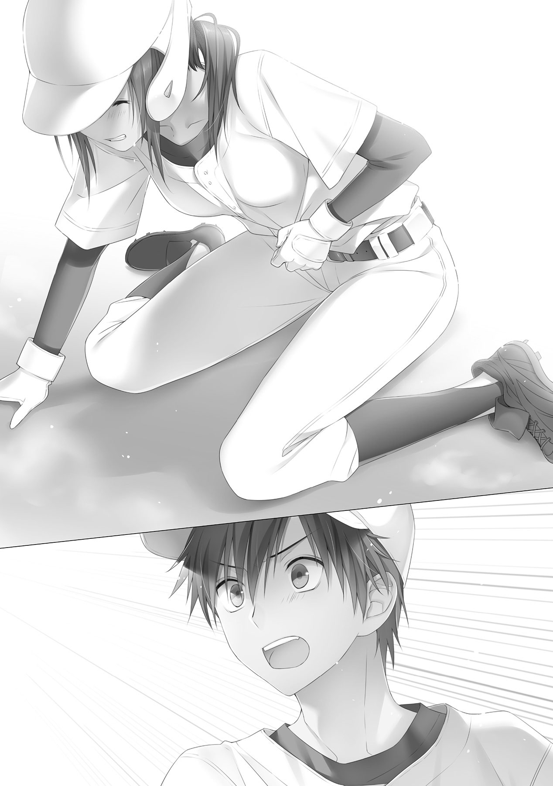
敬一は心配そうに声を荒げてくる。
ああもう、大丈夫だから顔覗き込むのをやめてよ。
そう叫びたかったが、痛みの余波で声が上手く出せない。やむをえず、ぐじぐじとユニフォームの袖で荒っぽく涙を拭い、顔を上げた。
「だ、大丈夫......」
搾り出したようなかすかな声で返事をする。
事実、痛みも次第に落ち着いてきていた。
「ご、ごめん......梶原......」
いつのまにか駆け寄っていた斎が、ぼそりと声をかけてきた。沙月は弱々しく笑って、手で応える。
それでも斎は、今にも泣きそうな顔を崩さない。やむをえず、沙月は鈍く残る痛みを堪えて立ち上がった。「本当に大丈夫かい？」と尋ねてきた審判に、小さく頷き、一塁に向けて歩き出す。
固唾をのんで行方を見守っていた観客から、暖かい拍手が送られてくる。腹の痛みは消えないが、いくぶんか収まったような気がする。声援の力というやつだろうか。
だが、沙月が元気よく一塁へと歩き出しても、斎の表情は変わらず、ずっと罪悪感にとらわれたような顔をしていた。
そして、その影響を引きずるように、三番の阿瀬にはストレートのフォアボール。ピンチの後にチャンスありとはよく言うが、まさしくその通りのノーアウト満塁。そして次のバッターは四番の司城。これ以上のチャンスは考えられない。
沙月は腹をかるく押さえながら、キャッチャーの新田がゆっくりとマウンドに歩み寄っていくのを見た。
この日、二回目のマウンドに登った新田敦耶は、珍しく憮然とした表情で斎を見つめていた。問い詰めるような、咎めるようなその視線に、斎はどんどん萎縮していく。
「斎、どうして指示通り投げなかったんだ」
声色こそ優しげだが、こもる感情はそうではない。斎はそれを感じているからこそ、何も言うことができない。
「ああ、べつにフォアボールは怒っていない。そのぐらいの動揺は予想していた。問題は、その前だよ」
こめかみに指をあて、思い出すようなしぐさを見せる新田。怯えた目を向ける斎に、ゆっくりと近づく。
「僕ははっきりと言ったはずだよな」
新田はぽん、と斎の肩に手を置いて、耳打ちするように呟いた。
「頭を狙え、って」
斎はびくりと体を震わし、いたたまれなさそうに俯いた。
「だって......頭は、危ないよ......」
おどおどと視線をそらし言い訳を述べる斎。新田はその両肩を引っつかみ、真正面から見据えた。
「だからだよ。斎、お前ほどのスピードの直球をもろに頭に食らえば、脳震盪は免れない。そうすれば、負傷退場になるだろ。向こうの頭脳たる梶原さえいなくなれば、僕らの勝ちは揺るがないんだ」
「でも、でも......やっぱり、わざとは......」
「死球だって配球だ」
なおも食い下がる斎を、新田は一刀の元に斬り捨てた。
黙りこくる斎を見て、ふう、と一つ息を吐き、いつものようににこやかな笑顔に戻る新田。斎には、それはもう不気味にしか映らない。
「......そうだな、お前は梶原と一番仲が良かったからな。投げるのがつらくなるのも、よくわかるよ」
斎が疑問を挟む間さえ与えず、新田はぴしゃりと言い放つ。
「だが、梶原が残っている以上、これ以上点をやるわけにはいかないんだ。わかるな、斎。ピッチャー交代だ、ファーストに回ってくれ」
言葉は優しくも有無を言わさぬ口調で、新田はそれだけを告げてマウンドを降りていく。
斎は歯がゆさから手をぎゅっと握り締める。降板が悔しいわけではない。
結局、最後まで言うことができなかったから、だ。
「わざとは......いけないよ......」
俯きながら斎はぽつりと呟くが、むなしく球場のアナウンスでかき消された。
『黒岡早良のシートの変更をお知らせいたします』
セカンドベース上で、タイムが終わるのをじっと待って佇んでいた沙月は、眉をひそめてアナウンスの続きを待った。
『ピッチャーの斎君がファースト。ファーストの清葉君に代わりまして、二番ピッチャー鷹津君。以上に代わります』
「鷹津？」
聞き覚えのない名前に、沙月は首をかしげた。
少なくとも、春大会前にはなかったその名前。ベンチから出てきたのは背番号20を背負った、小柄な男だった。
（付け焼き刃？）
一瞬脳裏に浮かんだそんな言葉を、慌てて否定した。そんな甘い考えでは、新田敦耶の手玉に取られてしまう。必ず、裏があるはずだ。
沙月は投球練習をじっと見守る。
珍しい左のサイドスロー。フォームはダイナミックだが、球速はそれほど感じない。コントロールタイプのピッチャーだろう。
見やすい右の司城なら確実に外野フライ以上を打てる。敬一は球筋は見にくいだろうけども、このスピードなら打てない道理はない。
どう悲観的に見ても、１点は固い状況。
プレイがかかり、ピッチャーがセットポジションに入る。沙月は、タッチアップのために足に力をこめた。
すべてが徒労に終わるとは、夢にも思わずに。
ピッチャーの鷹津が、投げ返されたボールを受け取りマウンド付近に転がすのを、沙月は呆然と見つめていた。頬を伝う汗が、気持ち悪い。だが、それすら拭うことができずに、屹立していた。
四番、五番、六番で、ノーアウト満塁。１点どころか、２，３点、大量点すら期待できる状況。誰が、三者連続三振なんていう結末を予想するだろうか。
我に返った沙月は、急いでベンチへと戻り、守備の準備をしていた敬一と司城を捕まえた。その形相に二人は驚き、慌てて謝ってくる。
「すまん、梶原！」
「......すまん」
「別に怒ってないから謝らないで。それより、どういう球投げてくるの？」
厳しい表情のまま、沙月は問うた。
「決め球は、落ちる球だ。リュウにとっては外に逃げるように、オレにとっては内に寄ってくるように落ちた」
「......シンカーね。いや、左投手だからスクリューか」
「あと、スライダーもあった。リュウには三球全部落ちる球みたいだったけど、オレはストレートとスライダーで追い込まれて、最後にストン、だった」
「同じ左で見にくい本摩くんはともかく、球の出所が見やすいはずの司城くんすら空振りするほどのスクリューか......そんな隠し球を、いつの間に」
「やっぱり、梶原の知らないやつか」
「ええ、きっと私がやめた後に入ったんでしょうね。全く、皮肉なことをしてくれる」
「皮肉？」
「鷹津くんの背負ってるあの番号、もともとは私のものよ」
司城の小さな呟きに沙月は答え、向こうのベンチで背を向けている背番号20を睨みつけた。
だが、それも一瞬。パンと頬を叩いて、今一度司城に向き直る。
「司城くん、打てそう？」
司城はしばし天を仰いで考え、いつも通りののんびりとした口調で、答える。
「ん、あと一打席ぐらい見れば多分」
「よし。じゃあ、本摩くん」
「お、おう？」
突然真摯な眼差しを向けられた敬一は、何がなんだかわからないままに頷いた。その様子に沙月は口元を緩めながら、ぽんと小さく肩を叩く。
「追加点くるまで、しっかり抑えるわよ。最悪、このまま点が取れなくても、完封すれば勝てるんだからね」
沙月は電光掲示板を指差す。先程は抑えられてしまったとはいえ、初回に１点を取っていて、今現在勝ち越しているのはこちらなのだ。
沙月は嬉しそうに不敵な笑みを浮かべて、二人の背中をとん、と押した。ベンチから駆け出していく二人を見ながら、沙月は監督に声をかけて、服を替えてくる旨を伝えた。
ベンチ裏のシャワー室のほうまで移動して、汗だくのアンダーシャツを脱いだ。汗を手早く拭いたところで、ふう、と息を吐く。
ピッチャーでもないのにここまで汗をかくということは、かなり緊張しているのだろう。
まだ三回だというのに、精神的な疲れは一試合ぶんを凌駕している気がする。
ゆっくりと先程ボールを当てられた箇所をさわった。その拍子にずきん、と鈍い痛みが走る。
「打撲ってところかな」
痛みに顔をしかめつつ、新しいアンダーシャツを着る。さっぱりとした肌触りが気持ちいい。疲れすら、吹き飛ばしてくれそうなほどに。
ここからが本番だ。力押しでいけない敬一の投球には、沙月のリードが不可欠となる。ナックルは魔球ではあるが無敵ではない。それを無敵と見せかけるのが、沙月の役目。
「よし」
ひとりごち、気合を入れる沙月。
颯爽とグラウンドへ向かおうとしたその時、鏡越しにちらと何かが映った。沙月がすさまじい形相でそちらを向くと、かたりと物音がした。
「......着替えを覗くにしては、タイミングが遅すぎたわね」
心のうちでは驚きながら、沙月は鼻で笑い、物音のした方に歩み寄る。次第に近づいてくる足音に、犯人は観念したように姿を現した。
「ご......ごめん。そういうつもりじゃ......なかっ......たんだ」
「斎くん？」
予想外の闖入者の姿に、沙月は目を丸くする。石井だと思ってた。
「......っ！ 見てないっ......からっ......」
疑問の表情をありありと浮かべる沙月に、斎はぶんぶんと手を振って言い訳してくる。
「どうしてこんなところに？ 黒岡早良にも専用のシャワー室あるでしょ」
いつまでたっても終わりそうのない斎の言い訳を打ち切るように、沙月が口を開く。
斎は用件を思い出したように、ぴくりと動きをとめ、しずしずと頭を下げてきた。
「......さっきは、ごめん」
一瞬沙月は何のことを言われてるのかわからなかった。「頭を上げて」と斎に近寄ったところで感じた鈍い腹の痛みで、斎がデッドボールのことをいってきているのだと悟った。
「謝ることじゃないでしょ。試合なんだからデッドボールなんてよくあることよ。斎くん、試合になるとコントロール悪かったしね」
昔を思い出し、沙月はくすくすと笑った。だが斎はにこりともせず、頭を上げようともしない。その様子に違和を感じた沙月は、笑いをとめて、黙りこくる。
「......あれは......あれは」
うわごとのように同じ言葉を繰り返していた斎は、やがて決意したように顔をあげて、言った。
「指示......だったんだ......」
「え？」
「頭、狙えって......いわれて......」
沙月の表情が、凍りついた。
「狙えっていわれた、って......誰に？」
聞かなくても答えはもう、わかっている。
「......新田、くん」
再び頭を下げ、謝りながら斎は予想通りの答えを言った。
「は、はは」
沙月の口から、思わず笑い声が漏れた。
不思議ではない。新田敦耶が勝ちを求めるのならば、一番邪魔なのは沙月だ。
だが、邪魔だからといって、それを力技で排除にかかるとは、どこまで堕ちてしまったのか。
私が憧れていたころの彼は、どこだ。
「梶原......？」
笑い続ける沙月を不審がり、斎が声をかけてくる。顔を手で押さえて、声をひそめ笑っていた沙月は、我に返る。
「ありがとう斎くん。わざわざ教えてくれて」
「え......あ......いや......」
「おかげで、この試合、絶対に負けるわけにはいかなくなった」
そうまでして勝ちたいのなら。そうまでしてでも、勝利が欲しいのなら、好きにやるがいい。
その上で、勝ってみせる。その上で、新田敦耶を抑えこんでみせる。
沙月は新たな使命感を芽生えさせ、斎をほっぽり、グラウンドへと戻っていく。その意識を、よりいっそう、新田敦耶に向けながら。
三回裏、黒岡早良シニア、八番ショートゴロ、九番三振、一番センターフライ。四回表、白倉柏シニア、七番三振、八番三振、九番サードフライ、と両チーム三者凡退を迎え、１対０のまま、試合が投手戦の様相を示してきた四回裏、そんな推察を嘲笑うかのように、状況に変化が訪れた。
『二番、ピッチャー、鷹津くん』
アナウンスにあわせて、左バッターボックスに入った鷹津を、沙月はまじまじと観察した。
身長はあまり高くない、体格がいいわけでもない。近くで見るとそれがよくわかった。球威が望めないからこそ、変化球を磨いたのだろう。
では、ピッチングはともかく、バッティングはどうなのだろうか。ピッチャーとはいえ、全く打てない人間をベンチに入れるとも思えない。油断は、できない。
様子を見るために、初球をアウトコース高めに要求する。
ずばりその通りに投じられた球を、鷹津はただじっと見送った。
きわどいコースに、刹那の逡巡の後、審判が首を振る。沙月は少し残念がりながら、敬一にボールを投げ返した。
「もうけもうけ」
バッターボックスでぐるぐるとバットを回しながら、鷹津は呟く。
「けったいな球ほおるのォ。見づらくてかなわんわ」
聞きなれない訛がかった言葉に、沙月がちらりと顔をうかがうと、ちょうど目線をおとしてきた鷹津と目が合った。沙月は慌てて目をそらす。
二球目、内角の真ん中に投じられた球も、鷹津は見送る。二球続けてきわどいコースだが、今度は審判の手が上がり、鷹津は天を仰いだ。
「もうちょい打ちやすい球放ってくれんかのォ？ わしはピッチャーじゃけぇ、近いところは怖いんじゃ」
先程のように呟くではなく、沙月に話しかけてくる鷹津。沙月は敬一に返球しながら、めんどくさそうに返事する。
「ずいぶん訛ってるわね、どこ？」
「おお、わしか？ わしは広島出身じゃ。......ってそれどうも関係ないよな」
「そりゃそうよ、時間稼ぎだもの」
突っぱねるような沙月の言葉に、鷹津は地団駄を踏む。顔を背けたところでサインを出し、コースを決める。インは苦手と言っていたが、鵜呑みにするわけにもいかないし、ノーアウトで長打が怖いこの状況、内角は危険が多い。
外角低めのサインに、敬一は頷き、モーションに入る。
「おもろい投げ方じゃのぉ」
投球動作を見て、鷹津はぽつりと呟く。
「そのぶん球の出所も、よう見える。まったく、ちぃたぁ信用してくれてもえぇやんか」
鷹津はボールを胸元まで呼び込み、強く上から叩きつけた。
白球は鋭い打球音を残して三遊間にバウンドしていく。サードの出足が遅れ、抜ける寸前のところでショートの石井が飛びつき捕球するが、ファーストには送球できなかった。
一塁を駆け抜けたところで、鷹津はふぅーっと息を吐き、大げさに胸をなでおろした。
対照的に沙月は唇を噛んだ。鷹津を抑えられなかったこともそうだが、ノーアウトでランナーを出してしまったことが、一番痛い。なるべく、新田の前にランナーを置きたくないのだ。
（いや、次でゲッツーを取れば、問題ない）
三番の斎がゆっくりとバッターボックスに入る。
沙月は気持ちを切り替えるように、ぶんぶんと頭を振った。
「梶原......」
先程のことを引きずっているのか、斎が申し訳なさそうに声をかけてくる。沙月はゆっくりマスクをかぶりながら、一方的に告げる。
「斎くん、今は試合中なの。しっかり集中して打たないと、自動的にアウトと思わせてもらうわよ」
それきり沙月はしゃがみこんだ。
斎は出かかった言葉を飲み込み、構える。
斎の立ち位置、グリップの握りなどから狙っているコースを推測する沙月。
どこに投げればうまく内野ゴロを打ってくれるか、それのみを考える。
ランナーの鷹津の足の速さを考えると、ゲッツーを狙うにはなるべく強めの打球がいい。セカンド正面に強めのゴロを打たせる。
沙月はど真ん中からボール一つ低めの場所に要求する。
一見危険に見えるコースだが、斎にとってはもっとも苦手なコースだ。よくこのコースの球をこすってゴロにしていた。
そして今回も、狙い通りのゴロを打たせた。鈍い金属音とともに沙月は口元をつり上げ、マスクを乱暴に外す。
「セカンド、ゲッツー！」
ボールを捕球する前に、叫ぶ。
それが、セカンドの焦りを誘った。
送球を急ぎ、腰を浮かせたまま捕球しようとしたセカンドの股下を、ボールが転々と抜けていった。
「な......！」
沙月は思わず絶句した。そして、もともと白倉柏は守備がまずいチームだったことを、ようやく思い出した。ショート石井とセンター司城以外は、決して上手いとは言えないのだ。
――欲張りすぎた。
舌打ちをしながら、セカンドのフォローに回る。センターの司城がバックアップをしたため、なんとかランナーは塁上釘付けにできた。
だが、ノーアウトで一、二塁。そしてバッターは四番の新田敦耶。考えられうる最悪の状況だ。鷹津の足が速いため、ワンヒットで同点。長打ならば逆転されてしまう。
それより、なにより、新田敦耶に打たれたくなかった。
沙月は覚悟を決め、マスクをかぶりなおす。新田は毎度お馴染みの笑顔で審判に挨拶し、そして沙月に話しかけてきた。
「さっきはすまなかったね、斎のコントロールが乱れて、さ」
「......よく言うわ」
「君も良く知ってるだろう。昔っからあいつピンチに弱くてね、困っちゃうよ」
「集中できないから黙って」
「スライダーが真ん中に入るクセも抜けないし......」
「黙れ」
沙月はすべての感情を殺して、冷たく言い放つ。言葉を切られた新田は冷やかすように「ひゅう」と口を鳴らしてバッターボックスに入った。
全神経を集中させて、新田敦耶のありとあらゆるデータを頭からひっぱりだす。どのコースは得意で、どのコースは苦手で、どのコースで三振したことがあるか。球種、調子、その日の天気、状況など、全てを網羅して最適の答えを導き出す。
一球目、外角に外す。予想通り、ぴくりとも動かない。
二球目、同じく外角。ボール一つ内に入れ、狙い通りストライクを取る。
三球目、真ん中高め、ボールぎみの球。高めを打つのが得意と豪語している新田は、迷いなく振ってくる。ただし、ストライクゾーンから少し外しているため、どれだけ打ってもファウルだ。
これでツーストライクワンボール。追い込んだ。だが慌てずに、四球目は見せ球のストレートを外角に放る。狙いからは少しずれたものの、スピード差に驚いたか、新田はあわててカットしてきた。
カウントは変わらず、五球目。ここが勝負どころ。沙月はひとつ息を吐いて、最後の答えを敬一に要求する。
内角低めギリギリいっぱい。天才打者・新田敦耶が最も苦手とするところ。そこにピンポイントで、ナックルを放り込めば、打てるはずがない。
マウンド上の敬一がゆっくりと頷き、セットポジションから投球に入る。
そのとき、新田が呟くように言葉を紡いだ。
「本当に、僕の教えた通りに攻めてくるね、君は」
沙月ははっとして、新田を見上げる。新田は、嗤っていた。
「一、二球目で球筋を見た。三球目でタイミングを合わせた。四球目はどうでもいいからカットした。そうとも知らない君は、勘違いしてこう思う。『ナックルを内角低めギリギリに投げれば、いくら新田敦耶でも打てない』ってね」
歪んだ口元だけが、沙月の目に映る。
敬一の手から離れた球が、ふらふらと揺れながら沙月のミットめがけて突き進んでくる。
「周知の弱点を放っておくほど、僕は低くない」
新田はまだ動かない。ギリギリまで球の変化を見極めてから、一気に振りぬく。ナックルの正しい打ち方だ。
沙月は、このときばかりは、コントロールミスを願った。
だが、敬一の球は、まさしく沙月の要求通りに内角低目へと吸い込まれていく。
「甘く見るな」
怒りすら感じる冷たい言葉と共に、すさまじいスピードで新田のバットが振りぬかれた。
打球は、尾を引く勢いでレフトスタンドへと飛んでいく。
沙月にはもはや、打球の行方を追う気力はなかった。
呆然と屹立したまま、鷹津、そして斎がホームインするのを見届ける沙月。最後に、もったいつけてゆっくりと回ってきた新田がホームに入るのを確認して、唇を噛む。これで１対３、１点リードから一転、２点ビハインド。
すれ違いざまに、新田がぽつりとささやきかけてきた。
「斎が謝りに来ただろう？」
はっとして顔を上げる。にやにやと、人あたりよく、装った笑顔が沙月の眼前にあった。
「対抗心にはやる心は、読みやすい。あの状況、僕ならシングル、同点でいいと考えるね。君の敗因は、感情のコントロールさ。あのときから全く成長していない、幻滅だ」
それだけ言って、新田は歓喜に包まれたベンチへと戻っていく。
その背中をじっと視線で追いながら、沙月は反芻した。
全く成長していない。
――私は成長していないのか。
幻滅だ。
――私は、負けたのか。
思わずこみあげてきたものを、必死にぐっと堪えた。
まだ試合中だ、試合に集中しないといけない、と、必死に繋ぎとめた。
だが、ひびの入ったガラスほど、もろいものはない。揺らぎ、震える心は、止まらない。離れた自信は、戻せない。
もう沙月には、自分が何をしたいのか、自分でわからなかった。
五番、六番に連打を浴びたところで、大会始まって以来、はじめて監督からタイムがかかり、マウンドに呼ばれた。
監督を含めた内野陣の皆が集結しているマウンドに、沙月は申し訳なさそうにとぼとぼと上がってきた。
そのまま顔を伏せ、皆の顔を見ようとしない。
否、見ることができなかったのだ。
見たら堪えているものがこぼれてしまいそうで、見ることができなかった。
いつもなら軽薄に口を開く石井も、皮肉を述べる阿瀬も、このときばかりは黙っていた。
敬一も、つらそうな沙月に何も言えずにいた。打たれたことは沙月一人の責任ではないのだ。ピッチャーである敬一にも、責任はある。
敬一だけではない、皆で背負うべきものなのだ。それなのに沙月は、一人で、たったひとりでそれを背負ってしまっている。悔しさに震える拳が、やるせなさで握り締められたその手が、なによりの証拠だった。
「......監督、交代をお願いします」
沈黙を破ったのは、沙月だった。俯いたまま、監督に訴える。
「交代？」
「私と近藤くんを交代。キャッチャーを阿瀬くんに......」
なおも俯いたまま、沙月は淡々と告げる。
敬一たちは絶句して何もいえない。だが、監督だけは特に慌てずに、口を開く。
「ふむ、どうしてだ？」
沙月の震える手が、びくりと止まった。
「......私、もう無理です。もう、なにもわからない。ボールを受けるのすら、怖いんです」
「梶原......」
ようやく呪縛から解かれたように、敬一が沙月に声をかける。
沙月はその声に反応して、顔を上げた。
その顔は、涙でぐじゃぐじゃだった。
「ごめん、本摩くん。私、勝てなかったよ。やっぱり、勝てなかった......」
流れる涙をそのままに、沙月はぽつぽつと言葉を紡ぐ。
黙って、敬一はその言葉を聞く。
「どうしてだろう、なんでだろう。あんなに努力したのに、すっごく頑張ったのに......やっぱり、勝てなかったよ............」
しゃくり上げながら、吐き出すように言葉を紡ぐ。
敬一は、黙ってその言葉を聞く。
「やっぱり、私は女だからなのかな。やっぱり、新田敦耶のいってたことが正しいのかな。だから、追い出されちゃったのかな............」
「やっぱりって、なんだ？」
黙っていられずに、とうとう敬一は口を開く。
沙月はびっくりしたように目を見開いた。
「やっぱり、ってなんだよ、梶原。やっぱり、ってあれか、最初から負けるつもりでやってたってことか？ 最初から、諦めてたのか？ はなから、勝つ気は無かったのか？」
「ちっ、ちが......」
「何が違うんだ！」
敬一は思わず叫んでいた。沙月だけでなく、マウンドにいた皆が萎縮する。
「ふざけるなよ、ああ、ふざけるなよ！ 『女だから』？ 性別は関係ないって怒ったのはどこのどいつだ！ 『新田敦耶が正しい』？ あんなことしておいて正しいはずがないだろ！ ......ああ、もう、そんなのはどうでもいい、一番むかつくのはここだ！」
敬一は沙月の肩を乱暴にひっつかむ。痛がっているが、そんなことはおかまいなしだ。
「何でお前、もう『勝つこと』を諦めてるんだよ!?」
そう、敬一が一番許せないのは、そこだった。チームの皆がまだ必死に頑張っていこうとしているのに、一人だけ諦めてしまっている沙月が、許せなかった。
「お前一人の都合でチームの勝ち負け決めてるんじゃねえ！ それじゃ、それじゃ......」
敬一はそこでぐっと息をのんで、しばしためらった後に言い放った。
「お前の一番嫌いな、あいつと同じじゃないか！」
「本摩くん......」
沙月はあっけにとられたように、敬一を見つめていた。
視線に気付き、恥ずかしそうに目の端を指ではじく。敬一の目にも、小さく涙が浮かんでいた。沙月を勝たせると約束しておきながら、負けたと思わせてしまった、己の不甲斐なさに。
「俺も、キャッチャーに戻る気はない」
阿瀬が腕を組んだまま、くるりと背を向ける。
「お前から、実力でポジションを奪い取るまではな」
それだけ言って、阿瀬はすたすたとファーストへ戻っていった。
呆然とする沙月に、今度は石井がハンカチを差し出しながら、話しかける。
「今のは新ちゃんなりの励ましかな。不器用なやつだよね、まったく」
ハンカチを受け取らない沙月に、石井はやれやれと肩をすくめ、敬一にそれを手渡してくる。
「しっかし、姫もしっかり女の子だったんだね。それを知れただけでも、実りあるタイムだったよ。ああ、それ新品だから安心して使っていいよ」
手をひらひらと振って去ろうとする石井。途中、慌てて引き返してきて、ぼうっとしていたセカンドとサードの首根っこを引っ張っていった。
監督は、かんらかんらと笑いながら、沙月に声をかける。
「梶原、お前は何と戦ってるんだい？」
「何って......」
「私には、個人と戦っているような気がしてならない」
鋭い監督の指摘。図星をつかれ、沙月は押し黙った。
「忘れてはいけないよ、梶原。お前は白倉柏シニアのキャッチャーなんだ。たった一人を相手にしているわけではなく、たった一人で戦っているわけでもない」
「......はい」
「私から言いたいことは、それだけだ」
監督はそういって、敬一の肩をポンと叩いてゆっくりとベンチへ戻っていった。
何で肩を叩かれたのかわからない敬一は、いまだ涙を流している沙月におたおたしながら、先程受け取ったハンカチを差し出す。
「と、とりあえず涙、拭いたほうがいいぞ」
「......あ、うん」
沙月はそこでようやく自分が泣いていることに気付いたらしく、恥ずかしそうにハンカチを受け取り、涙を拭った。
落ち着いた沙月は、小声で話しかけてくる。
「ごめん、私のせいで......」
様子から察するに、ピークは過ぎたもののまだダメージが残っているようだ。言葉にいつものような自信がこもっていない。
敬一は見たことのない沙月の態度に戸惑いながら、言葉を選びつつ声をかける。
「だから、梶原のせいじゃないって。というか誰のせいでもないんだよ、ああ、えっと、強いていうなら、チームのみんなのせいだ。いや、責任とかそういう問題でもないんだよな、くそ、なんて言ったらいいのかな......」
ああじゃないこうじゃないところころ意見を変える敬一。混乱がありありとあらわれるその表情に、沙月は思わず吹き出した。
くすくすと笑う沙月に気付き、敬一は不満そうな視線を向ける。
「......べつに、笑うところじゃないぞ」
「ご、ごめん。なんかその必死さがつぼに......」
そうしてしばらく沙月は声を押し殺し、体をくの字に曲げて笑っていた。敬一は憮然とした表情を作りながらも、笑いが止まるのをじっと待った。
やがて、笑うのを止めた沙月が顔を上げる。その表情に、不安の色はない。
「もう、大丈夫か？」
沙月はふるふると首を振った。
「まだ完璧じゃない。だから迷惑をかけるかもしれない」
「けど」と言葉を継ぎながら、沙月はにこりと笑った。いつものような、不敵な笑みだ。
「みんながいるから、だから大丈夫」
力強い視線に、敬一は頷く。
「じゃあ、構えてくれ。オレはただ、そこに投げ込むだけだ」
敬一は、グローブから放り投げたボールを、沙月の前でぱしりと掴んでみせた。
敬一にはああ言ったものの、沙月の心はまだ平静を取り戻しているわけではなかった。
冷静さを求められるリードを行なうにはまだ、時間が足りなかった。
七番バッターの名前が、アナウンスされるまで思い出せなかったぐらいだ。
ノーアウト一、二塁。とりあえず、長打だけは避けないと。
沙月はただそれだけの考えで、外角低目を要求する。そこは今のバッターが最も得意とするコースだということは、吹っ飛んでいた。
戸惑う沙月に影響されたように変化の甘くなったナックルが強打される。
痛烈な打球が三遊間へと飛んだ。
――抜ける！
沙月が顔をしかめ、マスクを弾き飛ばしたその瞬間、叫び声が響いた。
「サード入れ！」
ショートの石井が叫びながら、打球に向かって飛びつく。すんでのところで打球はグラブに収まり、そのまま起き上がることなくスナップで、サードへと送球した。
ランナーのスライディングで砂煙が舞い上がる。もうもうと立ち上がった煙の向こうで、審判が確かにアウトを宣告したのが沙月には見えた。
「よっしゃ！」
石井が珍しく喜びをあらわにグローブをパンと叩いた。素早く起き上がり、「ワンアウト！」とたからかに指を掲げてアピールする。皆もつられて、声を出し始めた。
「ワンアウト！」
沙月もつられて声を出していた。
ぐるりとグラウンドを見渡したところで、ちょうど石井と視線が合う。小さく手を振ってくる石井に、沙月は笑顔で応えてみせた。
――大丈夫。
ふう、と大きく息を吐いて、しゃがみこむ。
次は八番。大丈夫、今度は名前はわかる。弱点も覚えている。
だが、まだ沙月には周囲を見渡す余裕が生まれていない。バッターボックスの外側に構え、インコースを狙っているのが普段ならばわかったはずなのに、データだけでインコースを要求してしまった。
またも痛打された初球は、ぐんぐんとセンター方向に飛距離を伸ばす。若干レフト方向にスライスしながら飛んでいく打球。
沙月が祈るように打球の行方を追っていると、それが通じたように颯爽と走り寄る影が現れた。司城は打球に一直線に駆け、飛び込む。手先で位置を調節するその様は、まるで熟練の技のようだった。
ダイビングした体勢のまま、グローブをたかだかと掲げる司城。グラウンド中がわっと沸き、飛び出していたランナーは慌てて戻っていった。
司城は敬一までダイレクトに返球し、かつてない大声で叫ぶ。
「ツーアウト！」
沙月の気のせいでなければ、いつも仏頂面の司城が、笑いかけてくれたような気がした。
「ツーアウト！ ツーアウトッ！」
人差し指と小指を掲げて、沙月も負けじと大声で叫ぶ。
――みんながいる。
「ツーアウト！ もう大丈夫！」
ぽろりとでた言葉に、マウンドの敬一が大きく頷いた。
１対３、黒岡早良の２点リードで佳境の五回を迎える。白倉柏シニアのこの回の攻撃は、打順よく一番からだ。
石井は気合を入れてバッターボックスへと向かう。打席に入る直前に、キャッチャーをじっと睨みつけた。
（こいつが、姫を泣かせた不届きものか......）
そう考える石井の心のうちで、ひそかに燃えたぎるものがあった。
ピッチャーにバットのヘッドを向ける、独特の構えを取る石井。タイミングを見計らったように、新田が声をかけてきた。
「独特な構えだね」
声に驚いた石井は、構えを崩して新田に視線を送る。新田はにこりと笑いながら、さらに言葉を続ける。
「インコース打ちにくそうだけど、大丈夫かい？」
「......余計なお世話ってもんだよ、色男」
石井は吐き捨て、再度構える。大方、前もって言っておくことでインコースを意識させるのが目的なのだろう。
なにより、新田の馬鹿にしたような笑いが、気に食わなかった。沙月を泣かせたことともども、到底許せそうにない。
ぐっ、とバットを握る手に力がこもる。柄でもなく、大きいのを狙おうかという考えが、脳裏によぎる。
だが、そう考えることすら新田の手の内なのだということは、流石の石井も最後まで気付けなかった。
最後は外角へのスクリューにあえなく三振し、石井は悔しそうにバットを地面に叩きつけた。
「姫、ごめん」
沙月は力なく謝ってくる石井の頭を、軽くバットで小突いた。
ヘルメット越しとはいえ、痛いだろう。案の定、石井はわけがわからないという感じの表情を向けてくる。
「気負いすぎ。肩肘はりすぎて、バットの出方が変になってる。次の打席までに、修正しておくように」
つらつらと気付いた点を指摘するだけ指摘して、沙月は打席へと向かった。
新田のいる場所に行くことがすこし憚られたが、大丈夫だ。
大丈夫のはずだ。
打席に入り、ふうと息を吐く。予想に反して、新田は何も話しかけてこなかった。
ならば、と沙月は球筋を見切ることに集中する。
初球インローへのストレートがストライク、二球目スライダーがボール。三球目内角へのストレートがまたストライク。四球目は釣り球のストレートが高めに外れて、ボール。これでツーボールツーストライク。勝負をかけてくるなら、次だ。
沙月の心の声に応えるように、新田が声をかけてくる。
「見るね。スクリューを待ってるのか？」
「さて、どうかしら」
沙月は不敵に笑い、会話を一方的に打ち切った。新田がふっと鼻で笑い、サインを出す。
マウンド上の鷹津が頷き、ダイナミックなフォームから投じる。真ん中に来たように見えた球は、ホームベースの手前でぐぐっと外角低めに逃げるように落ちていく。
あらかじめスクリューが来ると読んでいた沙月が振ったバット。それの、さらに外にすとんと落ち、新田の構えたミットに吸い込まれた。
審判にアウトを宣告され、沙月は天を仰いだ。
全配球、読んでいたのに、と悔やみながらベンチへと引き下がる。
わかってても打てなかったことよりも、それ以上に、スクリューを狙った自分が腹立たしかった。まだ対抗心の残っている心を諌めるように、こんと頭をバットで小突く。
三番の阿瀬がライト前へのヒットで出塁するも、頼みの司城はスクリューを打ち上げてレフトフライ。反撃の兆しはまだまだ見えてこない。
沙月たちの背後に、ゆっくりと、だが確実に、敗北の足音が近づいてきていた。
五回裏、黒岡早良シニアはその牙を納めようとはしなかった。
一番の凡退後、二番鷹津がクリーンヒット、三番の斎が送りバントでツーアウトながら二塁となって。
そして、四番の新田を迎えようとしていた。
沙月は再びタイムをとって、マウンド上の敬一に駆け寄る。
「敬遠するか？」
近寄るや否やの敬一の提案に、沙月は表情を曇らせた。
確かにそれが一番適切なのは間違いない。それは沙月だってわかっている。
けれども、沙月の心の中には敬遠を拒む気持ちがあった。敬一も同じようで、提案はするものの苦々しく顔をしかめている。
「ちょっといいか」
二人がどうしたものかと悩んでいると、いつのまにか、司城がセンターからマウンドまで寄ってきていた。
一様に驚きの表情を浮かべて驚く二人に、司城はいつもののんびりとした調子で話しかける。
「二人とも、あいつをどうやって抑えようかで、悩んでいるんだろう？」
表面上の相談は違うが、心のうちではそう思っていたので、またしても二人は同じようにばつの悪そうな表情を作る。
司城は、かすかに笑みを浮かべ、そして言った。
「ようは、あいつを抑えればいいんだろ？」
「......そうよ、でもそんな簡単にはいかないのは、司城くんにもわかってるでしょう？」
「梶原、ランナー気にしなくてもいいのか？」
「まあ、抑えられるんなら」
発言の意図がつかめずに、いぶかしむ沙月をよそに、司城は「よし」と頷いた。
「敬一、ピッチャーかわってくれ」
「え？」
思わぬ発言に、敬一は素っ頓狂な声を上げる。
「どういうこと？」
沙月は説明不足に不満たらたらな表情を向けながら、その真意を問うた。
いつにない強引さでボールを敬一から奪い取った司城は、ストレートの握りを沙月に見せ、答える。
「振りかぶって投げる」
「は？」
今度は沙月が素っ頓狂な声を上げた。発言の意味をよく考え、やがて、おそるおそるといったかたちで司城に問いかける。
「もしかして、今までは本気で投げてなかった......とか？」
「ああ」
司城はけろりと肯定した。沙月は絶句し、敬一を見る。敬一も知らない知らないと手を振り首を振った。
「新だと捕れないからな。すっかり投げ方忘れてたけど、さっきの返球で思い出した」
さっきの返球とは、外野の深いところから直で敬一に投げ返したやつのことだろう。
『阿瀬には取れないから投げなかった』という発言に、沙月も敬一も複雑そうな表情で納得した。申し訳なさそうに、ちらりとファーストをのぞきみる。伸脚をしている阿瀬と視線が合い、すぐさま目をそらした。
知らぬが仏。いや、投球を見れば気付くか。
「梶原、あの新田というバッター、比較的ストレートのほうが苦手だろう？」
「え、あ、うん。ボール引き込んで打つバッターは、差し込まれるのを怖がるから」
「リュウ、それでもさっきは打たれたんだぞ、大丈夫なのか？」
「ああ、打たれない」
敬一の問いかけに、司城は自信を持って頷いた。
「梶原、ここはリュウに任せてみないか」
「......でも」
「スピード差もあるんだ。さらに戸惑ってくれるかもしれないだろ。大丈夫、リュウは言ったことはやってみせるやつだ」
だが、沙月はなかなか頷けない。ここまで言うのだから、その威力には相当の自信があるのだろう。
気になるのは、コントロールの悪さだ。肝心のストライクが入らなければ意味がない。ワイルドピッチ連発でダメ押しなんてオチはなるべく避けたかった。
敬一で抑える手立てを考えていただけに、沙月としてはなかなか納得することが出来なかった。
そんな沙月の心を読んだかのように、敬一がふざけ気味に聞いてくる。
「それとも、捕る自信がないか？」
かちん、ときた。
沙月はくるりと球審のほうに振り向いて、アナウンスの必要がないほど大声で叫ぶ。
「シート変更お願いします！ センター司城をピッチャー、ピッチャー本摩をショート、ショート石井をセンターに！」
「そうこなくっちゃ」
売り言葉に買い言葉といったかたちでポジション変更を宣告した沙月に、敬一はしてやったりと笑いかけた。
沙月はやってしまった、と小さく首を振った後、ふっきれたように敬一に怒鳴りかける。
「うるさい！ さっさとショートに行け！」
おっかないと去っていく敬一。沙月はふう、と息を吐いて、今一度司城に向き直る。泰然自若に佇むのっぽに、諦めたようにボールを受け渡す。
「......サインは変わらずでいいのよね？」
「ひとつ、試してみたいものがある」
「何？」
そう言って、司城はストレートの持ち方からさらに人差し指と中指を開き、その間にボールを挟んだ。
「それって......フォーク？」
司城は「ああ」と頷いた。そのまま中空に向かって、ぽーんと放ってみせる。まさしくフォークのように、回転数の抑えられた硬球がグローブに落下した。
「このまえの佐々木のを見て、覚えた。多分、落ちる」
「......ときどきね、司城くんがなんでこのチームにいるのか不思議に思うわ」
沙月はそれ以上何も言わずに、頭を抑えてふらふらとマウンドを後にする。
その後ろ姿に、司城は声をかける。
「梶原、おれはお前に感謝してるんだ。このチームを、ここまで引っ張ってきてくれて、ありがとう」
「え？」
沙月は思わず振り返った。
「些細だが、まずはあいつの三振で恩返しさせてもらう」
いつもとは違う、真摯な眼差しを向けてくる司城。沙月はただ、こくこくと頷くことしかできなかった。
投球練習はいつも通り振りかぶらずに行なってカムフラージュした。わざわざ脅威を前もって教えてやる必要はない。
「忙しいチームだね、まったく」
打席に入るや否や、新田は度重なるポジション変更に苦言を呈してきた。
「それだけあなたを警戒しているってことよ、光栄に思いなさい」
「恐悦至極。油断してくれたほうが嬉しいんだけどね」
軽口を叩きながら、余裕そうに構えをとる新田。
司城の全力が未知数な以上、とりあえず初球は様子を見たほうが賢明だろう、と考えた沙月は、高めに外すようにサインを出す。
司城は頷き、ランナーがいるのもよそに、がばっと振りかぶった。
どよめきがグラウンドに走り、セカンドランナーはするするとサードを窺う。バッターボックスの新田は常識外れのワインドアップに「はは」と小さく笑っていた。
沙月は中腰になり、来るべき球に備える。
司城は豪快なワインドアップモーションから、腕を垂直に振り下ろす。
刹那。
暴風が、マウンドからベースまで、一直線に吹きぬけた。
どぱぁん、というおおよそ聞いたことのない捕球音が、球場に鳴り響く。
――手を持っていかれるかと思った。
沙月はミットの中を覗き見て、ボールがちゃんとおさまっているのを確認する。
審判のボールというコールを聞いて、新田が浮かべていた笑いが、ひきつったものに変わった。
しん、と静まり返っていた球場がどよめきにつつまれる。
正直、沙月自身も驚きでいっぱいだった。ランナーは三塁に達したようだが、そんなことはどうでもいい。
当の本人の司城は、全力投球の余韻で落下した帽子を軽く拾い上げ、かぶりなおした。沙月からの返球を受け取り、頭を屈めてサインを確認してくる。
新田はひきつった笑いを浮かべながら、構えなおす。
球の威力はわかった。次はストライクに放れるコントロールがあるかどうか。
沙月はど真ん中に要求する。司城は一も二もなく頷き、モーションに入る。ワインドアップとはいえ、流石にサードランナーはホームスチールまではしてこない。
これで、バッターに集中できる。
否。
ボールに、集中できる。
再び、暴風が過ぎ去った。
見送った新田の顔は、今度こそ完全に驚きに支配されていた。新田だけでなく、グラウンド上の全員、司城と沙月を除いた全員の表情が驚愕の色を帯びていた。
審判が思い出したようにストライクを宣告してくる。すこし浮いたものの、真ん中高めのストライクだ。
（１４０、いや、１５０近く出てる......）
沙月は返球しながら、今の球を分析した。
正確にスピードガンで測ったわけじゃないが、そのぐらい出ていることは感覚でわかる。冷静に分析してみればみるほど、ぞっとしない。そりゃあ阿瀬には投げられないだろう。沙月ですら、捕球するのがやっとなのだ。
だが、その一方で納得できることもあった。どうりで、今までの手加減投球のときも、スピードの割に球質が重いと思ったわけだ。本来のスピードはこちらなのだから。
懸案だったコントロールも、むしろ良くなっているような気がする。
司城はゆっくりと帽子を拾い、ビデオの巻き戻しのように沙月にサインを要求してくる。
「なんだ......これ、なんだ......？」
うわごとのように呟く新田。バットを一握り短く持ち、こじんまりとした構えを取る。予想だにしていなかったスピードに、完全に腰が引けていた。
三球目、暴風はインコースへと吸い込まれていき、新田は思わず身を引いた。
だが、判定はストライク、しかもボール一つ以上余裕のコースだ。
なまじ敬一の遅い球に慣れていたから、余計早く感じるのだろう。もはやストレートだけで打ち取れる。
だが、司城は最後の球に頑なにフォークを要求してきた。覚えたての変化球を投げてみたいのか。
それとも、完全勝利を手にしたいのか。
沙月はにやりと不敵に笑い、フォークのサインを出した。
司城が振りかぶったところで、完全に腰の引けた新田に小さく呟いてみせる。
「次の球は遅いわよ。打てるものなら打ってみなさい」
返事こそないが、その声はきちんと新田に届いたようで、バットを持つ手に力がこもったのがわかった。
先程までの暴風よりはいくぶんか遅い、それにしたって中学を凌駕するレベルの速度で白球が迫る。
新田もこの速度なら打てると確信したのだろう、スイング動作に入る。
外角低めに投じられた球を、完璧に捉えたと確信したのだろう。その口元が小さく歪む。
ふっとそこから球が消えるとは、思ってもいなかったのだろう。その口元が、驚愕に揺れた。
「......バカ、な」
こまのようにくるくると回転し、尻餅をついた新田に、ワンバウンド後にキャッチした球を握りタッチする沙月。審判の「アウト！」という叫び声を聞いて、新田は我に返り、慌てて沙月に話しかけてきた。
「なんだ、あいつは！ むちゃくちゃだ！ 初回は、あんなんじゃなかっただろ？」
驚愕の表情を隠さずに問いかけてくる新田に、沙月は不敵に笑いかけた。
「うちの隠し球、だからね」
もっとも、チームの誰も知らなかったんだけど。という台詞は飲み込んだ。
新田は悔しそうに歯噛みし、沙月にのみ聞こえる声で吐き捨てる。
「......僕を抑えたからっていい気になるなよ。うちがリードしている状況は変わらないんだ。鷹津を打たないかぎり、お前たちに勝ちはない」
「............」
沙月は応えず、無言でベンチに引き上げた。
そう、新田敦耶を抑えたからといって、試合に勝ったわけじゃない。多少溜飲は下がったが、試合に勝たなければ本当の勝利とは言えないのだ。
そのためには、なんとか、なんとしても、あの鷹津を打ち砕かなければならない。
みんなが私を勝たせてくれるというのなら。
私はみんなを勝たせなければならない。
この勢いに乗って、なんとかしたい。
なんとか、しないと。
司城・沙月のバッテリーは、六回裏もフォアボール一個許しただけで他はすべて三振と完璧な内容で流れを作ろうと奮戦する。
だが、そんな沙月の願いを断ち切るのは、やはり新田敦耶のリードだった。
技巧派投手・鷹津を巧みにリードし、白倉柏シニアに付け入る隙すら与えない。
六回表は五番の敬一を含む三人が、凡打であえなく終了してしまった。
反撃の糸口すらつかめないまま、最終回を迎える。この表の攻撃で最低でも同点にしなければ、白倉柏シニアの負けだ。
誰が言わずとも、皆それを理解しているようで、ストライクコール一つでベンチの雰囲気がどんどん沈んでいくのが、沙月には如実にわかった。
皆、ベンチから身を乗り出して声援を送っているが、空元気の感が否めない。一球ごとに増していく絶望を忘れるために、やけくそに叫んでいるような、そんな感じだ。
沙月はベンチの後ろでじっと座っているからこそ、それがよくわかった。
八番がサードゴロに終わる。これで、ワンアウト。あと二人。
九番がファウルフライを打ち上げる。これで、ツーアウト。あと一人。
あと一人で、夏が終わる。
そう考えると、皆の意識はよりいっそう悲壮に包まれた。普段は表情を変えない司城ですら、神妙な面持ちを作っている。
「おーいおい、暗いよきみたち。僕の応援しっかりしてくれよなー」
そんな空気を吹き飛ばすかのような明るい声。
がらにもなく緊張したのだろうか、手袋を忘れた石井がバッターボックスからベンチに戻ってきたのだ。飄々とした表情で、椅子にひっかけていた手袋を拾い上げる。
「姫、二番っしょ。ネクストバッターズサークルはいらないとダメだよー」
手袋を拾いがてら、手帳に目を走らせていた沙月に石井が軽薄に話しかけてくる。
だが、沙月は視線を上げるだけで、何も言わなかった。
そのおかしな様子に、石井はぴんと勘を働かせ、敬一を手招きする。
「な、なんだよ？」
「姫、緊張してるみたいだからほぐしてあげて」
迷惑そうな表情で寄ってきた敬一に、石井は耳打ちする。
敬一は慌てて石井に耳打ちを返した。
「何でオレが！」
声が大きかったため、もはや耳打ちにすらなっていない。石井はムキになる敬一の様子ににやにやと笑みを浮かべながら、すっとベンチから抜け出る。
「みなまで言わせるなっての。そんじゃ、僕バッターだからいってくるよーん」
ひらひらと手を振りながら、石井はバットを拾い上げ、バッターボックスへと向かった。
ベンチで誰かしらを茶化せば緊張をごまかせるかと思っていたのだが、そんな簡単な話ではないようだ。
石井は、必死で震える手を抑えながら、打席に入った。なるたけキャッチャーのほうに視線を向けないようにして、足場を慣らす。
だが、そんな石井の気遣いを嘲笑うかのように、新田は声をかけてきた。
「とうとうあと一人だ。緊張してるんじゃないかい？」
「僕は常日頃、緊張感のない男って言われてるからねー」
石井は新田に見えないように顔をしかめながらも、飄々と返事をする。
くぐもった笑い声に、思わず石井が振り返ると、新田が手を指差してきた。
「手、震えてるよ」
「なに？」
石井はぎくりとして、慌てて手を凝視する。
意識的に抑え込んでいるから、震えているはずがない。だが、慌てたその様子で緊張していることが看破されてしまった。
石井が非難するように強く睨みつけても、新田はにやにやといやらしい笑みを浮かべて対応してくるだけだ。
「はじめての決勝戦、しかもラストバッターともなるとしょうがないさ。よく頑張ったと、素直にそう思うよ」
「まだ終わっちゃいねーよ」
笑みも浮かべずに、石井は構えに入る。バットのヘッドを投手に向ける独特のフォーム。
「本当、独特だね」
新田は呆れたように呟いた。
そう、独特だ。
この独特なフォームを、ほとんどのチームは認めてくれなかった。どこに行っても、フォームを見せただけで矯正を強要された。
それを何も言わずに受け入れてくれたのは、この白倉柏シニアだけだ。「野球をやる」ということの楽しみを知れたのは、このチームにいたからだ。
（まだまだ、僕もこのチームで野球がやりたいからね）
石井は心の中でひとりごちる。
にやりと、いつものような余裕ある笑みがこぼれる。
気付けば、手の震えは意識せずとも収まっていた。
一球目のボール球は見逃し、二球目のストライクゾーンのボールは小さくカットした。三球目のきわどい球はボールと判定され、しびれをきらして投球された四球目の宝刀スクリューにも食らいついていってファウルにする。
しつこく、うざったくを日常・野球問わずのモットーに。
五球目、六球目と続いたスクリューにも根性で食らいついていく。投球数が増えている分、どんどん変化やコースが甘くなっていることを石井ははっきりと感じていた。
一番打者の鉄則は、球数を多く放らせること。
まさしく、それが功を奏したのだ。
（そして、このフォームを小馬鹿にしてくれた借りは、きっちりこのフォームで返さないとな）
決意を秘め、七球目も同様に放られたスクリューに素直にバットを出す。
ボールが真芯に乗るように、ちょこんと差し出されたバットに変化の甘いスクリューが乗っかり、ふらふらとセカンドの頭上を越えてライトの前へと落ちていった。
わあっ、と湧いた歓声を聞いて、沙月はよりいっそう気分を滅入らせ、思わず、ベンチ裏に逃げ込んでしまった。
グラウンドのほうに背を向け、もはや視線を向けようともしない。
「梶原、石井が出たぞ！ 梶原！」
ひょっこりと敬一が姿を現した。だが沙月は、嬉しそうな敬一の言葉にも、耳を貸さないふりをして、手帳を広げて、それに見入っているポーズをとった。
沙月だって、本当は飛び跳ねて喜びたいのだ。
次のバッターが、自分でないのなら。
「......梶原？ どうしたんだ？」
ぶるぶると震える手に気付いたか、敬一の声が心配そうな声色に変わる。
――なんでもない。
そう言いたかったのに、緊張からか上手く声が出ない。どんどん手帳に顔をうずめていく沙月を、敬一がじっと覗き込む。
手帳の隙間からまじまじと顔を見てきた後、何を思ったか敬一はぴとりと手のひらを沙月の額に当ててきた。
沙月はあわててそれを跳ねのける。その拍子で手帳も彼方に吹っ飛んでいった。
「なっ、ななっなっ、なにするのよ!?」
「何って......顔真っ赤で熱がありそうだったから......」
悪気なさそうにぽりぽりと頬をかきながら敬一は答える。
「特に熱はなさそうだし、早く打席に行けよ。着替えてるって言って時間稼いでるけど、そう長くはもたないぞ」
「いきたくない」
「いきたくないか、そうか......ってはあ!?」
敬一は驚きのあまり、一度沙月の発言に乗っかって、その上でさらに驚いた。憮然とした表情で、沙月に問いかける。
「理由。何でだよ。風邪とかじゃないだろ、明らかに。怪我でもしたか？」
「.........の」
敬一にも聞こえないほど小さな声で、沙月はぼそぼそと呟く。
「聞こえない」
憮然とした表情を崩さない敬一に、沙月はいらだたしそうにそわそわし始めた。だが、呟きの声量は変わらず、敬一は何度も同じ言葉を繰り返す。
そんな問答を四、五回繰り返したところで、限界が来たか、沙月が唐突に大声で叫んだ。敬一の耳元で。
「怖いのよ！」
予想していなかった大声に、敬一はひっくり返った。尻餅をついた敬一を、緊張から顔を真っ赤に染めた沙月が見下ろしていた。
よくよく見てみれば、手は震え、足にもそれが波及している。明らかに、緊張している。
「怖いって、何が？」
叫ばれたほうの耳に指を突っ込みながら、敬一は一応聞いてみた。沙月はうっ、と押し黙ったが、やがて観念したように、今度は標準の声量でぽつりといった。
「私でみんなの夏が終わっちゃうのが、怖いのよ......」
「............」
敬一は、絶句した。いや、呆れた。
「な、何よその心底呆れたような顔は！」
「心底呆れたような、じゃなくて、心底呆れてるんだよ。じゃあお前、今まで試合に出てなくて、いきなり代打で出されたやつにその重荷押し付けるのか？」
「う......」
もっともな意見を浴びて、沙月は言葉に詰まった。敬一はゆっくりと立ち上がりながら、帽子をとってめんどくさそうに頭をかく。
「お前さ、ほんと極端に視野狭窄というかなんというか、時々とんでもなく馬鹿だよな」
思わずかっと反論しかけた沙月を手で制して、敬一は言葉を続ける。
「ここでホームラン打ってみたら、どうなる？」
「......同点になる？」
「だから馬鹿なんだって」
「もう、本摩くん馬鹿馬鹿うるさい！」
「だからって殴るな、こら！」
軽く涙ぐみ、ぽかぽかと殴ってくる沙月。
緊張のあまり、まったく頭が回っていないようだ。いつものような聡明さは完全に消え、幼児退行している。
手間のかかる子供をなだめながら、敬一はさらに言葉を継いだ。
「いいか、ここでホームランを打つとだな、お前がヒーローになるんだぞ？」
「私が、ヒーローに？」
ヒーローという言葉に、沙月の動きがぴたりと止まる。
「そうだよ、この状況を考えれば、逆転打より同点打のほうが価値でかいのはわかるだろ」
「それぐらいは、わかるけど......」
少し落ち着きを取り戻した沙月の背中を、敬一はぽんとグラウンドに向けて押す。
つんのめりながらも沙月がこちらを振り向く。
どこかの誰かさんのように不敵な笑みを浮かべて、敬一はグラウンドを指差した。
「女だからいつもヒロインってのは納得いかないだろ？ だから、一度くらいヒーローになってこい、そら、行け！」
とたん、沙月は束縛から解き放たれたように走り出した。
ベンチ裏から姿を消したのを見計らって、敬一はふうと大きくため息をつく。
まさか、いつもはあれだけ冷静沈着に振る舞っている梶原沙月が、あそこまで寸前に弱い緊張しいだとは誰が思うだろうか。思わぬところに弱点があるものだ。敬一は、もう一度大きくため息をついた。
「ラブラブだな」
その息にあわせるように、不気味な声と共に阿瀬が姿を現す。
「ラブラブだ」
続いて、逆方向から司城の同意の声。いつの間に回りこんだんだ。
敬一はもう一度大きなため息をついて、口を開いた。
「うるせえだまれうっとうしい、悔しかったらお前ら何とかしてみせろ」
「無理だな」
「無理だ」
「......お前らはもうちょっと緊張しような」
緊張感のかけらもない受け答えに、敬一は呆れながらぽつりと呟いた。
正確には、敬一と沙月のやりとりを見て、二人は緊張を緩和していたのだが、それは敬一の知る由もなかった。
敬一に背中を押されるがままに走ってベンチ裏から出てきたはいいものの、沙月の不安は消えているわけではなかった。
無理もない、この大会が始まってから、沙月はほとんどヒットを打っていないのだ。打席中に考え込んで三振もしくはフォアボールがほとんど。送りバントは確実に決められるからこそ、二番に起用されたものの、打率で考えれば及第点以下だった。
バットを取り出しながら、大きく息を吐く。
打てばヒーローだ。ホームランを打てばヒーローだ。
敬一に言われたことを反芻する。だが、それと同時にむくむくと嫌な感情も持ち上がってくる。
打てなければ負けだ。打てなかったら、夏が終わる。
思わず、ぶるっと身が震えた。
『二番、キャッチャー、梶原さん』
アナウンスが鳴り響き、観客席から歓声が飛ぶ。
だが、沙月はベンチの外に踏み出すことができなかった。
打てなかったら、終わってしまう。
そう考えてしまったら、また、踏み出せなくなってしまった。
「梶原」
ベンチのふちに足をかけたまま動かない沙月に、監督が話しかけた。
沙月はびくりと体を揺らし、そして振り向いた。
「どうして、ピンチの次にチャンスありというか、知ってるか？」
「......？」
質問の意図がわからず、沙月は首をひねる。監督はにこやかに笑いながら、言葉を続けた。
「ピンチというのは、相手にとってのチャンスだ。そこを抑えきるということは、相手の勢いを完全に殺し、選手に悔恨を植えつける。相手だって人間だ、潰したチャンスを取り戻そうとムキになれば、それだけプレイも甘くなってミスも出る。だからこそ、よくピンチの後にチャンスが訪れるんだ」
「はあ」
気のない返事を返す沙月。だが、監督は口を閉ざさない。
「心理的なものは、おうおうにして多大な影響を及ぼす。左バッターへの苦手意識、ランナーを背負うことへの恐怖心。一番身近に考えるなら、デッドボールを食らったバッターは、その日、内角球に弱くなる、とかな」
ふと、沙月は思い出したように服越しに腹をさわった。痛みこそほとんど消えたが、迫るボールの音は明確に覚えている。
先の打席も、ストライクを取られた球はすべて内角だったのではないか。思い出し、考え込む沙月に監督はさらに言葉を続けた。
「あのキャッチャーと、お前の違いはそこだ。心理重視か、データ重視か。どっちが正しくて、どっちが間違っているというわけじゃない。ただ、今は、それを知っていることが重要なんだ」
そういって、監督は立ち上がり、沙月の肩にぽんと手を置く。
「考えすぎるな。打った、打てないは些細なことだ。今は何より、この雰囲気を、楽しめ」
「......はい！」
優しい監督の言葉に、沙月は力強く頷き、バッターボックスに走り出す。その足取りから、震えはもう取り払われていた。
遅れたことを審判にわびて、バッターボックスに入る。
「ほんと遅延行為で訴えたいよ」
マスク越しに悪態をついてくる新田を、沙月は何も言わずに余裕そうな視線を向ける。もちろん沙月に余裕なんてない。その態度は虚勢だが、新田をいらだたせる効果はあったようだ。それきり話しかけてこなくなった。
ツーアウトランナー一塁、点差は２点。この状況で相手が一番嫌がることは、ランナーを溜めること。沙月に借りを感じている新田は、力づくでも抑えにくるだろう。
前の打席のデータを鑑みて、初球は内角ストレート。デッドボールを思い出し、仰け反る沙月を見て溜飲を下げようとするはずだ。
頭の端に浮かんでくる「でも」や「もし」を封殺し、狙いをひとつに絞る。
いつものような、打席の中での迷いはない。
すでに見慣れたダイナミックなフォームにあわせて、素直にバットを振り出した。
「ヒロインは、ヒーローにはなりそこねたな」
ベンチ裏から様子を見ていた阿瀬は、一塁を回ったところで止まった沙月を見て、くくっとくぐもった笑い声をあげた。
「じゃあ、俺がヒーローになってくるとするか」
そう言って、バットを勢いよく取り出し、ぶんぶんと片手で振り回しながらバッターボックスへと向かう。その自信に満ちた振る舞いに、敬一は不思議に思わずにはいられず、声をかけてしまった。
「おい、新。どうしてお前そんなに自信満々なんだよ」
「あん？ そりゃお前、あれだよ」
バットを肩に担いで、阿瀬はしばしうんうんと唸り始める。やがて、思い出したようにその名前を挙げた。
「『宮城の魔神』佐々木......和樹だっけか？ あの鷹津ってピッチャー、佐々木より球遅いし変化もしょぼいだろ。打てない理由がない」
阿瀬は当たり前のように告げる。その言葉に敬一はあっけにとられ、何も言えないでいると、アナウンスがかかった。
『三番、ファースト、阿瀬君』
「さて、一発おっきいのでも打ってくるか！」
ぶんぶんバットを振り回しながら、阿瀬はバッターボックスに歩いていった。唖然としていた敬一は、ネクストバッターズサークルに向かおうとしていた司城を捕まえて、話しかける。
「あいつ、そんな単純な理由で打ってるのか？」
「まあ、新だからな」
のんびりとした調子で言い放たれた、さりげなくひどい言葉にしかし敬一は納得してしまった。
「だけど、敬一。新の言ってることはもっともなんだ。みなキャッチャーに惑わされて気付いていないが、あの鷹津というピッチャーは佐々木よりも劣る。佐々木を打ち砕いたおれたちに打てない理由はない」
「とはいえ、オレたち、完全に抑え込まれてるんだぞ」
「だが、今は打ってる」
敬一はちらりとグラウンドを見る。初球を余裕もって見逃した阿瀬が、ぐるんぐるんとバットを回していた。
「新が続けば、おれも続く。お前も続けば、それで逆転しているさ。ヒーローになるのは、誰だろうな？」
司城は楽しそうに呟きながら、ネクストバッターズサークルへと歩いていく。
それに合わせるように、軽快な打球音が、グラウンドに響き渡った。
沙月はセカンドベース上でぱんぱんと両手を叩き、ヒットを放った阿瀬を労う。当たりが良すぎた分ランナーを帰すことはできなかったが、これで満塁。そして打席には四番の司城だ。
阿瀬は自分で決められなかったことを悔しがり、一塁ベース上で地団駄を踏んでいた。やけくそとばかりに、叫ぶ。
「リュウ！ 決めちまえ！」
ゆっくりと右打席に入った司城は、口で応えずに、はっきりと頷いた。その泰然とした構えには、すでに貫禄すらただよっている。
対照的に、新田・鷹津の黒岡早良バッテリーは完全に浮き足立っていた。マウンド上で会話をかわすその姿に、余裕がない。突然痛打されはじめたのが、よほど予想外だったのだろう。新田の表情にいつものような笑みはなく、追い詰められ、焦りの表情をまざまざと浮かべていた。
それを見ているだけで、多少は溜飲が下がったが、やはり勝たなければ意味はない。そのために、自分はなんとしてもホームインしなければならない、と、沙月は強く己の役目を意識していた。サードランナーの石井が生還して１点差、セカンドの沙月が還れば、同点なのだ。
なんとしても、そこまではこぎつけなければならない。
そして司城は言っていた。
二打席前の、三振したそのときに。「打つにはあと一打席かかる」と、そう言っていた。
今こそその、打つべき打席なのだ。必ず打つであろう打席なのだ。
司城龍宏は、言ったことは必ずやり遂げる。
だからこそ沙月は、ベンチの監督に向けて、こっそりとサインを出した。
それに気付いた監督が、了承とばかりに帽子のつばを押さえた。体のあちこちを触って、やがて両手をパンパンと叩く。
カムフラージュをこめたブロックサイン、意味は『初球ヒットエンドラン』だ。
今までの打席はすべて初球からスクリューを投げてきているのは、沙月も司城も承知だった。三打席目もおそらくそれで入ってくるだろうし、そうじゃなかったらそれこそ長打が期待できる。
司城がスクリューを打ってくれると、信じて、の作戦。
サインを受け取った司城は、セカンドの沙月にちらりと視線をやり、小さく頷きかけてきた。
そこでちょうどタイムが終わり、新田がホームベースへと戻っていく。その間に、サードの石井とファーストの阿瀬にもコンタクトをとって、作戦を再確認する。
一度しか使えない作戦。しかも司城が空振りしたらその時点でおしまいだ。沙月はぶるりと身を震わした。緊張からではない、武者震いというやつだろう。
さっきまで打席に立つことにびくびくしていたとは思えないほどに、沙月の気分は高揚していた。
相手の心理を読み、裏をかく。あの新田敦耶の、裏をかこうというのだ。楽しくないほうが嘘だろう。
沙月はヘルメットをかぶりなおし、リードをとる。
まだ、まだ。
ベースから二，三歩はなれたところまで、じりじりとすり足でリードを伸ばす。
マウンド上の鷹津が、セットポジションから投球動作に入る。豪快に腕をテイクバックさせたところで、沙月を含むランナー全員が一斉に走り出した。
内野陣の「走った！」という声に驚いたか、投球を終えた鷹津が小さく顔をしかめた。ボール気味に投じるはずだったスクリューが、内によってきてしまったのだ。そこからぐぐぐっと司城から逃げるように曲がり、落ちていく。
だが、その変化は、司城にとってはもはや予定通りでしかない。
目一杯長く持ったバットで、外に逃げる球を捉え、強引に引っ張る。
キィーンと鋭い音を残し、打球は一直線にレフトへと飛んでいった。みるみるうちにレフトの頭上を超え、フェンスにダイレクトで当たる。だが、運悪くクッションボールがレフトの正面に飛んでしまった。沙月は三塁を回ろうかというところで、それを目の端に捉え、舌打ちする。
だが、躊躇することなく三塁を蹴った。一足先に石井はホームインし、次のバッターである敬一と共に沙月を急かす。
「梶原、急げ！ 中継に渡ってる！」
うるさい。そんなことはわかってる。
沙月は心の中で毒づきながら、よりいっそう加速する。
だが、新田のブロックで、ベースが見えなくなっていた。滑り込むかどうか迷っている間にも、中継からボールがバックホームされてくる。
敬一たちの身振りに従い、沙月はやぶれかぶれに頭から滑り込んだ。
だが、片足でベースを覆い隠す新田のブロックは完璧だった。まったくベースが見えないのだ。
沙月は唇を噛む。
だが、諦めはしない。まだアウトになったわけじゃない。
それに、それに。
これでホームインできれば。
――私が、ヒーローなのだ。
そんな沙月の願いに応えるように、バックホームの送球は高くそれた。捕球するために腰を浮かせる新田。
浮いた脚と地の隙間に、土色に汚れたホームベースがちらと覗いた。
（見えた！）
迷うことなく、その隙間に手を伸ばす。無我夢中で、必死に飛び込んだ。
キャッチャーの新田と交錯し、ヘルメットが外れる。
荒い土の感覚。熱せられたラバーの感触。立ち込める砂煙。息苦しさ。
そして、最後に予想していなかった衝撃。
まるでハンマーで殴られたかのような、がぁん、という後頭部への痛撃に、沙月は悶絶し、視界が揺らいだ。
だが、混沌とする意識の中でかすかに見えた、手を横に広げる審判。
それが見えたからこそ、沙月は安心して、意識を闇に落とした。
「セーフ、セーフ！」
もうもうと立ち込める砂煙のさなか、審判はベースに届いた沙月の手を確認し、大きく手を広げた。
そのコールを聞いて、敬一たちは全身でガッツポーズを作り、新田は悔しそうに顔をしかめた。
だが、沙月はぴくりとも動かない。
ホームベースに横たわるように、うつぶせのまま、ぐったりとしていた。
いち早く気付いた敬一は、笑顔を消して沙月に駆け寄る。上に乗っかるような形になっていた新田を突き飛ばし、沙月を抱き起こした。
「......おい、梶原？ おい！」
尋常ならざる敬一の様子に、皆、異変に気付いたようで、一気に場が静まる。
審判が慌ててタイムを宣告すると同時に、監督がベンチから飛び出してきた。
沙月は揺さぶられるたびに苦しそうにうめくが、目を開こうとしなかった。なおも揺さぶり声をかけ続ける敬一を、監督が止める。
「本摩、揺らすな。頭を強く打っている」
敬一を無理矢理引き剥がし、仰向けにして地面に寝かせ、監督は軽く沙月の頬を叩いた。小さな呻き声をあげ、沙月が薄く目を開ける。だが、その視線はおぼつかず、焦点が定まっていなかった。
「かん......とく？」
「梶原、何本に見える？」
監督は沙月の目の前に指を一本差し出した。
だが、沙月はしばしそれを見つめた後、小さく首をかしげて再び目を閉じてしまった。
監督がそっと沙月の頭をさすると、沙月は痛そうな声をあげて身をよじった。監督は眉をひそめ、ぽつりと呟く。
「頭部打撲に意識混濁。おそらく、脳震盪だ」
その見立てを聞いて、敬一が新田に掴みかかった。
「お前、何をした!?」
すさまじい形相で掴みかかってきた敬一に、流石の新田も慌てて故意を否定する。
「ちっ、違う、これは事故だ！ タッチするために腕を振り下ろしたら、ちょうどそこに頭があって、肘が......」
「そんなこと言って、これもわざとなんだろう！」
その『わざと』という言葉に、沙月を心配して寄ってきていた斎がびくりと身を震わせた。新田は決まり悪そうに視線をそらす。
なおも食いかかろうとした敬一を、石井が羽交い絞めにして引き剥がした。
「離せ、石井！ こいつは......！」
「落ち着けって敬一。今はそんなやつより姫だ」
言われ、敬一は指差されたほうを見やる。そして愕然とした。
沙月が、定まらない視線のまま監督の制止を振り切って上半身を起こし、立ち上がろうとしていた。
慌てて駆け寄り、肩を貸す。思わず声を張り上げた。
「梶原、無理するな！」
「......本摩くん、何してるの？ ......まだ同点、よ......はやく、打席に......」
沙月は途切れ途切れに敬一を叱咤したが、やがて意識を失ったようにがくんと全体重を敬一に任せてきた。想像以上の軽さに、敬一は驚いた。そのまましゃがみこんで、沙月を背負いあげる。
「監督、このまま医務室に」
「そうだな」
敬一の進言に監督は頷き、ベンチへと歩いていく。敬一はそれを追い、沙月を気遣いながらゆっくりとベンチへ向けて歩き出す。その姿に、観客席から小さく拍手が起こりはじめ、敬一がベンチにたどり着くころには、球場中に波及していた。
脳震盪の他に、疲れもあったのだろう。沙月は、医務室のベッドに横たわるや否や、すぐにちいさな寝息をあげはじめた。常駐の医者の所見も脳震盪。しばらく休めば問題ないだろうという話を聞いて、ようやく敬一は胸をなでおろした。
沙月の寝顔を心配そうに見つめる敬一に、監督が声をかける。
「本摩、ここは私が見ているから、お前は試合に戻りなさい」
「でも......」
「梶原が言っただろう。まだ同点だ、試合は終わっていない。彼女にここまでさせておいて、お前は何もしないつもりか？」
叱責するような監督の言葉に、敬一は今一度沙月を見やる。
すうすうと静かな寝息を立てる、その頭には包帯が巻かれていた。肘をしたたかに打ちつけられたことで、少し切れていたらしい。
沙月はここまで頑張って、なお立ち上がろうとしたのだ。ここでその気概に応えなければ、目覚めた沙月に顔向けができない。
敬一はぎゅっと口をつぐみ、監督に頭を下げ、医務室から飛び出した。
ヘルメットをかぶり、バットを握り締め、駆け足でバッターボックスへと向かう。戻ってきた敬一に向けられる、観客の歓声や拍手すら、耳に届いていなかった。審判にもう大丈夫との旨を伝え、ツーアウト二，三塁でプレイが再開される。
新田もあれだけの出来事の後では、気さくに笑うわけにも、ささやき戦術を使う気にもなれないらしく、終始無言の無表情でサインを要求した。
もっとも、何か喋りかけたとしても、今の敬一は反応すらしない。それほどに、集中していた。
怒りではない。気負いでもない。
ただ、純粋に、沙月の頑張りに応えてやりたいという、ただそれだけの想いが。
敬一を、ヒーローに、したのだ。
七回裏、マウンドに集まった白倉柏シニアのメンバーは、皆、一様に電光掲示板を見上げていた。七回表に刻まれた、３の数字。４対３、白倉柏シニアの１点リード。
だが、皆が見ていたのはそこではなく、メンバー表だった。
『白倉柏シニア、メンバーの変更をお知らせいたします。ファーストの阿瀬くんがキャッチャー、キャッチャーの梶原さんに代わって、二番、ファースト、近藤くん。以上に代わります』
書き換えられる電光掲示板の表示を見て、敬一は表情をしかませた。できるならば、沙月とマウンド上で勝利の喜びを分かち合いたかった。
皆も同じ気持ちのようで、アナウンスを聞いてさらに空気は重くなった。
沙月は、医務室のベッドで静かに寝息を立てている。もし起きたとしても、脳震盪の直後には激しい頭痛が残るらしく、どちらにしろ医者に止められるだろう。
「新ちゃーん、ほんとにあの球取れるのかよー？」
場の雰囲気を変えようと、石井は気さくに口を開いた。久々にプロテクター一式をつけて、動きのぎこちない阿瀬を茶化す。
「舐めるな！ 捕るだけなら問題ねえよ！」
阿瀬はがっちゃがっちゃと防具のこすれる音を鳴らしながら、石井に反論する。司城はいつもと変わらぬ様子で、口を開く。
「いいんだな、本当に本気で」
「もちろんだ。本気で投げなかったら、マジで恨むぞ」
ぎろりと睨みつけてくる阿瀬に、司城は参ったように小さく手をあげて、頷いた。どうもいまだにキャッチャーとしての対抗心はくすぶっているようで、沙月にできることが自分にはできない、という状況が気に食わないらしい。
「阿瀬もこう言ってることだし、リュウ、全部ストライク投げるつもりで行こう。流石にあの球を、初見で打てるやつはいないだろ」
「......ああ」
敬一の言葉に、司城はしばしの間のあと、ゆっくりと頷いた。その様子に敬一は小さく首をかしげるが、それきり皆は散らばり、めいめいの守備位置に戻っていったので、敬一もそれにならった。
投球練習を始める司城。数度、全力で投げ込まれた豪速球を、阿瀬はおっかなびっくりになりながらも、なんとかキャッチしていた。
あの様子なら、１回ぐらいなら持つだろう。
だが、司城が最後に見せた逡巡。迷い。それだけが、敬一の心の底で少しひっかかっていた。
黒岡早良のベンチは、奥で俯いたまま何も言おうとしない新田を筆頭に、どんよりと暗い雰囲気に包まれていた。
無理もない。勝ちを確信した最終回ツーアウトから、ひっくり返されたのだ。
今まで経験したことのない絶望に、皆、打ちひしがれていた。
打順も下位の八番から。それも、全力の司城に新田が手玉に取られたのを見ていたため、完全に萎縮していた。
結局一度もバットを振ることなく三振に終わり、すごすごと引き上げてくる。だが、ベンチからは「ドンマイ」とバッターをねぎらう声すら上がらない。
「斎、いるか？」
「......うん」
新田は俯いたまま、隣にいる斎に声をかけた。斎はためらいがちにその声に応える。
いつもそうだ。どれだけつらくあたろうとも、斎はずっと新田のそばを離れようとはしなかった。いつもはそれを鬱陶しいと思うこともあったが、今はそれが救いなような気がした。
「僕は、間違ってたのか？」
新田はぽつりと呟く。
「僕は、勝ちたかった。そのために勉強をして、努力をして、皆が嫌がるようなこともして、なんでもして、なんとかして、勝ちたかった。今日だって抜かりのないはずだった。どれだけイレギュラーがあっても、必ず勝てるように仕組んできたはずだった。なのに......なのに............どうして、負けるんだ？」
斎は応えず、ただ、黙って話を聞いていた。
新田は両手で顔を覆う。
「何がいけなかったんだ。初回に手をぬいたことか。デッドボールを指示したことか。鷹津の投入が早すぎたことか。リードが単調になってしまったことか」
ストライク、バッターアウト、という審判の声が耳に届き、新田は一度言葉を切った。そして、ため息とともに、吐き出す。
「向こうの力を見誤ったか。梶原の力を見誤ったか。なあ、斎、僕は、間違ってたのか？」
嘆願するように新田は顔を上げた。悲痛に歪んだその表情は、斎の見たことのないものだった。斎は戸惑いながらも、ゆっくり言葉を紡ぐ。
「......誰だって、まちがえることぐらい、あるよ」
新田は、驚いたように目を見開き、斎をじっと見つめてきた。斎は恥ずかしそうにもじもじと指を動かしながら、さらに続ける。
「新田くんはさ、頭よくて、努力もしてて、すごいよ。......でも、それでもまちがえるときって、あると思うんだ。そんなときに、ぼくたちが言ってあげなきゃいけなかったんだけど、ぼくたちは新田くんのように、飛びぬけて頭いいわけでもないし、力もないから、言うのをためらっちゃってた。チームメイトなのに、ためらっちゃってた」
斎の言葉はどんどん熱を帯びていく。最初、その話を聞いていたのは新田だけだったが、しだいに皆が耳を傾けはじめた。
そんなことは露知らず、斎はもじもじしながらも熱弁をやめない。
「まちがってるとしたら、新田くんだけじゃないよ。ぼくたち、みんながまちがってたんだ。新田くんのやったことは、いいことじゃない。けど、それを知ってようが知るまいが、なにもいわなかったぼくらも、まちがってた」
そこで斎はようやくチーム全員が自分の話に耳を傾けていることに気付き、顔を真っ赤にして俯いた。「えらそうなこといってごめんなさい」と小声で謝ってくる始末だ。
「わしはついこの前入ったばかりじゃけぇ、間違っとる間違っとらんはようわからんけど」
どっこいしょ、と親父臭い声をあげて、鷹津が立ち上がった。
新田の下まで歩み寄り、親指でグラウンドを指し示す。
「汚名返上のチャンスなら、回ってくるかもしれんぞ」
ラストバッターと思われた一番が、フォアボールで出塁していた。
「ぶっちゃけ、わしが打たれてしもたのがいけんのんじゃけぇ、何とかせんとな」
鷹津はそう言ってヘルメットをかぶり、ベンチを出て行った。
『二番、ピッチャー、鷹津君』
「おっしゃ、こんかい！」
アナウンスの声に、大声で応える鷹津。
その気合で目覚めたか一斉にベンチから声援が飛び始めた。
新田は声こそ出さないものの、小さく顔をあげて、鷹津の打席を見守る。
ストライク。ボール。ファウル。ボール。ボール。ファウル。ボール。
鷹津も、フォアボールで出塁。新田の顔が、さらに持ち上がる。今の配球、コントロールから、即座に一つの答えを導き出した。
「斎！」
「え、な、なに？」
ネクストバッターズサークルに行くのを忘れていて、ベンチから直接バッターボックスに向かおうとしていた斎に、新田は慌てて声をかけた。
「球、見ていけ。速いけど、抑えきれてない」
「......うん」
斎は頷き、バッターボックスに向けて歩き出す。新田は、その背中に、さらに声をかけた。
いつものような人当たりのいい笑顔は、そこにはない。必死な形相で、斎に懇願する。
「斎、頼む、出塁してくれ。僕にもう一度、チャンスをくれ」
「......うん！」
斎は力強く、頷いた。
緊張しながら打席に入っていく斎を、新田は祈るような気持ちで見つめる。
初球、高めに抜けた球。斎はつられてバットを振りかけたが、寸前で止まった。判定はボール。
新田はほうと息を吐く。一球一球にどきどきする。こんな気持ちは、久々かもしれない。
今までの試合を振り返っても、勝つときも淡々と、負けるときも淡々としていた記憶ばかりが蘇ってくる。今までずっと、相手の感情を読んで、手玉に取ってきた。だからこそ、感情はデータで制御できるものだと、そう信じていた。
データを知るからこそ、感情の力を信じる梶原沙月。
感情を知るからこそ、データの力を信じる新田敦耶。
まさに、裏と表。
間違っていたのはどちらか、正しいのはどちらか。今日の試合はそれを決める試合だと、新田は勝手に思い込んでいた。
だが、今はそんなことどうでもいい。
ただ、試合に勝ちたい。
斎がフォアボールで出塁したのを見て、新田は思い切り手を叩き、声援を送った。
司城が三つ目のフォアボールを出したところで、敬一はベンチの監督に目配せをして、タイムを申告した。
キャッチャーの阿瀬をふくめた内野陣全員が、マウンドに集結する。
「なーんか、すっげえデジャヴを感じる状況......」
石井はぐるりとグラウンドを見渡して、呟いた。
ツーアウト満塁で、打順は四番。点差こそ２点ではなく１点だが、ほとんど七回表の白倉柏シニアの攻撃にそっくりな状況だった。
敬一は、右手でボールをいじくっている司城に声をかける。
「リュウ、お前、握力がもう......」
司城は白球に視線を落としたまま、さらりと言う。
「やっぱりばれるか」
敬一の目の前に手を振り上げる司城。その手は、小刻みに震えていた。ぽろりと抜け落ちたボールを、敬一は慌てて受け止める。
「全力だと、30球ぐらいが限度だな。騙し騙し投げてみたけど、きびしい」
「そうか」
予想はしていた。あれだけ肩をぐるんぐるん回すフォームで、負担がかからないはずがない。
「しっかし、どうするよ。次、四番のアイツだろ？」
表情こそシニカルな笑みを浮かべているものの、いたって真面目な口調で石井は告げ、ネクストバッターズサークルに親指を向ける。
ずいぶんと気合の乗った様子で素振りを繰り返す新田敦耶の姿が、そこにはあった。
「リュウが投げられるんなら、そのままいけるんだけどねー」
「......すまん」
「ま、それはナシだな。無理させてお前の野球人生潰すわけにはいかないし。さて、どうするよ司令塔の阿瀬くん？」
「何で俺に聞くんだよ？」
「だって、姫から司令塔引き継いだんでしょーに。ここで、こう、あいつ抑え込む、素晴らしいアイデアを披露してくれ」
「そう言われてもな......」
阿瀬は居心地悪そうにため息をついた。それがマウンド上にいる皆に波及する。
１点差で満塁だから、敬遠すら許されないのだ。どうやって抑えればいいのか。敬一は考えてみるものの、なまじ先程ホームランを打たれているだけに、どうしても最悪のイメージしか浮かんでこなかった。
そのとき、白倉柏ベンチからひょっこりと小柄な選手が姿を現した。すたすたと球審に近づいて、二言三言伝えた後、今度はマウンドに歩み寄ってくる。
皆はああじゃないこうじゃないと策を考えていて、接近に気付いていない。気付いているのは、敬一だけだ。
小柄な選手は、帽子を目深にかぶり、足音も立てず何も言わずに敬一の隣に割り込んできた。
「えー、伝令！」
突然発せられた凛とした声に、皆驚き、敬一の隣を凝視する。
「ピッチャー本摩くん、ショート石井くん、センター司城くんに守備変更！ 以上！」
敬一だけでなく、阿瀬も、石井も、司城も、誰もがその声を待ちわびていた。
「梶原......沙月」
敬一は思わずぽつりと呟いた。
小柄な選手は、む、と心外そうに眉をひそめて、目深にかぶっていた帽子を取る。
「ちょっと寝てただけで、ずいぶん他人行儀になっちゃうのね」
頭にぐるぐると巻かれた包帯こそ痛々しいが、そこにいるのは間違いなく、梶原沙月本人だった。
唖然とする皆を見渡し、沙月はにいっ、と不敵に笑った。
「おまっ......脳震盪......寝てて......っ！」
敬一は驚きのあまり、上手く喋ることができずに、断片的に言葉を紡ぐ。だが沙月は持ち前の洞察力で敬一の言いたいことを察し、けろりと言い放つ。
「うん、だからまだすごく頭ガンガンしてる。もう二度と脳震盪なんてしたくないわ」
「動いて大丈夫なのかよ！」
「動いてるんだから大丈夫よ」
敬一の突っ込みは沙月に飄々といなされた。その様子を見て、沈黙を保っていた石井が、呆れたように呟いた。
「姫は王子様のキスで目覚めるってのが定番なんだけどね。まったく、寝ている間に優勝しちゃおうって計画が台無しだよ。姫、タフすぎ」
「お褒めの言葉どうもありがとう。試合終わったら石井くんだけ特守ね」
「うわ、それはマジ勘弁！」
大げさに身を引いて、からからと笑う石井。つられて、皆も笑い出した。重くなりつつあった空気が、沙月の登場で急激に緩和されていく。
静まるタイミングを見計らって、沙月はゆっくりと口を開く。
「もう新田敦耶と勝負しか選択肢がないのは、みんなわかってると思う。司城くん、外野は深めに守備位置を取るように伝えて。内野は深めに、ボールは近いベースに放るようによろしく」
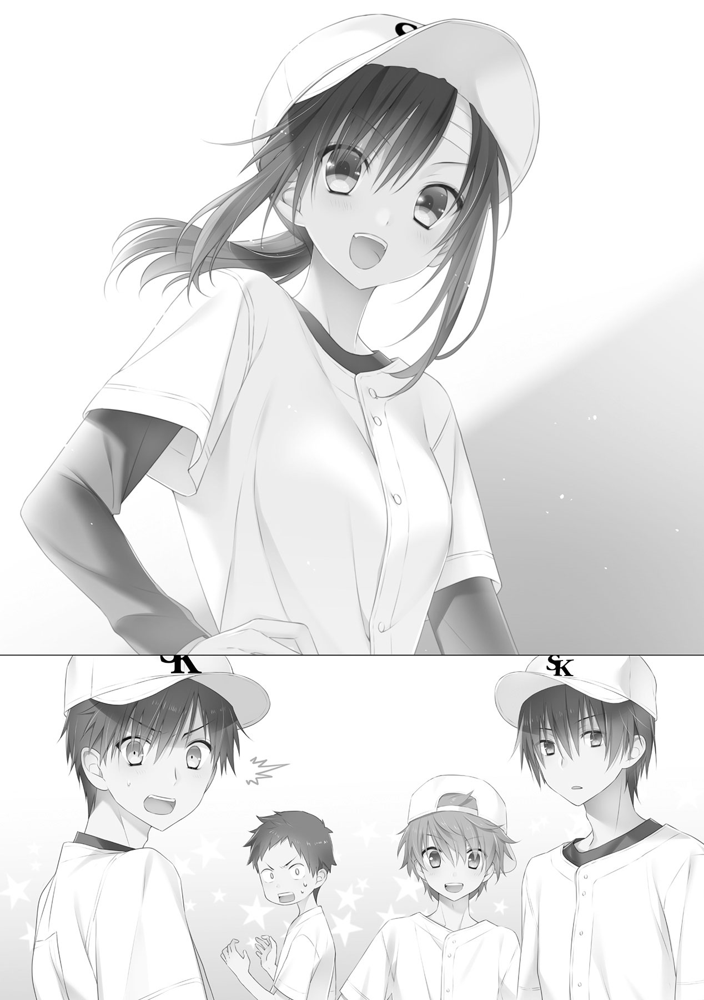
沙月の号令で、司城は頷いてセンターへと駆け出し、内野陣も散っていった。
マウンド上に残った敬一と阿瀬に沙月は向き直る。
腕を組みながら、二人に向けて話しかけてきた。
「さて、問題はこっちよね。どうやって抑えようかしら」
いきなり首をひねり始める沙月に、敬一は思わず口を出した。
「どうやって......って、作戦があるんじゃないのか？」
「あったような気もするんだけど、頭痛くてわからないわ」
「......ふん、病人が無理をするな」
わざとらしく頭を抱え込む沙月に、阿瀬が悪態をつき、そっぽを向いた。予想以上に元気そうなので、心配して損した、とでも思っているのかもしれない。まったくもって不器用なやつである。
「うん、だから病人は黙っていようかな」
「は？」
「だから、リードは阿瀬くんに任せようかなって言ってるのよ」
沙月は頭をあげて、けろりと言い放った。その台詞に、阿瀬だけでなく敬一まで驚き、言葉を失った。
だが、沙月はそんな二人にさも当たり前のごとく、話を続ける。
「だって、私のリードって彼に読まれてるし、臨機応変に変えるからベンチからだと指示しにくいしさ。ここは一つ、知られていない阿瀬くんのリードの意外性にかけてみようと思ったの」
「それで、抑えられるのか？」
「それは阿瀬くんに聞いてよ」
言われ、敬一は阿瀬に視線を向ける。沙月もまた、阿瀬に視線をやって、口を開く。
「阿瀬くん。本摩くんは球が遅い分、本当に狙い通りの場所に投げ込んできてくれる。しかもナックルボールを、ね。しっかりリードすれば誰も打てないピッチャーになるわ。これほとリードしがいのあるピッチャーは、いないと思うんだけど？」
挑発的な沙月の台詞に、阿瀬はふんと鼻で笑い、くるりとマウンドに背を向けた。
「望むところだ」
それだけ言って、がちゃがちゃと音を鳴らしながら阿瀬はマウンドを降りていった。それをひらひらと手を振って沙月は見送る。
「本当に大丈夫なのか？」
「もうなるようにしかならないんだから、どうせなら、みんなを信じましょう」
そこで沙月は言葉を切って、一度こほんと咳払いをする。
「敬一くん、さっきはどうもありがとう」
「え？」
「医務室まで運んでくれたじゃない。私、ぼーっとしていたけど寝てはいなかったんだからね。しかも、きちんと逆転タイムリーまで打ってくれちゃって、さ」
沙月はふてくされたように地面を蹴って、言った。
「私は結局ヒーローにはなれなかったけど、ヒロインでいいや。だから敬一くん、しっかりヒーローになってよ。ヒーローが負けたら、承知しないんだからね」
手をひらひらと振って、去っていく沙月。
今のは励ましなのか。
冷やかしなのか。
それに。
それに、今、間違いなく。
そこで、敬一はぶんぶんと首を振り、全てを忘れようとした。
今はそれどころじゃない。集中しなければならないのだ。
負けないためにも。
勝つためにも。
ヒーローで、あるためにも。
ベンチに戻った沙月は、監督に抱きかかえられるように崩れ落ちた。
「すい、ません......」
けだるそうに頭を抑えて、隣のベンチに腰を下ろす。マウンドの上では気丈に振る舞ってはいたものの、頭に蔓延る痛みはけして優しいものではなかった。
座った途端にひどい貧血のようなものが襲い掛かってきて、視界が一瞬真っ暗になる。ベンチからも崩れ落ちそうになる体を、背もたれに腕を絡めることでなんとかその場にとどめた。
頭痛と同時に襲ってくる吐き気に顔をしかませながら、沙月はじっとグラウンドに視線を走らせる。医者の制止を振り切って出てきた代償だ、このぐらいは我慢してみせよう。
沙月は、見届けなければならないのだ。どういう結果になろうとも、この試合の行方を見届けなければならない。
それを受け止めてこそ、自分は前に進めるのだと、わかっているから。
梶原沙月が、白倉柏シニアの捕手になった理由は、そこにあるのだから。
「でも、なるべくなら勝ってほしいなぁ」
沙月は自嘲し、ぽつりと呟いた。沙月がつらそうに大きく息を吐くのと、プレイがかかるのはほとんど同じタイミングだった。
初球の要求は、外角低めのストレートだった。
敬一は驚きに口を開きかけたものの、どんなサインでも頷くと決めていた以上、そのまま投球フォームに入る。野手の投げ方のような、独特のフォーム。球威はあまり出ないが、スピードはそこそこ出るし、コントロールだって悪くはない。ストレートでなければ、百発百中の自信があった。
外角の低めに要求されたストレートが、少し高めに浮く。もう少し内に入ると、絶好のホームランボールだ。だが、バッターの新田はぴくりとも動かなかった。
審判が気合をこめて腕を振り上げ、ストライクを宣告する。ワンストライク。
やはりまだストレートはぞっとしないな、と敬一はボールを受け取りながら思った。なるべく、ナックルで攻めていきたい。
だが、阿瀬の要求は、次もストレートだった。高めに外すとはいえ、二球連続でストレートとは思わなかった。
ええいままよ、と敬一は投球する。
明らかなボール球に新田は目もくれず、ボールが宣告される。ワンボール、ワンストライク。
三球目にして、ようやくナックルのサインが出た。内角の低め、それは先程ホームランを打たれた場所だ。
敬一は首を振ろうかどうか悩んだが、信じると決めた以上、貫き通さねば意味があるまい、と、ゆっくり頷いた。
鷲掴みにされた白球が、努力の妙を受け、無回転でキャッチャーめがけて飛んでいく。ゆらゆらと揺れて、ふらふらと揺れて、真っ直ぐに内角低めに吸い込まれていく。
新田のバットがぴくりと反応する。敬一がまずいと思ったときには、すでに新田はスイングを終えていた。鋭い金属音だけがグラウンドに響き渡る。続いて、がしゃんとフェンスにボールの当たる音が聞こえた。
「ファール、ファール！」
バックネット下のフェンスに一直線でぶつかったボールが、転々と地面を転がっていた。
敬一は思わずふうとため息をつく。審判から新しいボールを受け取って、じっと阿瀬のサインを待った。
阿瀬は、じろじろと構えた新田を見渡し、そしてサインを出してくる。
「え？」
流石に今度は驚き、目を見開いてしまった。反射的に首を振り、サインを拒絶していた。阿瀬はマスク越しにもわかる憮然とした表情で、再び同じ場所を要求してくる。敬一が再び首を振ると、懲りずに三度同じ場所を要求してきた。これではいたちごっこである。
敬一が助けを求めるようにベンチにちらりと視線をやった。
ちょうど、一番手前のベンチ。監督の隣に腰掛けていた沙月と、目が合った。
そして、沙月は、ゆっくりと頷いた。
思わず敬一も、それに合わせて頷いていた。
それをサイン受諾と勘違いしたか、阿瀬はミットをパンとならして、サインの場所に構える。
そういう意味じゃないんだと間合いを取りたかったが、あいにくけん制のやりかたとかはほとんど練習していないため、ボークが怖くてとてもできない。
「ええい、くそっ！」
敬一はしばし逡巡した後、吐き捨てるように呟いて、覚悟を決めた。
裂帛の気合とともに、渾身の力を振り絞って、送球をした。
今にも気合の声が聞こえてきそうなほどの、敬一の渾身の送球。
おおよそ投手らしくない、急造見え見えのフォームから投じられた、最高の球。
それを満足そうに見届けたところで、沙月の意識は、再び、途切れた。
目を覚ますと、眼前に真っ赤なものが広がっていた。
状況がよくわからず、沙月はきょろきょろと身の回りを見渡す。
固めのベッドに、柔らかすぎる枕、薄いシーツ。間違いない、ここは医務室だ。
そこまで把握したところで、もう一度視線を戻してみた。
なら、この真っ赤なものはなんなのだろう。
ところどころが金色の刺繍で煌びやかに装飾されていて、中心部にはなんだか鳥を象ったような模様が見てとれる。
少し視線をずらすと、臙脂色の棒が目に入り、そこに絡みつくように、びらびらと薄い布が一杯垂れ下がっている。
それぞれに黒い文字でなにやら刻んであるようだが、年代を感じさせる色あせたものが多くて、よく見えなかった。
だが、かろうじて読み取れた、その文字は。
その、文字は。
「......ゆう、しょう？」
沙月の呟きにあわせるように、敬一がにゅっとベッドの脇から姿を現した。
「そうだ、優勝だ」
阿瀬がずっと手にしていた優勝旗をゆっくり壁に立てかけて、得意げに鼻を鳴らす。
「お望みどおり、抑えてやったぞ」
隣の空のベットに腰掛けながら、石井が肩をすくめた。
「試合終了後、また姫が倒れたって聞いたときは焦ったよ。タフって発言は謹んで撤回させてもらうね」
「無理はよくないぞ」
石井の隣で腕を組んで佇んでいた司城が、いつも通りの淡々とした口調で告げる。
沙月はベッドから体を起こして、周囲をぐるりと見渡した。そして、愕然とした。
白倉柏シニアの皆が、医務室に所狭しと詰めかけていたのだ。
目を覚ました沙月に、次々と声をかけてくる。何がなんだかわからない沙月は、生返事を返しながら敬一に目線で助けを求めた。
敬一は戸惑う沙月の様子に苦笑を浮かべながらも皆を諌め、沙月に向けて、言った。
「グラウンド、行ってみるか？」
沙月は、一も二もなく頷いた。
すでに閉会式も終わり、観客が撤収してしまったグラウンドは、沙月の想像以上に閑散としていた。移動中に聞いた話によれば、試合終了直前に沙月は倒れて、そのまま閉会式が終わるまで寝続けてしまったらしい。
どうして起こしてくれなかったのか、と敬一に文句を言ってみたものの、医者に全力で止められたと言われてしまったのだから、しょうがない。
寝ていたおかげだろう、頭痛や吐き気はすっかり治まっていった。
沙月は浜風の吹きつけるグラウンドに上がり、いまだ表示が残されていた電光掲示板を見上げる。
白倉柏シニア対黒岡早良シニア。
４対３。
それを見た瞬間、沙月の体に電撃が走ったような衝撃が訪れた。
勝利の実感とも呼べる、それ。手が震え、足が震える。思わずグラウンドに、ぺたんと座り込んでしまった。
勝ったのだ。私は、勝ったのだ。
話に聞くだけでは実感の湧かなかった事実。それが、如実にそこには現れていた。
何度見ても見間違いではない、数字が入れ替わったりはしない。
黒岡早良に、勝ったのだ。みんなは、勝ってくれたのだ。
完全に脱力し、へたりこんでいる沙月の首に、敬一はゆっくりと紅白の帯をかけてあげた。
その先端に結ばれたるは、金のメダル。まぎれもない、優勝の証。
愛でるようにそれを撫でる沙月に、敬一は言う。
「優勝、おめでとう」
一時間遅れの、祝いの言葉。
それがなにより、沙月の心に染み渡った。
「ありがとう」
沙月は、このときばかりは、いつものような不敵なものではなく、満面の笑みを浮かべた。
観客席の端っこで、こっそりと沙月の無事な姿を確認した斎は、ほうと胸を撫で下ろした。敬一に抱きつく沙月をみて、少し複雑そうな表情を作るが、それも一瞬、はにかむような笑顔を浮かべる。
その隣で、新田と鷹津が電光掲示板を見上げながら、話していた。
「最後、ど真ん中じゃったんじゃろ。どうして打たんかったん？」
「......うるさいな。あれだけピッチャーが首を振った後に、ど真ん中が来るなんて誰が思うか」
「はは。まだまだじゃのぉ。わしも、われも、われらも、な」
「......次は負けない」
「そうじゃのぉ、次は必ず、な」
新田は悔しそうな表情のまま、ゆっくりと立ち上がり、出口へと向かう。
うわべだけの笑顔は、浮かべていない。
「斎、行くぞ」
「うん」
新田の呼びかけに、斎は駆け足で観客席を後にする。ふと、思い出したように小さく沙月に向かってお辞儀をした。そして、新田と鷹津を追いかけるように駆けていった。
「こら、ショート！ そこはサードの守備範囲！ でしゃばるんじゃない！」
「なんだよ姫、いいじゃんかー。守備範囲の広いことはいいことだよ？」
「サードの守備練習にならないって言ってるの！ そんなに守りたいなら、あとで特守一時間プレゼント！」
「だから特守は......ああ、でも、姫と一時間つきっきりってのも、いいかもなぁ」
「阿瀬くんとよ」
「絶対嫌ですごめんなさい」
キャッチャーのポジションで怒鳴り声を上げる沙月に、石井はへこへこと頭を下げる。毎度毎度のことながら、よく飽きないなとピッチャーマウンド上の敬一は思った。
今、白倉柏シニアは全国大会に向けての猛特訓の真っ最中。各ポジションについての、守備の連携練習だ。
いつ考えたのか、沙月は関東連盟大会の帰りのバスで、『守備力の強化が最優先項目』、といきなりテーマをぶちあげ、今後の予定を発表し始めた。
優勝の歓喜にひたっていたナインは、次々と挙げられるスペシャルプログラムに、優勝の喜びを忘れていった。
阿瀬の「準優勝のほうが良かったんじゃないか」という発言は今でも忘れられない。
思い出しただけでむなしくなってきたので、敬一はため息をついて思考を現実に引き戻した。
とはいえ、皆、沙月のおかげで優勝ができたということは、一人の漏れもなく認めていた。
沙月がいなければ、ちぐはぐなまま皆は三年間を終えていたことだということも、わかっていた。
敬一だって、己の送球の特異性に気付くこともなく、高校にいって野球を続けていたとしても、外野あたりにコンバートされていたかもしれない。
そう考えれば、まさに『梶原沙月さまさま』なのである。
だからこそ皆、誰一人文句も言わずに、優勝の一日後から特訓に参加しているのだ。
練習嫌いだったはずの阿瀬も、マイペースだった司城も、自由奔放に練習していた石井も、梶原沙月の元、ひとつになった『白倉柏シニア』として、練習を満喫していた。
「ピッチャー、行くわよ！」
「おう！」
凛とかかった声に、敬一は威勢よく応える。
力強く放たれた球を、華麗に捌き、毎度お馴染みの寸分違わぬ送球で、キャッチャーに投げ返した。
沙月は嬉しそうに笑い、パンとミットを叩いた。
そして、変わったのはチームだけではなかった。
「敬一くん、一緒に帰ろう」
「あ、ああ」
あの決勝戦以降、沙月は敬一のことを名字ではなく名前で呼ぶようになっていた。
練習後、帰り道が同じということもあって、居残りの特訓がなくても敬一は沙月とよく一緒に帰るようになっていた。
石井なんかにはたびたび冷やかされたりもしたが、沙月自身は特に気にする様子もなく、元に戻す様子もない。みんなからは名前で呼ばれている手前、沙月にだけ「名字で」とも言えない状況だ。
もっとも、呼ばれている側としては気が気でない。皆からの視線も無視できないほどに強くなってきていた。
いい加減、はっきりと言わねば。
いや、はっきりとさせねば。
心の中で、ぐっと握り拳を作る。意を決して話しかけようとしたそのとき、不意に声をかけられた。
「ねえ、敬一くん」
「は、はいっ！」
思わず声が裏返ってしまった。
しかし隣を歩く沙月は、そんな敬一の様子を意にも介さず、夕焼けにもわかる不満げな表情を浮かべながら言葉を続ける。
「敬一くんは、いつになったら私のことを名前で呼んでくれるの？」
「は!? な、何言ってんだ！」
「だって、司城くんも阿瀬君も名前で呼んでるのに、私のことはいまだにずっと名字で呼ぶじゃない。なんだか距離を感じるのよね」
「石井のことだって名字で呼んでる」
「だってそれ、みんながそうしてるからでしょ？」
ジト目で指摘する沙月。
まったくもってその通りなので、敬一はぐうの音も出ず黙り込むしかなかった。
「全国大会に向けて、もっともっとチームのみんなとの距離感を近づけないと理想のチームにはなれないと思うのよ」
「そのための名前呼び？」
「まずは形から、って昔から言うでしょ」
「だったら石井に名前呼びさせればいいじゃんか。喜んでやってくれるぞ、あいつなら」
「ダメよ、それこそ関係性の変化を疑われちゃうもの」
「オレが呼んでも同じだと思うが......」
「だからそうならないように、私の方から呼び方変えたじゃない」
なんだかどんどんと外堀を埋められている気がする。どこまで計算ずくで、どこまでが偶然かわからないのが梶原沙月の怖いところだ。
「うちのチームの方向性を決めているのは敬一くんよ。敬一くんが率先して動けば、みんなもそれに追従してくれる。私がみんなに合わせて敬一くんと呼ぶようになった、だから敬一くんもより距離を縮めるために、チームの協調性のことも考えて、私のことを名前で呼ぶようにした。ほら、何もおかしなところはないじゃない？」
だめだ。これ以上話しても、逃げ道をなくす不毛な戦いが続くだけだ。
敬一の心中を察したか、沙月はにこりと笑って手を向けてくる。
「それじゃ、練習してみましょう」
どうしてこう、観念した瞬間まで把握されてしまっているのだろう。
敬一は泣きたくなるような気持ちを抑え、気恥ずかしそうに小声で呟く。
「......さ、沙月、さん？」
「同い年なのになんで「さん」付けしてるのよ、やり直し」
ぴしゃりと一喝された。
敬一は観念したように重いため息をつき、ぽつりと、しかしはっきりとその名を口にした。
「......沙月」
「......うん。よろしくね、敬一くん」
満足そうな笑みを浮かべる沙月。
敬一は気恥ずかしそうにそっぽを向きながら、わしゃわしゃと頭をかく。
「これ絶対に石井にからかわれるし、今以上に勘違いするやつも出てくるぞ......」
「勘違い？ したい人にはさせておけばいいのよ、ああいうのは気にしたほうが負け」
そこで沙月はくるりと回転し、夕焼けの空を見上げながら、ぽつりと呟く。
「それに、ちょうどいいしね」
「え？」
風に流れたその言葉は、敬一には届いていなかった。しかし沙月は満足そうにくるくるっと回転し、数歩前に躍り出る。
「なーんでもなーい。さ、それじゃ敬一くん、さっさと帰りましょう。明日も朝から練習よ」
「あっ、おい、梶原！」
とととっと早足で歩き出す沙月に、敬一はいつものように声をかける。しかし沙月は止まらず、いたずらっぽく笑いながら応じる。
「梶原って言われても、どの梶原かわかりませーん」
「子供みたいなこと言うな！ ああもう、待てって......沙月！」
「ふふっ、そうそう。さっそく板についてきたね、敬一くん」
最後にくるりと半回転し、沙月は敬一に向き直る
彼女は夕焼けに映える、まばゆい笑顔を浮かべていた。
はじめまして。
明日崎幸と申します。
「彼女が捕手になった理由」
ここまでお読みいただきありがとうございました。
この作品は、野球の小説です。特殊能力とか異世界とか一切無縁、徹頭徹尾野球です。
それがたまたま一迅社さまの目にとまり、お声がけいただいて、こうして一迅社文庫で出版していただく運びとなりました。
正直な話、「出しませんか」と連絡いただいたときは「正気か」と思いました。
あとがき書いてる今でも「実はドッキリでした」と言われるんじゃないかと少し思っています。しかも多分「ですよねー」って感じで納得します。
流行とかそういうのを一切考えず「とにかく野球が書きたい！ 野球書く！」という意志で出来上がった、趣味１００％の内容となっております。
それにしても......野球、いいですよねえ。
私は見るのもやるのも好きですし、妄想するのも好きです。
妄想ドラフト会議では自分の贔屓球団に目玉選手が続々入団しているので、妄想ペナントレースではいつも独走状態です。
投手王国。打者天国。我が軍は最強だ。
でも、現実は非情でつらい。
なお、このあとがきを書いているときが、ちょうど甲子園開会の日でした。
最近はプロ野球のテレビ中継が減ってしまい、寂しい思いをしていたのですが、この時期は毎日野球をテレビで見ることができるので、とても幸せです。
そんな穏やかな気持ちを抱いたまま、スコアを見てみたら、一試合目から大荒れでした。
甲子園こわい。
本作の舞台としている中学生――リトルシニアの試合は、基本的には接戦になることが多く、劇的な逆転もたびたび起こります。
そんな展開を期待して見に行った試合は、２０対０ぐらいの圧倒的大差コールドでした。
リトルシニアこわい。
ちなみに、リトルシニアのチーム名は基本的に地名なので、執筆時は実在地名を使って書いていたのですが、出版にあたって念のため全部架空のものに差し替えております。
同じ名前のリトルシニアチームはないはずです。はい。
あっても本作はフィクションなので気にしないでください。
同様に、選手名も出版にあたって執筆時から大きく変更しました。
読んでいて何かぼんやり実在の選手が思い浮かんできたとしても気にしないでください。
この作品はフィクションです。フィクション、便利な言葉。
さて、フィクションフィクションと連発してきましたが、野球に対する思いは本物です。
その気持ちがそのまま具現し、情熱をめいっぱい詰め込んだのが、本作となります。
野球が好きな方にも、そうでない方にも、楽しんでいただけてると幸いです。
最後になりましたが、謝辞を。
イラストを担当いただいた、さくらねこ様。真夏のロケーションで野球というとても暑苦しい作品の清涼剤となる、美麗なイラストの数々、本当にありがとうございました。
また、一迅社のＫ井様をはじめとして、本作の出版に関わられた皆々様、心より感謝申し上げます。
そして、ここまで読んでいただいた読者の皆様。
重ねての御礼となりますが、本当にありがとうございました。
明日崎幸
彼女が捕手になった理由
２０１５年10月１日 初版発行
著 者 明日崎幸
発行者 杉野庸介
発行所 株式会社一迅社
〒１６０―００２２
東京都新宿区新宿２―５―10 成信ビル８Ｆ
制 作 大日本印刷株式会社
©Yuki Asuzaki／一迅社
本書はフィクションです。実際の人物・団体・事件などには関係ありません。
本書の内容を無断で複製、複写、放送、データ配信等することは、堅くお断りいたします。